В момента четете българската версия на Потребителското ръководство за KOReader. Доброволци превеждат това ръководство и на други езици. Имаме много преводи в процес на работа, както можете да видите в общото състояние на преводите по-долу. Но с цел удобство предоставяме връзки само към езиците, които са преведени над 50%.
Преведени над 80%
За да видите всички езици, които се превеждат в момента, и да допринесете за превода на потребителско ръководство, моля, посетете страницата за превод в Weblate на нашия проект.
Общо състояние на превода на потребителското ръководство

Това ръководство е предназначено предимно за цветни екрани. Ако го използвате за първи път, силно препоръчваме да го четете на компютър, таблет или мобилен телефон. Защото виждането на цветно откроените елементи от потребителския интерфейс ще ви улесни, докато се учите как да използвате KOReader. Разбира се, можете да го четете и на вашето устройство с E-ink, но изживяването няма да е оптимално.
Можете да използвате функцията за търсене на вашия браузър, за да намерите конкретна тема или ключова дума (със Ctrl + F). Ако имате предложение или въпрос, свързан с това потребителско ръководство, можете да пишете в тази дискусия в GitHub.
Части от текста в това ръководство са цветово кодирани според тяхната категория:
ЧАСТИ НА KOREADER (СИНЬО) |
Лента на състоянието, Карта на книгата… |
ПЪТИЩА В МЕНЮТО (ЗЕЛЕНО) |
ГОРНО МЕНЮ /  / Стил на подчертаване / Стил на подчертаване |
ВЪНШНИ ПРИЛОЖЕНИЯ (ЛИЛАВО) |
Calibre (софтуер за управление на електронни книги), Readwise (приложение за преглед на бележки), KoHighlights (инструмент за управление на отметки)... |
В ръководството имаме и различни полета, които да ви информират или предупреждават:
KOReader се разработва и поддържа от доброволци от цял свят. Вие също можете да бъдете част от този проект чрез:
- Отстраняване на програмни грешки и внедряване на нови функции
- Превеждане на програмата на вашия език или подобряване на съществуващ превод
- Помагане на другите с вашите знания във форумите или в дискусиите в GitHub
Проверете раздела Свържете се с нас за връзките.
Последна актуализация на ръководството: 2025-03-25
- КАКВО МОЖЕТЕ ДА ПРАВИТЕ С KOREADER?
- ОСНОВНА ИНФОРМАЦИЯ ЗА УПОТРЕБА
- ОПОЗНАВАНЕ НА ПОТРЕБИТЕЛСКИЯ ИНТЕРФЕЙС
- ПРИДВИЖВАНЕ ИЗ КНИГАТА
- ПЕРСОНАЛИЗИРАНЕ НА ВЪНШНИЯ ВИД НА ТЕКСТА
Въпреки минималистичния си вид, KOReader е много мощно и подлежащо на персонализиране приложение. Този раздел е като ориентирано към практиката съдържание. Така че, ако сте нов потребител, това е най-доброто място да започнете. Тук можете да прочетете какво може да прави KOReader и да научите как да го направите, като следвате тези връзки , за да отидете в споменатите раздели.
- Режим USB памет за поддържащите устройства
- Облачно хранилище (Dropbox/FTP/Webdav) с подходящи профили
- KOReader може да действа като SSH сървър, така че можете да използвате SFTP приложение или вашето управление на файлове, за да прехвърляте директно файлове
- С плъгина Calibre можете да изпращате книги от вашата Calibre библиотека директно към вашите устройства с KOReader чрез безжична връзка
- С плъгина Изтегляне на новини можете да изтегляте новини от RSS и Atom на вашето устройство като HTML файлове
- С плъгина Wallabag можете да извличате статии от вашия профил във Wallabag (базирана на сървър услуга за отложено четене като Pocket)
- Променяйте шрифтовете (включително ваши собствени), размера на шрифта, контраста, удебеляването, кърнинга, интервала между думите, разтягането на думите, подравняването на текста, междуредието, оформлението на колоните, полетата...
- Използвайте включените мощни промени в стиловете или напишете свои собствени, за да промените точно как се изчертават вашите книги
- Обърнете цветовете на екрана за нощен режим ръчно или автоматично
- Регулирайте автоматично топлината на подсветката
- Подчертавайте текст с различни стилове и цветове, поставяйте отметки
- Режим с две докосвания за академични/по-дълги подчертавания
- Добавяйте бележки с помощта на персонализирана клавиатура, включваща диакритични модификатори
- Правете снимки на екрана
- Проследявайте вашата статистика на четенето, включително напредък в четенето, времеви диапазон и календарни изгледи
- Експортирайте вашите бележки и подчертавания към устройството си в текстов, markdown, HTML, JSON или Kindle clippings формат
- Синхронизирайте с онлайн услуги като Joplin, Readwise, Memos, Flomo и XMNote
- Мощно Управление на файлове, където можете да копирате, премествате, преименувате, създавате, премахвате файлове и папки и да извършвате групови операции
- Разглеждайте библиотеката си както предпочитате чрез различни детайлни и мозаечни изгледи
- Добавете книгите си към Избрани за бърз достъп или създайте свои собствени Списъци със сортиране и филтриране
- Инструмент за бърз преглед за бързо преминаване между страници, глави, отметки
- Уникална Карта на книгата за цялостен поглед върху книгата ви, включващ всички ваши бележки и подчертавания
- Преглед на страници за плавно прелистване на страниците като филмова лента
- Разглеждане на отметки за лесен преглед на вашите подчертавания и бележки
- Създайте алтернативно съдържание автоматично или ръчно, ако вграденото в книгата не ви допада
- Скрийте и изключете определени части от книгата си като Приложение, Индекс, Препратки и др. за по-точно отчитане на страниците
- Мощната система за жестове с над 200 действия ви позволява да управлявате всеки аспект на KOReader с докосване или плъзгане
- Ако имате клавиатура (вътрешна, жична или bluetooth), можете също да зададете клавишни комбинации към тези действия
- Или създайте свои собствени менюта с любимите си действия с Бързо меню и осъществявайте достъп до тях с докосване или плъзгане
- Създайте Профили, за да управлявате всеки аспект на KOReader и да автоматизирате действията
- Търсете в документа чрез избиране или въвеждане на текст (включително регулярни изрази)
- Търсете във вашите отметки, подчертавания и бележки
- Потърсете текст в Уикипедия или в инсталираните речници и го преведете чрез продължително докосване
- Преведете цялата страница наведнъж на над 130 езика
- С нашата мощна система от плъгини можете дори да обсъждате текста с ChatGPT (след инсталиране на плъгина)
- KOReader може да се актуализира сам
- Затъмнете или изключете светлината на екрана си след определен интервал
- Задайте интервалите си за опресняване на страниците за различни условия на четене
- Задайте ваш собствен екранен предпазител от много опции като случайни изображения, корица на книга, четене, напредък и др.
- Задайте известия за ограничение на заряда на батерията, за да предотвратите дълбоко разреждане/прекомерно зареждане
- Задайте предупреждение за използваната памет (полезно за устройства с по-малко памет) и по избор рестартирайте KOReader при достигане на този лимит
- Изрежете полетата автоматично или ръчно
- Прекомпозирайте документите, за да извлечете текста и да четете по-лесно на малък екран
- Приложете OCR към документи без текстови слоеве, като сканирани стари книги
- Различни видове мащабиране и посоки на прелистване, за да четете лесно многоколонни документи като научни статии
- Автоматично изравняване на наклонени страници в документи, например при стари сканирани книги
- Запазете вашите подчертавания директно в PDF файлове, което ви позволява да ги виждате без KOReader
- Специална функция Панел за мащабиране за четене на манга
- Регулируеми настройки за опресняване на екрана за перфектно балансиране между остатъчни изображения и скорост
- Добавяйте свои собствени CSS промени в стиловете за книгите
- Система за Потребителски кръпки, която ви позволява да промените основните поведения на KOReader
- Създавайте QR код от клипборда (междинната памет), за да споделяте текст и връзки с други устройства
- Преглед на HTML кода на EPUB документ
- Създаване и редактиране на текстови файлове на вашето устройство
- Отворете емулатор на терминал и изпълнявайте команди на вашето устройство
- Вижте статистиката за използването на процесора, паметта и батерията
KOReader поддържа файлове PDF, EPUB, DJVU, MOBI, CBZ, CBT, DOCX, RTF, HTML, TXT, XPS, FB2, PDB, CHM и MD. Също така може да отваря ZIP архиви и да показва файлове с изображения.
Има много начини да прехвърлите документите си на вашето устройство. Обърнете внимание, че може да се наложи да рестартирате KOReader, за да индексирате прехвърлените документи (или да опресните директорията, ако имате Pocketbook/Android).
В допълнение към прехвърлянето на файлове по същия начин, както бихте направили с вграденото приложение за четене, са налични и други опции в зависимост от вашето устройство:
- Режим USB памет в KOReader: Този режим е наличен за устройства KOBO и някои устройства CERVANTES.
- Облачно хранилище (Dropbox/FTP/Webdav): За да използвате тази функция, трябва да добавите профили за сървър за облачно съхранение чрез менюто, показано по-долу. Процесът е обяснен чрез бутоните за информация в менюто, докато добавяте профили:
ГОРНО МЕНЮ (в Управление на файлове) /
 / Облачно хранилище
/ Облачно хранилище - Достъп през SSH/SFTP: KOReader може да действа като SSH сървър, до който можете да получите достъп от компютър, за да прехвърляте файлове (налично за Kobo, Kindle, Cervantes). Можете да използвате SFTP приложение (като Filezilla) или да получите достъп чрез приложението за управление на файлове, ако операционната ви система го поддържа. Проверете нашата wiki страница за инструкции и вижте полето с предупреждение по-долу.
- Прехвърляне от Calibre: С плъгина за Calibre можете да изпращате документи от вашата библиотека на Calibre директно към вашите устройства с KOReader чрез безжична връзка. Проверете нашата wiki страница за инструкции.
- Изтегляне на новини: С този плъгин можете да изтегляте новини от RSS и Atom като HTML файлове. Проверете wiki страницата за инструкции.
- Wallabag: С този плъгин можете да извличате статии от Wallabag, базирана на сървър услуга за отложено четене като Pocket. Проверете страницата в wiki за повече информация.
ВНИМАНИЕ Бъдете внимателни, ако решите да използвате функцията SSH без парола, защото това позволява открит достъп до вашето устройство. Но ако използвате локална безжична връзка и я включите за кратко време, този риск е незначителен.
Следните методи са налични за достъп до вашите книги:
- Управление на файлове - Специалният раздел е тук: Използване на управление на файлове
- Избрани - Списък, в който можете да добавяте книгите си чрез продължително натискане върху тях в Управление на файлове
- Хронология - Списък на книгите, които сте отваряли
- Списъци - Персонализирани списъци с книги, които сте създали. Специалният раздел е тук: Списъци
Можете да промените как изглеждат тези екрани от:
 / Режим на показване
/ Режим на показванеАко искате да промените колко елемента се виждат на тези екрани, вижте тук:
/ Настройки / Настройки на режима мозайка и подробен списъкМожете да зададете жестове за всеки от тези диалози. Например, докато четете книга, можете да получите достъп до вашата Хронология или Избрани с жест и да отворите друга книга, без да преминавате през Управление на файлове.
Можете да потърсите книга в екрана Хронология по име на файл или информация за книгата от бутона на менюто горе вляво.
Можете също да настроите KOReader да стартира директно с екран Избрани или Хронология вместо Управление на файлове чрез:
/ Стартиране с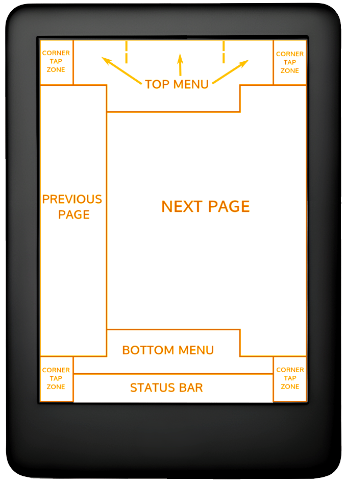
На изображението по-горе можете да видите позициите на подразбиращите се зони за докосване в KOReader. За да покажете горното меню или долното меню, можете да докоснете посочените зони. Можете също да плъзнете надолу в горната зона, за да покажете горното меню. При устройства без сензорен екран като Kindle 4, можете да отворите долното меню, като натиснете бутона, който съответства на действието ENTER/OK.
Ако искате да отворите двете менюта едновременно, можете да зададете зоната на горното меню да отваря едновременно горното и долното меню чрез това меню:
 / Докосване и жестове / Отваряне на менюто
/ Докосване и жестове / Отваряне на менюто
Зоните за докосване в ъглите могат да се използват за много различни видове жестове, включително ДОКОСВАНЕ, ДВОЙНО ДОКОСВАНЕ, ДОКОСВАНЕ С ДВА ПРЪСТА и ДОКОСВАНЕ И ЗАДЪРЖАНЕ.
Зоните ПРЕДИШНА СТРАНИЦА и СЛЕДВАЩА СТРАНИЦА могат да се използват едновременно и за жестове с ДВОЙНО ДОКОСВАНЕ.
Зоната на лентата на състоянието може да бъде докосвана за превключване между елементите в лентата на състоянието, ако е видим само един елемент. Ако всички елементи са видими, докосването ще покаже и скрие лентата на състоянието.
- Промяна на шрифта*:ГОРНО МЕНЮ / / Шрифт
- Увеличаване на шрифтаДОЛНО МЕНЮ /

- Удебеляване на шрифтаДОЛНО МЕНЮ /

- Обръщане на цветовете на екрана (бяло на черно)ГОРНО МЕНЮ / / Нощен режим
Можете също да промените други опции за форматиране от ДОЛНОТО МЕНЮ, за да настроите фино външния вид на текста си. Разбира се, това са само бързи съвети за начало. Имаме цял раздел, посветен на ПЕРСОНАЛИЗИРАНЕ НА ВЪНШНИЯ ВИД НА ТЕКСТА
Можете да управлявате осветлението на екрана чрез това меню. Ако имате топло осветление (нормални бели светодиоди + оранжеви), можете да ги управлявате отделно от този диалог. Можете също да зададете жест за този диалог:
/ ПодсветкаМожете да изберете корица на книга или потребителско изображение като екранен предпазител чрез това меню:
/ Екран / Екранен предпазителМожете да използвате JPG/PNG файлове като екранен предпазител (правилно дитеровани изображения в скала на сивото изглеждат най-добре). Прехвърлете файловете от компютъра си в която и да е папка на вашето устройство. И изберете тази папка като папка за екранен предпазител чрез това меню:
/ Екран / Екранен предпазител / НастройкиМоля, обърнете се към тази публикация във форума на Mobileread за разширена информация относно подготовката на изображения за екранен предпазител.
Ако търсите информация за клавишни комбинации, щракнете тук, за да отидете в този раздел. Това заглавие обяснява само използването на клавиатурата.
- Докоснете извън полето за въвеждане, за да затворите клавиатурата, докоснете полето за въвеждане, за да покажете клавиатурата отново
- Плъзнете нагоре по клавишите, за да въведете главна буква (или малка буква, ако вече сте в режим shift)
- Можете да промените външния вид на клавиатурата:
ГОРНО МЕНЮ / / Устройство / Клавиатура / Настройки на клавиатурата
- Можете да изберете повече от една подредба:
ГОРНО МЕНЮ / / Устройство / Клавиатура / Подредба на клавиатурата
- Можете да превключвате между избраните подредби, като докоснете иконата
 на клавиатурата
на клавиатурата
Клавиатурата на KOReader позволява въвеждането на допълнителни символи, когато докоснете и задържите клавиш. Най-често използваните допълнителни символи са показани по-долу. Можете да докоснете и задържите клавиша в сивото поле, за да получите заобикалящите символи:
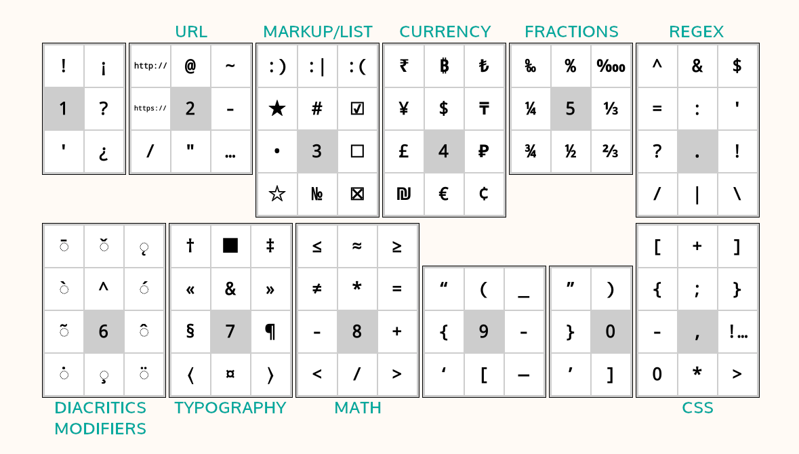
Освен изскачащия прозорец при продължително натискане, можете да въведете тези допълнителни символи и чрез плъзгане върху клавиш. В примера по-долу можете да плъзнете нагоре по клавиша a, за да въведете главно A, или да плъзнете в други посоки, за да въведете показаните символи. Обърнете внимание, че показаният пример включва пълния изскачащ прозорец за демонстрация. Не е нужно да отваряте този прозорец, можете директно да плъзгате върху клавишите. След като свикнете с местоположенията на допълнителните символи, можете да ги въвеждате много по-бързо по този начин.

Ако тази функция пречи на работата ви, можете да я деактивирате, като премахнете отметката на:
/ Устройство / Клавиатура / Плъзване за въвеждане на допълнителни знациОсвен това има някои преки пътища за по-лесно манипулиране на текст. Можете да докоснете и задържите тези клавиши за допълнителни действия:
- Стрелка наляво - Премества курсора в началото на реда
- Стрелка надясно - Премества курсора в края на реда
Също така клавишът backspace се държи различно, когато правите жестове с плъзгане върху него:
- Докосване: Изтрива един символ
- Продължително натискане: Изтрива целия ред
- Плъзгане наляво: Изтрива частта от думата вляво от курсора
- Плъзгане нагоре: Изтрива цялата дума
За повече информация можете да проверите свързаната wiki страница.
KOReader също интегрира клавиатурата с китайски щрихи за въвеждане на опростени и традиционни китайски йероглифи. Можете да намерите повече информация за това в нашата wiki страница.
Този плъгин ви позволява да регулирате топлината на подсветката в устройства с естествена (жълта/оранжева) светлина и автоматично да задавате нощен режим (обърнати цветове на екрана – бял текст на черен фон) според график. Той може да контролира и двете или можете да изберете режим само управление на топлината или само управление на нощен режим, така че да можете да регулирате другото ръчно.
Този плъгин е активиран по подразбиране, когато инсталирате KOReader. Ако по някаква причина не е в менюто, можете да го активирате оттук:
/ Повече инструменти / Автоматичен нощен режимМожете автоматично да регулирате топлината на подсветката на екрана си по два различни начина:
Фиксиран график: В този режим топлината на подсветката се променя според въведения от вас дневен график. Този режим е статичен, той не отчита дължината на деня. Графикът остава един и същ през цялата година.
Позиция на слънцето: Тази опция изчислява позицията на слънцето във вашето местоположение според въведената от вас информация за координати и надморска височина. Топлината на подсветката се регулира постепенно според тези изчислени данни за позицията на слънцето. Този режим е динамичен. Тъй като продължителността на деня се променя през годината, плъгинът коригира графика съответно.
Първо разгледайте това изображение, за да се запознаете с термините, използвани в плъгина:
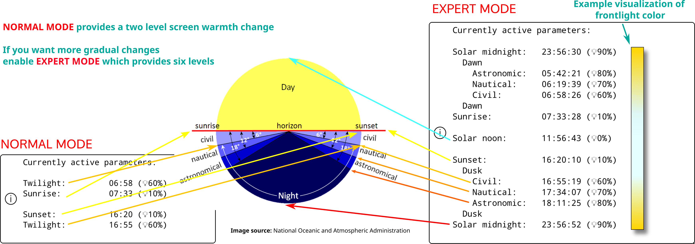
- Отидете в менюто на плъгина: ГОРНО МЕНЮ / / Екран / Автоматичен нощен режим
- Докоснете елемента Включване и след това докоснете По график
- Върнете се в предишното меню и докоснете елемента Настройки на фиксирания график
- Задайте своя график за преход на топлината, като зададете часове за различните елементи тук. Вижте изображението по-горе за обяснение на елементите.
- Отидете в менюто на плъгина:
ГОРНО МЕНЮ / / Екран / Автоматичен нощен режим
- Докоснете елемента Включване и след това докоснете По местоположението на слънцето
- Върнете се в предишното меню и докоснете елемента Настройки на местоположението. Задайте правилно вашите координати (задължително) и надморска височина (по избор) и дайте име на вашето местоположение.
- Върнете се в предишното меню и докоснете елемента Настройки за топлина и нощен режим
- Задайте своя график за преход на топлината, като зададете часове за различните елементи тук. Вижте изображението по-горе за обяснение на елементите.
Можете да видите текущия си график чрез опцията Текущо активни параметри в менюто.
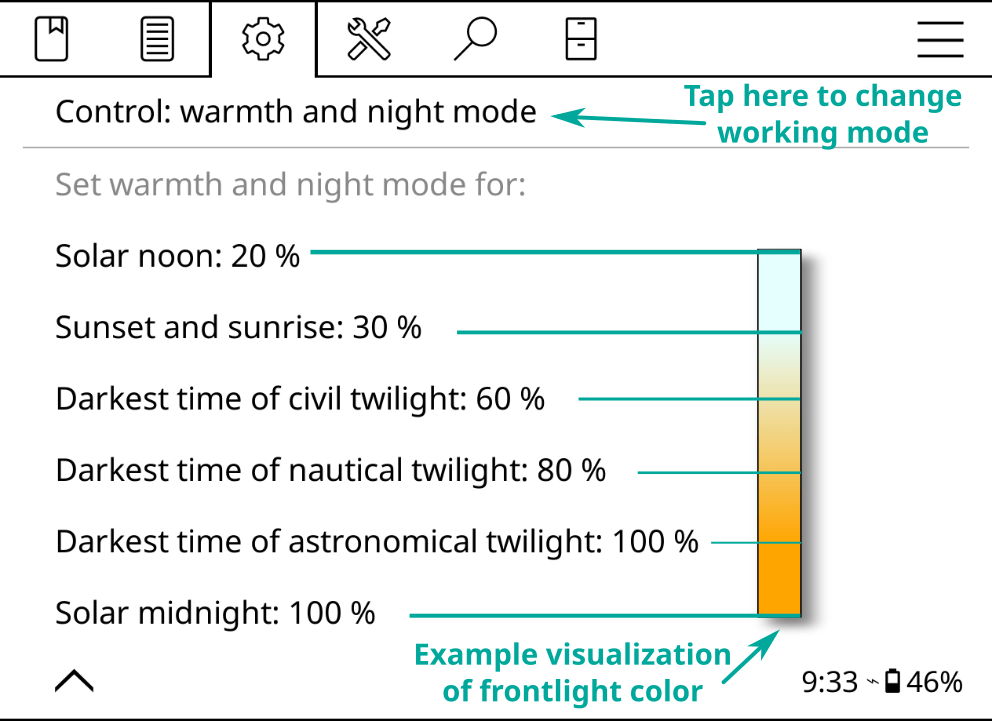
Докато задавате процентите на топлата светлина за различните интервали, можете също да зададете този интервал на Нощен режим, което обръща цветовете на екрана, когато интервалът започне. Ако минималната ви подсветка все още е твърде ярка или ако предпочитате тъмен фон на страницата, можете да активирате тази функция. За да я активирате, в диалоговия прозорец по-долу докоснете квадратчето за отметка Нощен режим и докоснете Задай.
Когато направите това, в менюто до този интервал ще се появи икона на луна. За да деактивирате нощния режим, просто премахнете отметката от Нощен режим в съответния интервал.
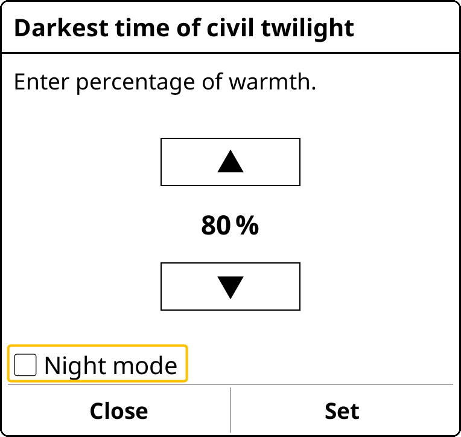
Тази функция включва вашата подсветка по залез и я изключва по изгрев според Текущо активните параметри в този плъгин. Можете да отмените тази промяна, като ръчно включите/изключите подсветката си. При следващия изгрев/залез AutoWarmth ще я превключи отново, ако е необходимо. Можете да я активирате, като изберете елемента Изключена подсветка през деня в този плъгин.
Ако искате топлината на вашата подсветка да се променя бързо, вместо по-постепенно:
- Задайте режима на Фиксиран график, следвайки инструкциите по-горе
- И коригирайте настройките по начин, подобен на изображението по-долу:
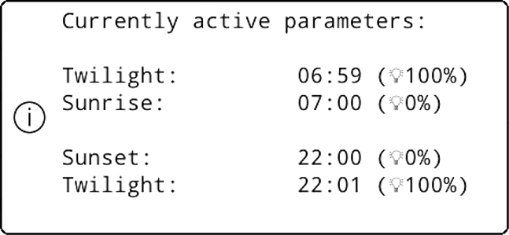
Както можете да видите в тези настройки по-горе, има само една минута разлика между прехода ден-нощ. Така че топлината на екрана преминава от 0 до 100 (или обратно) само за една минута. Можете да увеличите това времево разделяне, за да направите продължителността на прехода по-дълга.
KOReader има прост, предимно черно-бял потребителски интерфейс, тъй като цветовите преливания и различните нюанси на сивото могат да причинят премигване и остатъчни изображения (ghosting) на E-ink екраните, което би влошило удоволствието от четенето.
KOReader има 2 основни интерфейса: екран за четене и управление на файлове. Тук ще обясним екрана за четене. Управление на файлове е обяснено в този раздел на ръководството.
ЕКРАНЪТ ЗА ЧЕТЕНЕ има две менюта:
- ГОРНОТО МЕНЮ включва елементи от менюто, свързани с общото използване на KOReader. Тук ще имате достъп до вашите книги, предпочитания на KOReader, плъгини и т.н.
- ДОЛНОТО МЕНЮ е фокусирано върху опциите за форматиране на документа като плътност/размер на шрифта, междуредие и т.н. Докато настройвате външния вид на текста си, ще взаимодействате най-вече с ДОЛНОТО МЕНЮ.
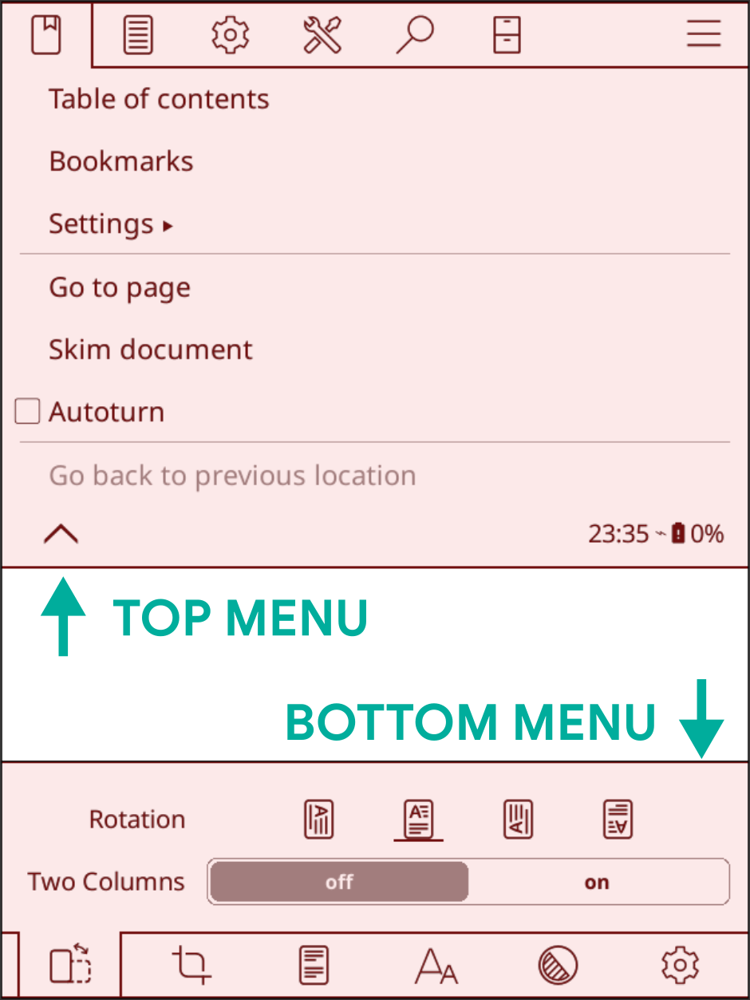
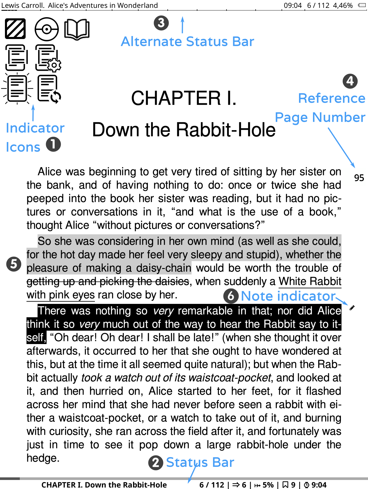
Изображението по-горе показва елементите, които можете да видите на екрана на вашия четец, когато четете книга:
- Пиктограми за състоянието: Тези пиктограми ви информират за определени текущи процеси и състояния. Ще ги видите в горния ляв ъгъл на екрана по време на определени операции. Обикновено са по-малки, но тук ги показваме по-големи за яснота. Следващото заглавие обяснява подробно тези пиктограми: Пиктограми за състоянието
- Лента на състоянието: Това е силно конфигурируема област, където можете да видите различна информация за вашата книга и KOReader. Щракнете тук, за да отидете в раздела: Лента на състоянието
- Алтернативна лента на състоянието: В допълнение към стандартната лента на състоянието, имаме Алтернативна лента на състоянието, която се появява в горната част на страницата, ако я активирате. Щракнете тук за подробности: Лента на състоянието
- Референтни номера на страници: Ако издателят е включил номерацията на страниците от хартиеното издание на книгата, ще я видите по този начин. Щракнете тук за повече информация: Номериране на страници и референтни номера на страници
- Видове подчертаване: Тук можете да видите различните видове подчертаване. Също така можете да правите цветни подчертавания, ако устройството ви има подходящ екран. Щракнете тук, за да отидете в раздела: Отметки, Подчертавания и Бележки
- Отбелязване на бележки: Пиктограмата за отбелязване на бележки се появява, когато добавите бележка към подчертаване. Имаме различни видове маркери за бележки. Щракнете тук за повече информация: Отметки, Подчертавания и Бележки
KOReader разполага с индикатори, които да ви информират за определени текущи процеси и състояния, както можете да видите на изображението по-горе. Ще ги видите в горния ляв ъгъл на екрана по време на определени операции.
   
|
Икони за частично изчертаване Тази група икони принадлежи на процедурата за частично изчертаване и вероятно ще ги виждате по-често от останалите. Виждате тези икони, когато променяте настройките в долното меню. Тази функция ви позволява да преглеждате промените в облика на текста много по-бързо, тъй като изчертава (рендва) само текущата глава, а не цялата книга. Също така завъртането на ориентацията на екрана вече е много по-бързо благодарение на тази функция. Тази функция е АКТИВИРАНА по подразбиране. Ако е необходимо, тя може да бъде деактивирана за отделна книга (с едно докосване) или глобално (с продължително докосване) от: ГОРНО МЕНЮ /
/ Документ / Частично изчертаванеСлед потвърждаване на вашите промени цялата книга трябва да бъде изчертана отново, така че това е многостепенна процедура. Тези икони показват етапа на изчертаване, както е обяснено по-долу: |
|
На този етап документът е частично изчертан. Броят на страниците, информацията в долната част и много други неща са неточни. Можете да видите как изглеждат новите настройки и да коригирате допълнително. Можете също да обръщате страниците и да преминавате по връзки в това състояние. |
|
Пълното изчертаване се извършва във фона. Все още можете да обръщате страници, да преминавате по връзки и да променяте настройките. |
|
Пълното изчертаване е готово, но все още не е приложено, защото KOReader чака да сте в покой, за да презареди останалата част от книгата (покой = липса на взаимодействие с устройството). Все още можете да обръщате страници, да преминавате по връзки и да променяте настройките. |
|
|
Били сте в покой известно време, така че KOReader сега презарежда целия документ. На тази стъпка KOReader е блокиран, за да се предотврати взаимодействие. |
 |
Икона за подчертаване Тази икона се появява, когато сте в Режим на избиране и подчертаване. KOReader разполага с допълнителен режим, който ви позволява да започнете да подчертавате и да прелиствате страниците, за да създавате дълги подчертавания, обхващащи множество страници. Можете да прочетете за това в раздела ОТМЕТКИ, ПОДЧЕРТАВАНИЯ И БЕЛЕЖКИ на това ръководство. Когато започнете подчертаване в този режим, тази икона се показва в ъгъла, за да ви напомня, че все още сте в режим на подчертаване. Тя изчезва, когато завършите подчертаването си чрез избиране на края на пасажа или когато отмените подчертаването (чрез повторно докосване в началото на вашето подчертаване или върху тази икона за подчертаване). |
 |
Икона покебол Тази икона се появява, когато натиснете продължително върху дума (нарочно или случайно). KOReader има нормално меню при продължително натискане. И допълнително меню при много продължително натискане, когато задържите пръста си повече от 3 секунди. Тази икона означава, че сте активирали това меню за много продължително натискане. |
 |
Икона за режим на прелистване Тази икона се появява, когато докоснете горния ляв ъгъл, ако:
Този режим временно показва цялата страница без изрязване, мащабирана така, че да пасне на вашия екран. Можете да обръщате страниците в този режим. За да излезете от този режим, докоснете тази икона. |
Типовете документи като epub, mobi, html естествено нямат фиксирани номера на страниците, защото те са прекомпозируеми документи. Което означава, че тези документи могат да бъдат регулирани според размера на екрана и ориентацията на устройството (за разлика от файловете pdfs или djvu например, които имат фиксиран размер на страницата).
Ако увеличите размера на шрифта на прекомпозируем документ, броят на страниците също ще се увеличи, защото сега по-малко текст ще се побере на една страница. Това понякога създава проблем, защото подчертаване, което сте направили на страница 38, може да бъде на страница 42 след корекцията на шрифта.
KOReader поддържа функцията Референтни номера на страници, която позволява на издателите да вграждат номерата на страниците от отпечатаните книги директно в версията на електронната книга. Когато активирате тази функция, KOReader не изчислява сам номерата на страниците. Вместо това ви показва вградените номера на страници от издателя. Това означава, че номерът на страницата, който виждате във вашата лента на състоянието, съвпада с печатната версия на книгата.
Предимства на референтните номера на страниците:
- Референтните номера на страниците позволяват прецизно цитиране, тъй като съвпадат с номерацията на хартиеното издание.
- Референтните номера на страниците могат да помогнат при навигацията, особено за читатели, които са запознати с печатната версия на книгата. Това може да ви помогне да намерите по-лесно конкретни пасажи или цитати в дигиталната версия.
- Тъй като дигиталните книги могат да се четат на различни устройства и платформи, всяка със собствен размер на шрифта и настройки на дисплея, показваните номера на страници могат да варират значително. Референтните номера осигуряват постоянна отправна точка, когато четете една и съща книга едновременно на различни устройства (например на електронен четец и телефон).
Можете да активирате тази функция от:
 / Референтни страници / Използване на референтни номера на страници
/ Референтни страници / Използване на референтни номера на странициАко поставите отметка и на опцията Показване на етикетите на референтните страници в полето от същото меню, тези номера на страници ще бъдат показани до текста с малък шрифт.
Моля, обърнете внимание, че това меню се появява само ако във вашата книга има вградени Референтни номера на страници.
KOReader има две ленти на състоянието – Долна лента на състоянието, която е активирана по подразбиране. Имаме и Алтернативна лента на състоянието, която се появява в горната част на страницата, ако я активирате. Тази Алтернативна лента на състоянието е налична само в прекомпозируеми документи (epub, html, docx, rtf, txt…).
Долната лента на състоянието е по-новата, която се поддържа активно. Алтернативната лента на състоянието е остатък от по-ранни версии на KOReader, така че не добавяме нови функции към нея. Но все пак можете да активирате тази Алтернативна лента на състоянието, ако я намирате за полезна. Можете да я активирате от:
/ Алтернативна лента на състояниетоМожете да конфигурирате Алтернативната лента на състоянието от това меню:
/ Лента на състоянието / Алтернативна лента на състояниетоИнструкциите в останалата част от този раздел са за Долната лента на състоянието.
Можете да конфигурирате долната лента на състоянието от това меню. Чувствайте се свободни да разгледате подменюто НАСТРОЙКИ, за да персонализирате лентата на състоянието си както желаете.
/ Лента на състояниетоИма много елементи, които можете да покажете в лентата на състоянието. Но по подразбиране се показва само един наведнъж и трябва да докоснете лентата на състоянието, за да превключвате между тях. Ако искате да покажете всички елементи наведнъж, активирайте го оттук:
/ Лента на състоянието / Настройка на елементите / Показване на всички избрани елементиАко сте активирали опцията по-горе, не можете да скриете лентата на състоянието, като я докоснете. Ако искате да я скриете, трябва да зададете жест тук за превключване на лентата на състоянието:
Сортиране на елементите в лентата на състоянието:
/ Лента на състоянието / Настройка на елементите / Подреждане на лентата на състояниетоИма специален елемент за лентата на състоянието, наречен Потребителски текст. Този елемент може да показва избран от вас текст в лентата на състоянието. Можете също да използвате тази функция, за да създадете разделител между елементите в лентата на състоянието, както можете да видите в примера по-долу:

- Първо активирайте тази опция с кратко натискане върху нея от това меню
ГОРНО МЕНЮ / / Лента на състоянието / Потребителски текст: ‘KOReader’
- След това я натиснете продължително отново, за да отворите настройките ѝ. Въведете символ "интервал" в първото поле, а във второто – броя на повторенията му. Това ще определи колко широк да бъде вашият разделител.
Можете да изберете друг символ като разделител. Можете също да премествате този елемент като другите елементи на лентата на състоянието, за да промените реда му и да коригирате групите си.
Лентата за напредъка в лентата на състоянието обикновено показва напредъка ви за цялата книга. Но тя може да показва напредъка ви и за текущата глава. Това е полезно например при книги, съставени от множество кратки глави. В този случай може да е трудно да видите напредъка си в текущата глава, така че лентата на състоянието за глава може да бъде по-информативна тук. Можете да активирате функцията от това меню:
/ Лента на състоянието / Лента за напредъка / Вместо това се показва лентата за напредъка в главатаСъщо така можете да зададете жест за превключване между нормалната лента за напредъка и тази за глава. Можете да намерите това действие под:
Тук ще дадем само преглед на елементите в структурата на горното меню, за да ви запознаем с менюто. Подробна информация е налична в съответните раздели на това ръководство.

- НАВИГАЦИЯ: Това меню съдържа елементи, които ви позволяват да навигирате в книгата, която четете в момента. Съдържание, отметки, карта на книгата...
- ВЪНШЕН ВИД: Това меню съдържа елементи, които ви позволяват да промените външния вид на вашата книга. Настройки на шрифта, промени в стиловете...
- НАСТРОЙКИ: Това меню съдържа настройки за KOReader и вашето устройство. E-ink, осветление, настройки на жестове...
- ИНСТРУМЕНТИ: Това меню съдържа плъгини, които могат да разширят функционалността на KOReader.
 ТЪРСЕНЕ: Това меню съдържа елементи, свързани с търсене и справки. Търсене на текст, речник, превод, Уикипедия...
ТЪРСЕНЕ: Това меню съдържа елементи, свързани с търсене и справки. Търсене на текст, речник, превод, Уикипедия...- УПРАВЛЕНИЕ НА ФАЙЛОВЕ: Този бутон отваря управлението на файлове, което е интерфейсът за управление на вашата библиотека.
 ГЛАВНО МЕНЮ: Това меню съдържа инструменти за достъп до вашите книги като хронология, избрани, списъци. Също така в това меню се намират елементите информация за книгата, актуализация и изход.
ГЛАВНО МЕНЮ: Това меню съдържа инструменти за достъп до вашите книги като хронология, избрани, списъци. Също така в това меню се намират елементите информация за книгата, актуализация и изход.
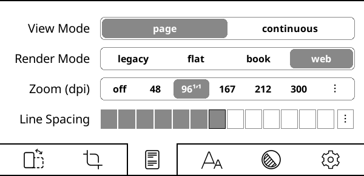
Режим на изглед: Ако преминете към непрекъснат режим, можете да превъртате документа като уеб страница. Този режим е по-подходящ за екрани, които не са E-ink (LCD, OLED). В непрекъснат режим губите горните и долните полета, така че текстът може да бъде отрязан на първия и последния ред на екрана. За да разрешите този проблем, можете да активирате Застъпване на страници:
/ Застъпване на странициРежим на изчертаване: Тази опция определя как вашият документ се изчертава от KOReader. По подразбиране е УЕБ и обикновено не е нужно да променяте тази настройка. Когато книга (или запазена уеб страница) е много сложна (със зададени ширини или полета, отрицателни полета, плаващи елементи и др.) и оформлението изглежда зле или излиза извън екрана, можете да опитате други режими на изчертаване.
Мащаб (dpi): Тази настройка може да се разглежда като общ коефициент на мащабиране за документа (с изключение на размера на шрифта). При 96 dpi (което е настройката по подразбиране), изображенията в документа се изчертават в техните оригинални размери. Основно ще използвате тази настройка, ако искате да направите изображенията по-големи, без да увеличавате текста.
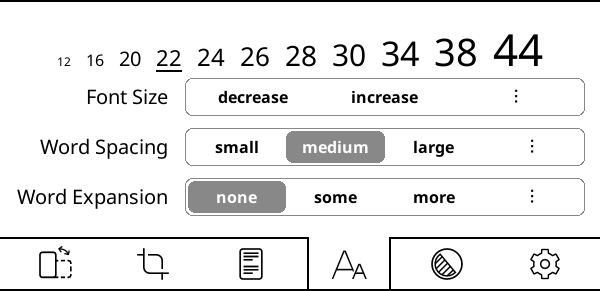
Интервал между думи и Разтягане на думите са свързани настройки и определят как ще изглежда текстът ви, когато е двустранно подравнен (justified). Когато подравнявате текста двустранно, между думите се добавя разстояние, така че двата края на всеки ред да се изравнят с двете полета. Тъй като броят на думите в редовете не винаги е равен, при двустранно подравняване текстът трябва да бъде свит или разтегнат, за да запълни реда.
Интервал между думи: Колко могат да бъдат свити символите за интервал в един ред текст, за да се поберат повече думи. Тази настройка не засяга самите думи, а променя само разстоянието между тях.
Разтягане на думи: Ако имате твърде много празно пространство в един ред, каква част от него може да бъде разпределена в думите чрез тяхното разтягане. Тази настройка засяга външния вид на думите. Ако не искате думите ви да се разтягат, задайте това на без.
Можете да експериментирате с различни настройки, докато текстът започне да изглежда приятно за вас, след което да ги зададете като стандартни чрез съответните им диалози.
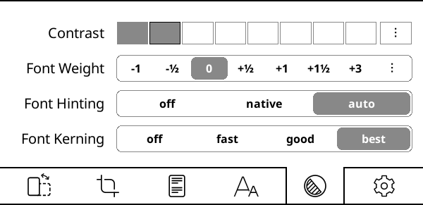
Контраст и Тегло на шрифта са две опции, които можете да използвате, за да направите текста си по-удебелен (или по-тънък). Можете да постигнете същия външен вид с която и да е от тези опции, но те използват различни методи за постигането му. Разбира се, можете да използвате и двете едновременно.
Разликите между тях могат да бъдат обобщени така:
+ Не променя ширината на шрифта, дължината на книгата остава същата
+ Не се налага повторно изчертаване на документа, по-бързо е
- Може да изглежда зле на LCD или екрани с ниско DPI (разделителна способност)
+ Ще използва правилни шрифтове с различна плътност, ако имате такива инсталирани
+ Изглежда по-добре на LCD или екрани с ниско DPI
- Налага се повторно изчертаване на шрифтовете, по-бавно е
Хинтиноване на шрифт настройва текста ви за максимална четимост според пикселната мрежа на вашия екран. вградено използва вътрешните инструкции за хинтинг на самия шрифт, авто използва алгоритъма за хинтинг на FreeType. авто е по-безопасен избор, тъй като файловете с шрифтове, които сте инсталирали, може да имат проблемни инструкции за хинтинг. Също така авто се справя по-добре с CJK (китайски, японски, корейски) текст. Можете да опитате различни настройки, за да видите коя изглежда по-добре на вашето устройство.
Кърнинг на шрифта настройва разстоянието между буквите, за да се постигне визуално приятен резултат. По подразбиране е опцията отлично, която може да е по-бавна при отваряне на файлове (в зависимост от вашето устройство), но има по-добра поддръжка за лигатури (вижте снимката по-долу за пример), свързани арабски символи и някои други писмености. Ако устройството ви е бавно, можете да опитате добро, което е по-бързо и все пак може да изглежда правилно със западен текст на латиница.
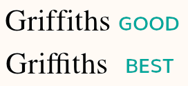
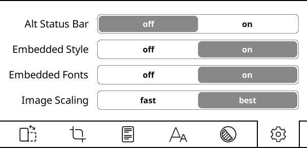
Алтернативната лента на състоянието активира алтернативна лента на състоянието, която е налична само в прекомпозируеми документи (EPUB, HTML, DOCX, RTF, TXT…). След като я активирате тук, можете да конфигурирате алтернативната лента на състоянието чрез:
/ Лента на състоянието / Алтернативна лента на състояниетоВградени стилове и вградени шрифтове определят дали стиловете и шрифтовете на издателя, вградени в документа, ще бъдат използвани (или игнорирани) за изчертаване на документа. Това са общи превключватели за включване/изключване. Можете да постигнете по-фини промени за вашия документ чрез:
/ Промени в стиловетеМащабиране на изображения определя как се изчертават изображенията във вашия документ. отлично изглежда по-приятно, но е по-бавно.
Потребителският интерфейс и опциите на KOReader могат да се променят в зависимост от типа файл, който отваряте. Има две основни категории документи:
- Документи с фиксирано оформление (pdf, djvu, файлове с изображения...)
- Документи с динамично разместване на страници (epub, html, docx, rtf, txt…).
KOReader има много функции, така че системата му от менюта отразява тази сложност. Имаме функция за Търсене в менюто за бързо намиране на елементи от менюто. Ако помните името на даден елемент от менюто, но не помните къде се намира, можете да използвате тази функция:
/ Помощ / Търсене в менютоСъщо така можете да зададете тази функция към жест или да я добавите към вашето Бързо меню за по-бърз достъп.
Ако в долното меню докоснете продължително името на дадена опция, можете да видите нейното обяснение. |
|
Можете да промените езика на интерфейса чрез: ГОРНО МЕНЮ /
/ Език |
|
Ако искате да промените размера на потребителския интерфейс, за това има настройка DPI: ГОРНО МЕНЮ /
/ Екран / Разделителна способност на екранаМожете да изберете стойност от менюто или да изберете DPI по избор, за да въведете стойност за фина настройка: По-висок DPI = По-голям интерфейс. Обърнете внимание, че в долната лента има и настройка Мащаб (dpi). Тя се отнася само за документите. Можете да намерите обяснението в следващия раздел. |
Ако докоснете продължително опция или елемент от менюто (плътност на шрифта, междуредие и т.н.), можете да зададете стойността ѝ като СТОЙНОСТ ПО ПОДРАЗБИРАНЕ. Новата стойност ще се прилага само за книги, отворени оттук нататък. Предишно отворените книги ще запазят своите настройки. Можете да разпознаете стойностите по подразбиране като звезда (★) в менюто или като черна рамка около индикаторите, както се вижда по-долу: 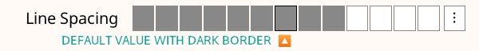 |
Можете да затваряте диалогови прозорци на цял екран (Хронология, Съдържание, Статистика на четенето и др.) чрез плъзгане надолу. (С изключение на прозореца Отметки. Можете да използвате всякакъв жест с множество плъзгания, за да го затворите) |
Можете да направите снимка на екрана, като направите дълго диагонално плъзгане с пръст. Снимка на екрана се прави и чрез едновременно докосване на два противоположни диагонални ъгъла . Можете да използвате този втори жест например, когато разглеждате изображение. Освен това, ако устройството ви има клавиатура, можете да направите снимка на екрана с клавишната комбинация Alt + Shift + G. |
Ако искате да отворите случайна страница от книга, имаме действие Отиване на случайна страница, което можете да зададете към всеки жест. То се намира в категория Четец на Управление на жестове. |
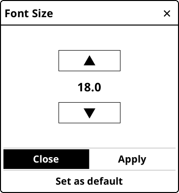 В диалогови прозорци, съдържащи бутони със стрелки за корекция като този по-горе, можете да докоснете и задържите бутоните със стрелки, за да променяте стойността с по-големи стъпки. Можете да затворите този тип диалог (който не е на цял екран), като докоснете извън неговия прозорец. Можете да преместите този тип диалог, като задържите заглавието на прозореца му и го плъзнете. Можете да направите този тип диалог полупрозрачен, като докоснете и задържите заглавието на прозореца (когато искате да видите текста под него, докато коригирате дадена стойност). |
Създаване на нови папки - В ситуации, когато трябва да изберете местоположение (облачно хранилище, плъгин за преместване в архив, плъгин за експортиране), KOReader ви представя екран, който изглежда като нашето Управление на файлове. Ако искате да създадете нова папка, докато избирате:
|
KOReader поддържа справки в речник в EPUB и сканирани PDF/DJVU документи. За да видите определението в речника или превода, просто докоснете и задръжте думата. Продължителното натискане върху дума извежда диалогов прозорец, където можете също да търсите избраното в документа за повече срещания или да го потърсите в Уикипедия. |
Ако искате да проверите текущата дата, можете да докоснете часовника в ГОРНОТО МЕНЮ. |
KOReader има три вида превъртане с докосване. Можете да получите достъп до това от:
/ Докосване и жестове / Превъртане- Класическо превъртане: Този режим работи точно като превъртането на вашия телефон/таблет.
- Турбо превъртане: Този режим ви позволява да превъртате по-бързо от класическо превъртане. Също така можете да превъртате няколко страници, без да вдигате пръста си. Количеството на превъртане е пропорционално на разстоянието, на което премествате пръста си след като сте започнали превъртането.
- Превъртане при отпускане: Този вид превъртане е по-подходящ за E-ink екрани. За разлика от другите видове превъртане, този режим не опреснява страницата непрекъснато, докато плъзгате пръста си. Работи като класическо превъртане, но междинните стъпки не се показват. Така че, когато превъртите с пръст и след това пуснете, страницата прескача до тази позиция. Това е особено полезно за препозициониране и регулиране на изгледа, ако книгата ви съдържа снимки или таблици и искате да ги видите изцяло.
Тази полезна функция работи като бутона Назад във вашия браузър. Когато прескочите до друга част на книгата с помощта на Инструмент за бърз преглед, Списък с отметки, Карта на книгата и т.н., KOReader запомня предишното ви местоположение. Това е полезно например, ако последвате вътрешна връзка или препратка. С едно докосване можете да се върнете там, откъдето сте дошли. Можете да получите достъп до тази функция от:
/ Връщане към предишно местоположениеСъщо така можете да отидете и напред, от същото меню. Тази функция е зададена на жест с множество плъзгания . Можете да зададете това към друг жест, ако искате (като докосване на ъгъл) или да го добавите към вашето Бързо меню.
KOReader обикновено извършва пълно опресняване на страници, съдържащи изображения (което можете да забележите като черно премигване). Причината е да се отърве от остатъците и остатъчните изображения (ghosting) от предишната страница. Но това може да не е необходимо в зависимост от вашето устройство и лични предпочитания. Можете да деактивирате това поведение за автоматично опресняване тук:
/ Екран / E-ink настройки / Честота на пълно опресняване / Винаги мигане на страници с изображенияСъщо така можете да деактивирате черното премигване на потребителския интерфейс оттук, ако ви притеснява:
/ Екран / E-ink настройкиИма различни начини за придвижване из вашия документ в KOReader, всеки със своите предимства. Можете да използвате:
- Инструмент за бърз преглед
- Карта на книгата
- Преглед на страници
Инструмент за бърз преглед е много функционален инструмент за навигация. Можете да го използвате, за да:
- Прескачате до която и да е част от книгата ви, като директно докоснете лентата за напредък или въведете номера на страницата
- Навигирате между главите
- Навигирате между отметките
Как да отворите Инструмента за бърз преглед:
- С продължително докосване в областта на Лентата на състоянието в долната част на екрана
- От това меню: ГОРНО МЕНЮ / / Бърз преглед на документа
- Можете да му зададете жест
- Можете да го добавите към вашето Бързо меню
Първо нека хвърлим бърз поглед на диаграмата по-долу. Ще видите, че имаме два различни Инструмента за бърз преглед. Те имат едни и същи функции, само размерът им е различен:
- ПЪЛНОРАЗМЕРЕН ИНСТРУМЕНТ ЗА БЪРЗ ПРЕГЛЕД: Това е инструментът за бърз преглед по подразбиране, който ще видите, когато инсталирате KOReader. Той е по-голям от компактния инструмент за бърз преглед, така че бутоните са по-удобни за натискане. Този инструмент се показва в центъра на екрана.
- КОМПАКТЕН ИНСТРУМЕНТ ЗА БЪРЗ ПРЕГЛЕД: Това е по-тънката версия на инструмента за бърз преглед по подразбиране. Той може да бъде по-удобен, когато например правите подчертавания. Тъй като е по-малък и се показва в горната или долната част на екрана, той не закрива страницата толкова много, колкото инструмента по подразбиране.
Ако искате да използвате компактния инструмент за бърз преглед, можете да направите това, като изберете Горе или Долу от това меню:
/ Придвижване / Място на диалога за бърз преглед:СЪВЕТ И двата инструмента за бърз преглед са подвижни. Можете да ги преместите, като натиснете в празна област на инструмента и плъзнете. Също така можете да направите тези диалогови прозорци полупрозрачни чрез продължително натискане в празна област на инструмента. Но полупрозрачността се задейства само в първоначалната му позиция. Веднъж преместен, продължителното натискане го връща в първоначалната позиция.
Сега обратно към диаграмата. Можете да видите, че на някои бутони има две описания в различни цветове: синьо и оранжево. Това означава, че този бутон има две функции: действие при нормално натискане и действие при продължително натискане. Ако натиснете нормално, ще се изпълни СИНЯТА функция. Ако натиснете по-продължително, ще се изпълни ОРАНЖЕВАТА функция.
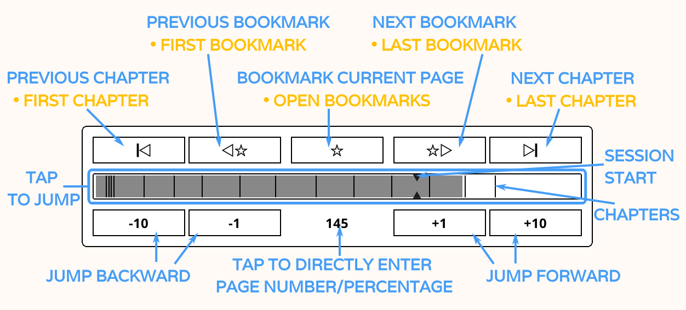
Обяснения на номерираните елементи (действието при продължително натискане е в получер шрифт):
- Прескачане към началото на предишната глава / Прескачане към първата страница на книгата
- Прескачане към предишната отметка / Прескачане към първата отметка в книгата
- Отмятане на текущата страница / Отваряне на диалога с отметки
- Прескачане към следващата отметка / Прескачане към последната отметка в книгата
- Прескачане към началото на следващата глава / Прескачане към последната страница на книгата
- Прескачане назад (-) или напред (+) с толкова на брой страници
- Това число показва номера на текущата страница. Ако го докоснете, се отваря диалогов прозорец, който ви позволява да въведете номер на страница или процент, за да прескочите директно. Ако натиснете продължително, то ви връща на страницата, където сте отворили инструмента за бърз преглед. Това е полезно например, ако искате бързо да проверите друга част от книгата и да се върнете към четенето си там, където сте спрели.
- Това е лентата за напредък. Тънките линии са маркерите на главите, които показват началото на главите. Можете да докоснете тази лента за напредък, за да прескочите към тази част от книгата. Малките стрелки са стрелки за начало на сесията, които отбелязват мястото, откъдето сте започнали да четете тази книга в текущата сесия. Тези стрелки се нулират, когато превключвате между книгите.
- Този бутон в компактния инструмент за бърз преглед работи по същия начин като функцията за продължително натискане на елемента номер 7. Той ви връща на страницата, където сте отворили инструмента за бърз преглед. Това е полезно например, ако искате бързо да проверите друга част от книгата и да се върнете към четенето си там, където сте спрели.
СЪВЕТ Ако искате да отворите случайна страница от книга, имаме действие Отиване на случайна страница, което можете да зададете към всеки жест. То се намира в категория Четец на Управление на жестове.
KOReader може да показва границите на главите от вашите документи върху ИНСТРУМЕНТА ЗА БЪРЗ ПРЕГЛЕД и ЛЕНТАТА ЗА НАПРЕДЪК.
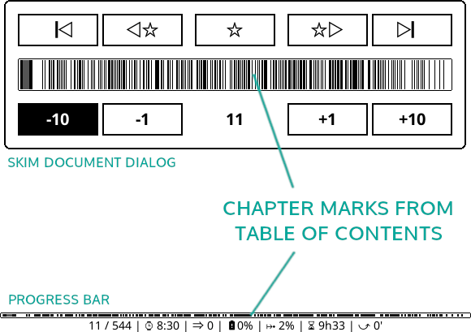
Ако документът ви има твърде много нива на заглавия, лентата с маркери за глави може да изглежда претъпкана, както в примера по-горе. Можете да промените дълбочината на видимите нива на маркерите в Съдържанието чрез:
/ Настройки / Ленти за напредък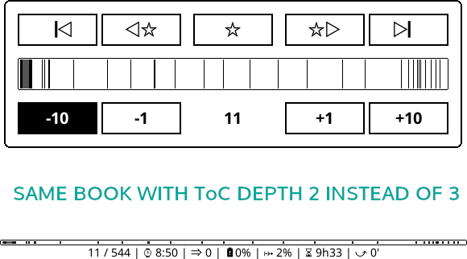
Можете също да използвате това съкратено Съдържание за:
- заглавия на глави (ако е показано в Лентата на състоянието)
- навигация по глави
- приблизителни оценки за оставащото време за четене
Тези опции са в същото меню.
Ако вашият документ няма Съдържание, можете да активирате АЛТЕРНАТИВНО СЪДЪРЖАНИЕ. Когато тази настройка е активирана, KOReader ще изгради Съдържание от заглавията в документа (ако има такива) или от отделните HTML файлове в EPUB. Натиснете продължително върху този елемент от менюто за допълнителна информация:
/ Настройки / Алтернативно съдържаниеМожете да намерите повече информация за инструментите за съдържание, налични в KOReader, в този съответен раздел на ръководството: ИНСТРУМЕНТИ ЗА СЪДЪРЖАНИЕ
Картата на книгата е мощна и уникална функция на KOReader, която може да бъде много полезна за получаване на общ преглед на книгата. Например, ако четете книга нелинейно, като прескачате някои части, за да ги прочетете по-късно, би било трудно да проследите напредъка си. Картата на книгата може да ви покаже кои части от книгата вече сте прочели с един поглед.
Допълнително можете:
- Да видите колко време сте прекарали на всяка страница (ако плъгинът Статистика на четенето е активиран)
- Да проверите кои страници имат отметки, подчертавания и бележки
- Да навигирате директно до която и да е част от книгата, подобно на ИНСТРУМЕНТА ЗА БЪРЗ ПРЕГЛЕД
Можете да получите достъп до Картата на книгата чрез менюто, а също така можете да зададете жест за по-бърз достъп:
/ Карта на книгатаКогато отворите Картата на книгата за първи път, докато четете книга, тя ще бъде в режим Изглед решетка, побирайки всички глави на един екран, за да даде най-добрия първоначален преглед на съдържанието на книгата. За да получите подробна информация за използването ѝ, докоснете иконата за информация в горния ляв ъгъл. Можете да затворите Картата на книгата, като докоснете X в горния десен ъгъл или с произволен жест с множество плъзгания (НАГОРЕ-НАДОЛУ, НАЛЯВО-НАДЯСНО и т.н.).
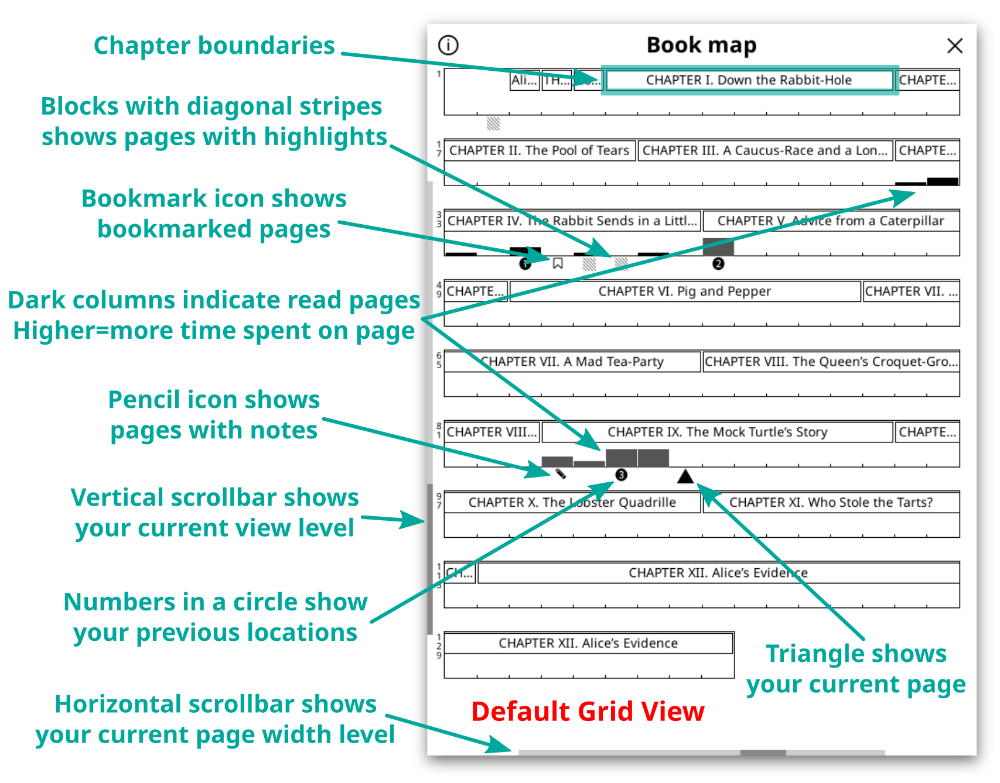
- Граници на главите
- Черните ленти показват прочетените страници. По-високи ленти означават повече време, прекарано на страницата.
- Иконата с отметка показва страниците с отметки, както подсказва името.
- Иконата с раиран квадрат показва страници с подчертавания.
- Иконата с молив показва страници с бележки.
- Числата в кръг показват предишните ви местоположения. Когато изберете Връщане към предишно местоположение от менюто, ще прескочите обратно тук последователно.
- Триъгълникът показва текущата ви страница.
- Вертикалната лента за превъртане показва текущото ви ниво на изглед.
- Вертикалната лента за превъртане показва текущото ниво на ширина на страницата.
Можете да персонализирате Картата на книгата, като промените тези опции:
- Първо опитайте да плъзнете НАЛЯВО и НАДЯСНО по долния ръб на екрана, за да промените ширината на колоните, указващи страниците, и наблюдавайте как това променя мащаба на картата.
- След това опитайте да плъзнете НАГОРЕ и НАДОЛУ по левия ръб на екрана, за да промените дълбочината на заглавията на главите и да превключите към Изглед списък. Вижте примерите по-долу.
В допълнение към Изглед решетка по подразбиране по-горе, тук можете да видите Изглед списък отляво и Изглед решетка без заглавия на глави отдясно. Обърнете внимание на променящата се лява вертикална лента за превъртане между изгледите. Ако искате да превключите обратно към изгледа по подразбиране, можете да натиснете продължително иконата за информация в горния ляв ъгъл.
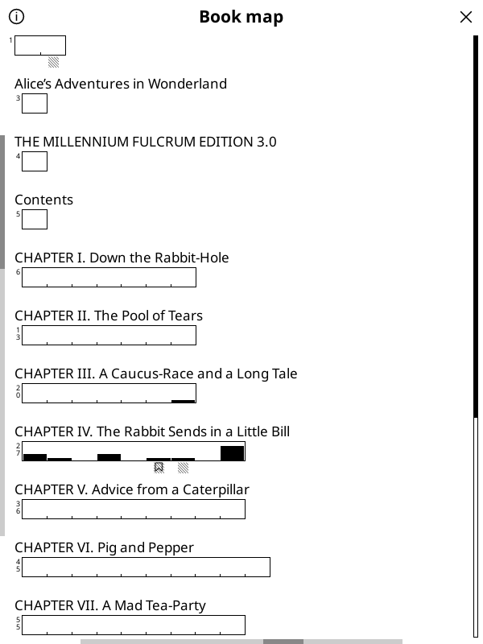
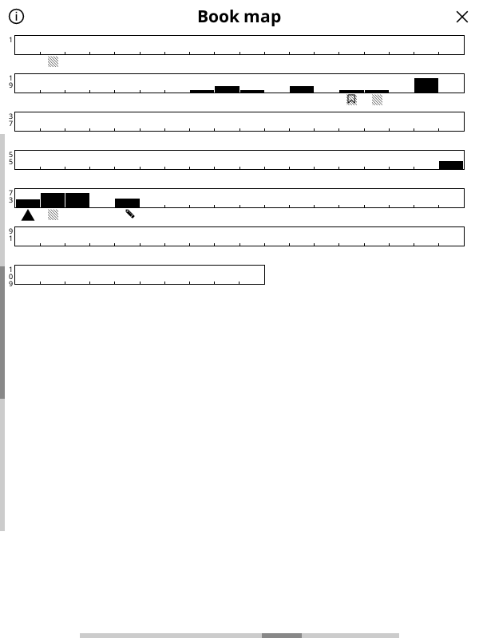
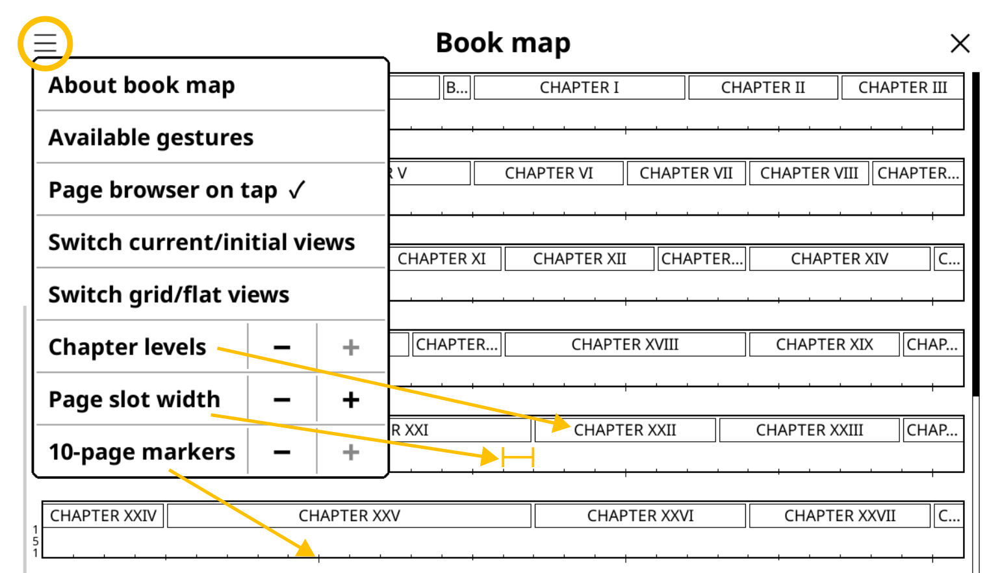
Когато докоснете иконата на менюто на екрана на Картата на книгата, ви се представя менюто по-горе. Опциите на менюто са обяснени по-долу:
- Относно картата на книгата: Кратко обяснение за използването на Картата на книгата и описания на иконите.
- Налични жестове: Жестове, които можете да използвате, за да промените настройките на Картата на книгата, вместо да използвате това меню.
- Преглед на страници с докосване: Ако това е отметнато, когато докоснете страница в Картата на книгата, се отваря Преглед на страници. Това ви показва общ преглед на избраната от вас област. Ако деактивирате тази опция, докосването в Картата на книгата директно ви отвежда до тази страница. Но помнете, че в зависимост от фактори като размера на екрана ви, чувствителността на сензорния екран, точността на докосване и т.н., може да се озовете на съседни страници.
- Превключване текущ/начален изгледи: Ако сте персонализирали изгледа на Картата на книгата, докосването на това превключва между изгледа по подразбиране и вашия персонализиран изглед.
- Превключване изглед решетка/списък: Превключване между изгледи с отделни глави или непрекъснати глави.
- Нива на заглавията: Промяна на дълбочината на нивата на главите/подглавите.
- Ширина на страница: Прави всяко поле на страницата по-широко или по-тясно.
- 10-страници маркери: Докато увеличавате тази стойност, първо ще добави маркери към всяка 10-та страница, след това ще ги направи по-големи и в крайна сметка ще добави маркери към всяка 5-та страница.
Прегледът на страници може да се използва за навигация между страниците като във фотоалбум чрез показване на миниатюри на страниците като мрежа. Можете да отворите Преглед на страници чрез докосване в Картата на книгата или от менюто. Можете също да зададете жест за по-лесен достъп.
/ Преглед на страници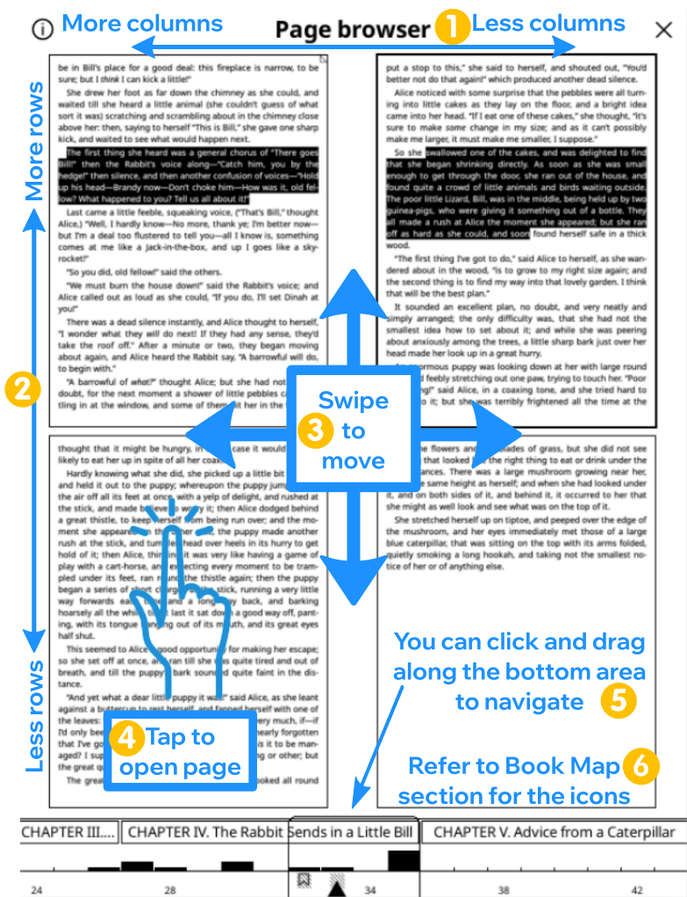
Използването на Преглед на страници е обяснено по-долу. Можете също да докоснете бутона на менюто в горния ляв ъгъл на този екран, за да видите тези обяснения. Продължително натискане на същия бутон добавя/премахва заглавията на главите от долната лента.
- Плъзнете наляво / надясно по този горен ръб, за да увеличите / намалите броя на колоните.
- Плъзнете нагоре / надолу по този ляв ръб, за да увеличите / намалите броя на редовете.
- Плъзнете в областта на страниците, за да преместите разглежданите страници. Нагоре / надолу за превъртане с един ред (2 страници в примера), наляво / надясно за превъртане с един екран (4 страници в примера).
- Докоснете която и да е страница, за да я отворите в изглед за четене.
- В долната област, докосването върху страница фокусира изгледа с миниатюри върху тази страница. Плъзгането наляво / надясно ще прескочи с ширината на една лента.
- Иконите в долната област са същите като използваните в Картата на книгата и са обяснени в този раздел.
Картата на книгата и Прегледът на страници имат Алтернативна тема с различна схема на оцветяване, която можете да активирате от техните менюта. Тази тема използва редуващи се цветове за заглавията на главите, така че границите на главите са по-видими в Картата на книгата и Прегледа на страници. Но използването на сив цвят в тази тема изисква черно премигване, така че може да бъде разсейващо за някои потребители. Можете да опитате и двете и да използвате тази, която ви харесва.
Някои от цифровите книги, на които попаднете, може да нямат правилно съдържание (ToC). В зависимост от подготовката на книгата, можете да срещнете следните проблеми със съдържанието:
- Липса на съдържание в книгата, поради което не можете да навигирате между главите или да виждате оставащото време за четене
- Налично е съдържание, но то не е много полезно поради грешни или липсващи заглавия на главите
KOReader има някои функции, които можете да използвате, когато четете книги с проблемен раздел за съдържание.
Обърнете внимание, че Алтернативно съдържание не е налично за документи с фиксирано оформление като PDF, DJVU и др., защото изисква HTML етикети за създаване на съдържание. Функциите Потребителско съдържание и Потребителски скрити потоци са налични за всички типове файлове.
Първата функция е Алтернативно съдържание, която можете да намерите в:
/ Настройки / Алтернативно съдържаниеАлтернативното съдържание се опитва да създаде съдържание от заглавията във вашата книга (етикети от H1 до H6 в HTML файловете на вашия EPUB). Ако книгата ви не съдържа никакви заглавия, то ще се опита да изгради съдържание от фрагментите на документа (отделните HTML файлове във вашата EPUB книга), което ще сочи към началото на всеки файл.
Можете да изберете кои нива на заглавия да включите (или игнорирате) във вашето съдържание от това меню:
/ Промени в стиловете / Други / Подсказки за алтернативно съдържаниеФункцията за потребителско съдържание ви позволява да създадете свое собствено съдържание от избраните части на вашата книга. Това съдържание може да съдържа само едно ниво, така че не можете да имате подглави, докато използвате тази функция. За да създадете свое собствено съдържание, първо активирайте:
/ Настройки / Потребителско съдържаниеСлед като активирате тази функция, към потребителския интерфейс ще бъдат добавени нови елементи от менюто, които ви позволяват да избирате своите глави. Можете да добавите глава към вашето съдържание от две места:
- От подчертаване: Докато четете книга, изберете текст, сякаш го подчертавате, или натиснете продължително върху дума. В изскачащото меню ще видите елемента Начало на глава от съдържанието оттук. Когато го натиснете, ще видите диалогов прозорец, който ви моли да въведете заглавието на вашата глава. Избраният от вас текст вече ще бъде въведен в диалоговия прозорец. Редактирайте заглавието си, ако е необходимо, и натиснете създаване.
- От Прегледа на страници: Отворете Прегледа на страници чрез
/ Преглед на странициНатиснете продължително върху миниатюрата на страницата, която искате да бъде началото на вашата глава, и изберете елемента Начало на глава от съдържанието оттук от изскачащото меню. Ще видите диалогов прозорец, който ви моли да въведете заглавието на вашата глава.
Когато приключите със създаването на вашето съдържание и не искате да виждате тези допълнителни бутони, можете да ги деактивирате, като премахнете отметката от:
/ Настройки / Потребителски шаблони / Режим на променянеСъздаването на това съдържание няма да промени оригиналното ви съдържание, което идва с вашата книга. Можете да изчистите вашето Потребителско съдържание от същото меню (в случай че искате да създадете ново). И можете да деактивирате тази функция напълно по същия начин, по който сте я активирали, ако искате да се върнете към оригиналното съдържание. Обърнете внимание, че ако деактивирате тази функция след създаване на потребителско съдържание, за да се върнете към оригиналното, вашето потребителско съдържание няма да бъде изтрито. Все още можете да превключвате между оригиналното и вашето потребителско съдържание.
Някои книги или документи може да съдържат дълги бележки под линия или библиографски раздели. Например научна книга от 250 страници, чиито последни 50 страници са Приложения, Индекс и Препратки (Библиография). Обикновено тези страници са включени в изчисленията на лентата за напредък и времето за четене, тъй като са част от книгата. Но като цяло тези раздели съществуват за справка и не се четат изцяло, така че може да искате да ги изключите, за да направите оставащия брой страници и оценките на времето по-точни. Или може би имате книга антология, която съдържа някои истории, които вече сте прочели. Функцията Потребителски скрити потоци на KOReader ви позволява да изключите такъв вид части от вашата книга.
Разгледайте изображението за общ преглед на процеса. Стъпките ще бъдат обяснени след изображението:
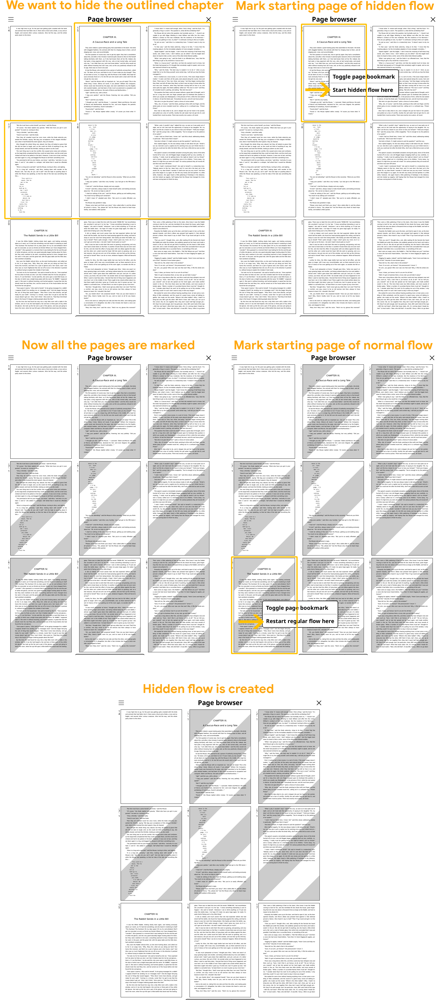
Как да изключите раздел чрез създаване на скрит поток:
- Отидете на първата страница от раздела, който искате да изключите
- Отворете Преглед на страници чрез:
ГОРНО МЕНЮ / / Преглед на страници
- Натиснете продължително върху миниатюрата на страницата, която искате да бъде началото на вашия изключен раздел, и изберете елемента Започване на скрит поток тук от изскачащото меню.
- Ще видите, че страниците, започващи от вашия избор, сега имат сив щрихован фон.
- Сега отидете на последната страница на вашия изключен раздел. Можете да навигирате до там от Преглед на страници или като използвате други начини като Карта на книгата, Инструмент за бърз преглед и т.н.
- След като сте на последната страница на вашия изключен раздел, отворете отново Прегледа на страници (ако вече не сте в него).
- Намерете последната страница на вашия скрит раздел и натиснете продължително върху следващата страница. Изберете Рестартиране на нормалния поток оттук от изскачащото меню. Ще видите, че фонът на останалите страници ще се върне към нормалния си цвят, което показва края на скрития поток и началото на редовния поток.
Работа със скритите раздели:
Когато създадете раздел със скрит поток, както е описано по-горе, поведението на KOReader ще бъде подобно на ситуацията, сякаш сте премахнали раздел от хартиена книга, като сте го изрязали:
- Тези скрити раздели ще бъдат прескачани при прелистване на страниците. Например, да предположим, че сте създали скрит поток за Глава 10. Сега сте на последната страница на Глава 9. Когато обърнете страницата, ще видите Глава 11.
- Номерирането на страниците ще продължи, сякаш тези раздели със скрит поток не съществуват.
- Тези скрити раздели няма да се показват във вашата Лента за напредък (но прочетете обяснението по-долу) и няма да бъдат взети предвид при изчисленията за времето за четене. Но те все пак ще бъдат видими в Инструмента за бърз преглед.
- Следването на директни връзки към страниците, включени в тези раздели със скрит поток, все още ще работи. Също така все още можете да стигнете до тези раздели от Съдържанието, Картата на книгата, Прегледа на страници, Инструмента за бърз преглед.
Както казахме по-горе, вашите скрити потоци ще бъдат изключени от вашата Лента за напредък. Но ако прескочите до някой от вашите скрити раздели, използвайки някой от методите, споменати по-горе, вашата Лента за напредък временно става лента за напредък на този скрит раздел. Можете да си представите това като мащабиране на лентата за напредък в този раздел със скрит поток. Ако излезете от този скрит раздел, като обърнете страницата в края му или използвате други инструменти за навигация, вашата Лента за напредък ще се върне към показване на цялата книга отново (като вашите потребителски скрити потоци отново няма да са видими).
Премахване и изчистване на скрити раздели:
Можете да премахвате отделни раздели със скрит поток от Прегледа на страници по същия начин, по който сте ги създали. Можете също да изчистите всички наведнъж с елемента от менюто:
/ Настройки / Потребителски шаблони / Изчистване на всички отбелязани странициДокато работите по създаването на скрити потоци, маркирайки страници като Започване на скрит поток или Рестартиране на редовен поток, някои от направените преди това може да спрат да имат ефект. Например, в случай че направите Започване на скрит поток няколко страници преди съществуващо Започване на скрит поток, това съществуващо вече не участва. Тези припокриващи се или остарели етикети се запомнят за практически цели. Отново в предишния пример, ако прекратите този втори скрит поток преди съществуващото-но-вече-не-участващо Започване на скрит поток, това неактивно отново ще бъде включено. Можете да изчистите всички тези неактивни маркери, ако пречат на вашите потребителски потоци или след като приключите със създаването на скритите си потоци и сте доволни от резултатите:
/ Настройки / Потребителски шаблони / Изчистване на неактивни отбелязани странициВ някои приложения за четене, когато промените настройка, да речем шрифта, използван за книгите, тя се променя глобално. Което означава, че ако промените шрифта по подразбиране на Verdana, всички книги, които отворите след това, включително тези, които вече четете, ще бъдат показани с този шрифт Verdana.
Подходът на KOReader се различава от това. Ние запазваме настройките за външен вид за всяка отделна книга. Това ви дава гъвкавостта да промените настройките си за текущата книга, без да засягате другите. Например, ако имате фентъзи книги, можете да промените шрифта на такъв със средновековен вид само за тези книги. Или можете да зададете някои книги да се отварят в пейзажна ориентация или в режим на две колони.
За да промените настройка глобално, докоснете и задръжте опция или елемент от менюто (плътност на шрифта, междуредие и т.н.), за да зададете стойността ѝ като подразбираща се. Тази нова стойност ще се прилага само към книги, отворени отсега нататък, както казахме по-горе. Предишно отворените книги ще запазят своите настройки. Можете да идентифицирате стойностите по подразбиране като звезда (★) в менюто или като черна рамка около индикаторите, както се вижда по-долу:
Така че, когато коригирате настройките по подразбиране на документа като междуредие по подразбиране или контраст по подразбиране, тази нова стойност ще се използва само за новите документи, които отваряте след промяната. Вече отворените ви книги няма да се променят.
Но какво ще стане, ако искате и те да се променят? Например, ако промените вашия шрифт по подразбиране, вероятно ще коригирате плътността на шрифта и междуредието към по-подходящи стойности за този нов шрифт. Доволни сте от това как изглежда текстът и сега искате всичките ви книги да изглеждат така. С тази функция не е необходимо да променяте тези стойности ръчно във всичките си отворени книги.
Можете лесно да приложите тези промени към вашите вече отворени книги, като изберете:
/ Нулиране на настройките на документаКогато докоснете тази опция, настройките на текущата ви книга ще се променят към най-новите стойности по подразбиране, които сте задали. Не се притеснявайте, това ще промени само облика на книгата. Вашата позиция на четене, подчертавания, бележки и отметки ще бъдат запазени.
Когато коригирате книга по свой вкус, например чрез промяна на междуредието, контраста на шрифта и т.н., можете да запазите всички промени наведнъж като настройки по подразбиране. След това можете да приложите тези настройки към други книги с опцията Нулиране на настройките на документа, както е обяснено по-горе.
Можете да запазите вашите промени като настройки по подразбиране, като изберете:
/ Запазване на настройките на документа като подразбираниТази мощна функция ви позволява да запазите всички настройки от ДОЛНОТО МЕНЮ + типа на шрифта като профил. Това означава, че можете да имате различни групи от настройки за различни условия или типове книги, които можете да приложите наведнъж, вместо да променяте настройките ръчно всеки път.
Например можете да създадете:
- Профил Две колони с две колони от текст с малък размер, пейзажна ориентация и минимални полета
- Профил Нощно четене с по-голям безсерифен шрифт и по-висок контраст за по-видим текст при слаба светлина
- Профил Деактивирани стилове с деактивиран вграден стил и вградени шрифтове за лошо структурирани книги
След като коригирате настройките си по ваш вкус, можете да създадете профил от тях чрез:
/ Профили / Нов с настройките на текущата книгаСлед като създадете профил с вашите настройки, имате много опции за прилагането му към друга книга:
- Можете да приложите профила от Менюто с профили
- Можете да му зададете жест
- Можете да го покажете във вашето Бързо меню
Щракнете тук, за да отидете в раздела БЪРЗО МЕНЮ И ПРОФИЛИ на ръководството.
KOReader поддържа шрифтове в най-широко използваните формати TrueType (.ttf) и OpenType (.otf). Файловете с шрифтове с тези разширения могат да се копират директно в папката /koreader/fonts/ на вашето устройство. Проверете нашата wiki страница за повече информация.
При стартиране KOReader компилира наличните шрифтове от метаданните/информацията за шрифта и ги класифицира според фамилията и плътността им. Това означава, че можете да добавите различни плътности и варианти на даден шрифт, и KOReader ще се опита да използва най-подходящия. Тъй като взема информацията за фамилията на шрифтовете от метаданните, имената на файловете с шрифтове не са важни, когато ги копирате на устройството си. Инсталираните шрифтове ще бъдат налични след рестартиране на KOReader.
Ето няколко примерни шрифта, които изглеждат добре на E-ink екран. Можете да намерите още такива на уебсайта Google Fonts:
Серифни (Serif):
Безсерифни (Sans Serif):
- Varela Round
- Wix Madefor Text
- Maven Pro (Шрифтът на потребителското ръководство, което четете в момента)
Моношироки (Monospace):
Ако планирате да използвате свой собствен моноширинен шрифт, вероятно вече имате любим такъв, така че тук не предлагаме никакви примери. Но можете да намерите и сравните много моношироки шрифтове на programmingfonts.org
/ Шрифт / Настройки на шрифта / Създаване на документ с мостри на шрифтоветеАко вашата книга включва части с Моношироки шрифтове (като в книгите по програмиране), този текст може да изглежда непропорционален, дори ако технически е със същия размер като останалата част от книгата. Това се дължи на различни метрики на шрифтовете. KOReader има опция, която ви позволява да коригирате относителния размер на моноширокия шрифт, за да поправите тази разлика:
/ Шрифт / Настройки на шрифта / Мащабиране на моношироки шрифтовеТук можете да увеличите или намалите размера на вашия моноширинен шрифт, като коригирате мащаба му като процент от размера по подразбиране.
В базирани на HTML/CSS документи като EPUB, книгите могат да указват използването на шрифтове по фамилия вместо конкретно име на шрифт. Тези фамилии могат да бъдат Серифни (Serif), Безсерифни (Sans-Serif), Моношироки (Monospace), Ръкописни (Cursive), Декоративен (Fantasy), Емоджи (Emoji), Фанг Сонг и Математически (Math). Например в дадена книга нормалният текст може да бъде показан с Безсерифен шрифт, докато диалозите се показват със Серифен шрифт. KOReader обикновено използва шрифта ви по подразбиране за всички тези фамилии, с изключение на Моношироките и Математическите (което се определя от стила на текстовите възли, например 'font-family: serif'). Ако искате тези фамилии да изглеждат отчетливо различни, можете да зададете конкретни шрифтове за тях тук:
/ Шрифт / Семейство шрифтовеЗа да промените фамилията на шрифт за текущата книга, просто докоснете желаното име на шрифт. Ако искате да зададете това за всичките си книги, докоснете продължително, за да го зададете като подразбиращо се (★). Ако дадена книга злоупотребява с тази функция за фамилия на шрифтовете до степен, в която вашият шрифт по подразбиране почти не се използва, можете да деактивирате тази фамилия за тази книга, като премахнете отметката на асоциацията.
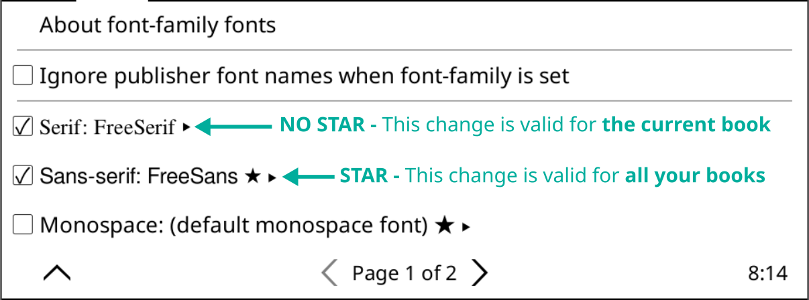
Ако често превключвате между шрифтове (т.е. моноширинен за книги по програмиране и серифен за романи), има начин, който прави това по-лесно, отколкото да влизате в менюто всеки път. Можете да създадете профили за вашите шрифтове и всички свързани с шрифта настройки като междуредие, контраст, удебеляване и т.н. и да добавите тези профили към Бързо меню. Така с един жест можете да отворите менюто за избор на шрифт и да промените шрифта, както е показано на изображението по-долу:
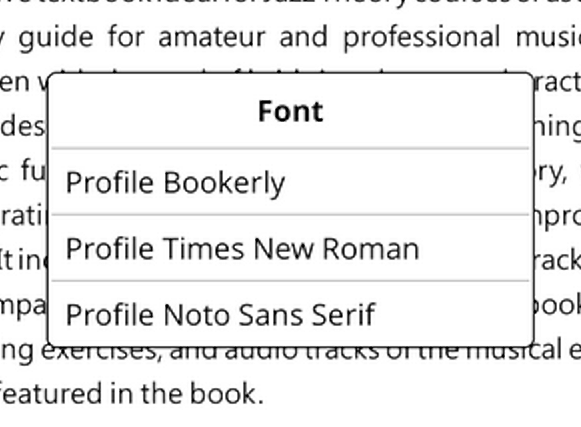
Проверете раздела БЪРЗО МЕНЮ И ПРОФИЛИ в това ръководство, за да научите как да направите това.
!!! ЗА НАПРЕДНАЛИ
Функцията за промени в стиловете в KOReader ви позволява да променяте начина, по който книгата ви се изчертава от KOReader. Тук няма да минаваме през пълен курс по CSS. Просто искаме да ви покажем основите, така че когато видите промяна на стил, поне да имате груба представа какво прави.
Можем да опишем EPUB документ като HTML файл + някои CSS правила. Тези CSS правила определят как различните части от книгата (заглавия, удебелен текст, цитати и др.) ще бъдат показани в приложение за четене. Чрез промени в стиловете можете да промените как ще се изчертава вашата книга, като добавите нови правила и/или презапишете правилата, написани от издателя, които са вградени във вашата книга.
Нека видим това на примерна промяна на стил:
img { width: 10px !important; height: 10px !important }
На прост език това правило казва: „Игнорирай оригиналния им размер и направи всички изображения в тази книга широки 10 пиксела и високи 10 пиксела.“ Така че, ако добавите тази промяна на стил към KOReader, всички изображения във вашата книга ще бъдат показани като миниатюрни.
Сега нека обясним тази промяна елемент по елемент:
- img - Това е CSS селектор, който насочва към всички img (image/изображение) елементи в книгата.
- { width: 10px !important; height: 10px !important; } - Това е блокът за деклариране. Той съдържа стиловете, които ще бъдат приложени към избраните img елементи.
- width: 10px !important; - Тази първа част задава ширината на целевите img елементи на 10 пиксела. Декларацията !important е превключвател за презаписване, който гарантира, че вашата стойност за ширина има приоритет над всяка друга съществуваща декларация за width (ширина), приложена към тези изображения.
- height: 10px !important; - Тази част задава височината на целевите img елементи на 10 пиксела. Отново, декларацията !important е превключвател за презаписване, който гарантира, че вашата стойност за височина има приоритет над всяка друга съществуваща декларация за height (височина), приложена към тези изображения.
В обобщение, това CSS правило е предназначено да зададе фиксирана ширина и височина от 10 пиксела за всички img елементи във вашата книга, игнорирайки техния оригинален стил.
Това са някои полезни промени в стиловете, които можете да използвате директно или да модифицирате според вашите предпочитания. Следващото заглавие обяснява как да ги използвате в KOReader.
- Добавяне на разделителна линия над всяко заглавие в книга:
H1, H2, H3, H4 { border-top: 2px solid black; }
- Добавяне на празно пространство над заглавията:
H1, H2, H3, H4 { margin-top: 2em !important; }
- Или ако книгата има твърде голямо поле над заглавията, премахнете ги:
H1, H2, H3, H4 { margin-top: 0 !important; }
- Добавяне на малка празнина между абзаците, за да направите текста по-четим:
p + p { margin-top: 0.5em !important; margin-bottom: 0.5em !important; }
- Деактивиране на всички изображения в EPUB:
img { display: none !important; }
-
Направете изображенията много малки, вместо да ги деактивирате:
img { width: 10px !important; height: 10px !important }
-
Направете секциите с блокове с код в книгите по компютърни науки по-подредени и по-четими (Тук можете да видите пример):
pre,code { font-size: 0.6em !important; line-height: 1.8em !important; background-color: #eee !important; margin: 1em 0 !important; padding: 1em 0 !important; }
Добре, сега видяхме какво представляват промените в стиловете. Но как можем да ги използваме? В KOReader има три типа промени в стиловете:
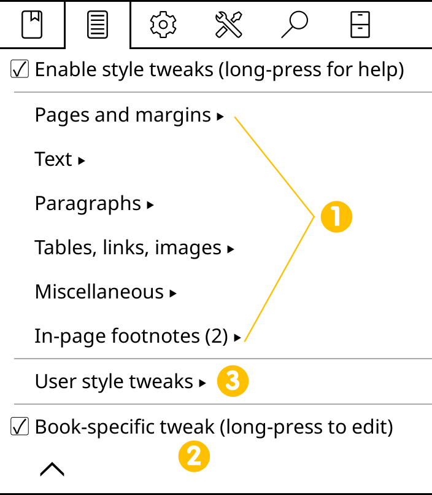
Това заглавие е ново, както и екранната снимка по-горе и по-долу. Имате ли нещо за добавяне?
Тези промени са включени в KOReader. Те са най-лесни за използване, тъй като просто ги активирате от менюто, за да ги използвате. Не е нужно да пишете никакъв CSS код:
/ Промени в стиловетеТе са разделени в много категории. За да приложите промяна само за текущата книга, поставете отметка в квадратчето. Ако искате да получите повече информация за тази промяна или да я активирате за всички книги, натиснете продължително върху името ѝ. Ще се появи диалогов прозорец:
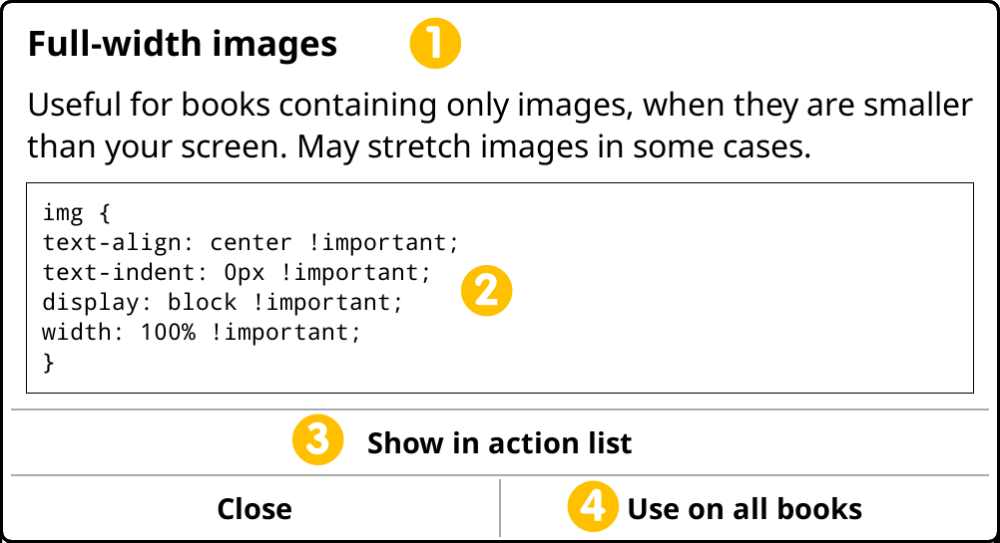
- Тази област показва името и описанието на промяната
- Това поле показва CSS кода на промяната. Можете да докоснете тази област, за да копирате кода в клипборда. След това можете да поставите и модифицирате този код във вашата Специфични за книгата промени, както е обяснено в следващото заглавие.
- Бутонът Показване в списъка с действия ви позволява да превключвате тази промяна с жест или да я добавите към Бързо меню. Вижте заглавието „Как да използваме промените в стиловете ефективно“ по-долу за повече информация.
- Бутонът Прилагане за всички книги активира тази промяна за всички ваши книги. До името ѝ в менюто ще се появи звезда (★), което показва, че тази промяна ще се прилага към всички книги. Можете да деактивирате това със същите стъпки.
Както можете да се досетите от името ѝ, този тип промени са активни само за книгата, в която сте ги създали. Тази функция е по-полезна за тестване на вашите промени или ако трябва да поправите нещо в текущата книга и знаете, че няма да ви трябва за други книги. След като създадете този тип промяна, ако решите, че ще ви трябва и за други книги (т.е. от същия издател), можете да я конвертирате в Потребителски промени на стиловете, което ще обясним по-долу.
За да създадете специфични за книгата промени, използвайте вградения редактор, който можете да намерите тук:
/ Промени в стиловете / Специфични за книгата промениСЪВЕТ В редактора имаме меню CSS на долната лента с инструменти. Това меню съдържа много полезен CSS синтаксис и свойства. Когато отворите това меню, моля, първо прочетете помощта Продължително натискане за информация. Можете също да натиснете продължително върху CSS елементите в това меню, за да видите описание.
Тази група промени се различава от предишните по начина, по който са създадени. Също така, за разлика от предишния тип, те не се ограничават до една-единствена книга. Те могат да се прилагат глобално за всички ваши книги.
Процедурата е приблизително следната, която ще обясним подробно:
- Създаване на вашия потребителски файл с промени
- Прехвърляне на вашето устройство
- Активиране на вашата промяна от менюто
1. Създаване на потребителския файл с промени:
Потребителски промени на стиловете всъщност е нормален текстов файл с разширение .css. Можете да създадете този файл:
- На вашия компютър
- На вашето устройство, ако има текстов редактор (като базирани на Android OS устройства)
- Във вградения текстов редактор на KOReader, който можете да намерите в плъгините
Можете да копирате/поставите примерите, които споменахме по-горе, във вашия файл.
2. Прехвърляне на файла на вашето устройство:
След като създадете файла(овете), съдържащ(и) вашите CSS правила, ги запазете или прехвърлете в папката styletweaks във вашата инсталация на KOReader. Дайте на файловете описателни имена, тъй като името на файла ще бъде заглавието на промяната в системата на менюто на KOReader. Можете да използвате долни черти „_“ в имената на файловете си, те ще се третират като интервали в менюто. Трябва да рестартирате KOReader след прехвърляне на файловете си, за да може да ги зареди.
2. Активиране на промяната:
След рестартирането, отворете книга и отидете в това меню:
/ Промени в стиловете / Потребителски промени в стиловетеСега трябва да видите вашата промяна в списъка с квадратче за отметка до нея. За да приложите промяната само за текущата книга, поставете отметка в квадратчето. Ако искате тази промяна да бъде активирана за всички книги, натиснете продължително върху нейното име. Ще се появи диалогов прозорец. Докоснете елемента от менюто Прилагане за всички книги. До името ѝ в менюто ще се появи звезда (★), което показва, че тази промяна ще се прилага за всички книги. Можете да деактивирате това със същите стъпки. Вижте по-долу за пример:
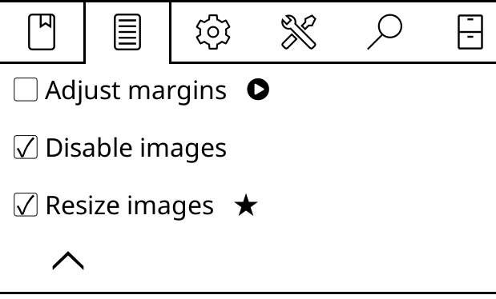
На изображението по-горе имам 3 файла с промени в стиловете в папката styletweaks във моята инсталация на KOReader. Първата е деактивирана, защото квадратчето е празно. Втората е активирана само за тази книга, тъй като квадратчето е маркирано, но няма звезда. Третата е активирана за всички книги (★).
Може да забележите, че до първата промяна има и икона с десен триъгълник. Това означава, че тази промяна може да бъде активирана чрез жестове. Това ще бъде обяснено в следващото заглавие.
Когато създавате своите потребителски промени в стиловете, можете да направите множество файлове с промени, всеки от които модифицира някаква част от книгата, както е в примерното изображение по-горе. Можете да имате един файл за заглавията, други за модифициране на абзаци, връзки и т.н. Тази модулна система ви позволява да активирате промени в зависимост от вашия документ.
Както казахме по-горе, можете да превключвате потребителските промени в стиловете от това местоположение в менюто:
/ Промени в стиловете / Потребителски промени в стиловетеСъщо така имаме по-лесни начини за превключване на вашите промени в стиловете, отколкото да влизате в менюто всеки път.
1. Можете да зададете жест към дадена промяна
За да направите това, първо трябва да добавим нашата Потребителски промени на стиловете към списъка с действия за жестове:
- Отидете в менюто потребителски промени в стиловете и натиснете продължително върху вашата промяна на стила
- В диалоговия прозорец натиснете бутона Показване в списъка с действия
- До вашата промяна на стила в менюто ще се появи икона с десен триъгълник
Можете да го видите в примерното изображение по-горе, до промяната на стила Настройка на полетата (Adjust margins). Сега тази промяна на стила е добавена към списъка с действия. Можете да я намерите в категорията Управление на жестове > Документи с динамично разместване на страници . Ще бъде в края на списъка.
2. Можете да добавите промяна към вашето Бързо меню
За да добавите промяна към вашето Бързо меню, първо тя трябва да бъде добавена към списъка с действия, както е описано в заглавието по-горе. След това можете да следвате инструкциите в раздела Бързо меню на това ръководство.
Можете дори да комбинирате двата метода и да създадете специално Бързо меню за вашите промени в стиловете и след това да го зададете към жест. По този начин с един прост жест можете да получите достъп до всичките си промени в стиловете и да ги активирате според нуждите.
Обърнете внимание, че в някои книги заглавията може да не са в елементи <H1> или <H2>, а в нещо като <p class="tit123">. Можете да намерите кои селектори се използват за част от текста, като проверите изходния код. За да постигнете това, изберете текста около елемента, който ви интересува, и изберете Преглед на HTML кода от диалоговия прозорец. В горния пример вашата промяна на стила би изглеждала така:
P.tit123 { border-top: 2px solid black; }
вместо това:
H1 { border-top: 2px solid black; }
KOReader ви дава опции да взаимодействате с вашата книга така, както бихте го направили с истинска книга. Много настройки на прозореца за отметки могат да бъдат променени тук:
/ Настройки / ОтметкиОТМЕТКИ:
Можете да добавите (и премахнете) отметка чрез натискане на горния десен ъгъл. Това е еквивалентът на прегъване на ъгъла на страница на истинска книга и показва подобна икона, когато го активирате.
ПОДЧЕРТАВАНИЯ:
Можете да подчертавате текст в 4 различни стила. В изображението по-долу можете да видите нормален абзац, последван от различни стилове на подчертаване. Изсветлен (със сив фон), Подчертан, Зачертан и Негатив.

Можете да използвате всички тези стилове едновременно, сякаш са различни цветни маркери за подчертаване. Или можете да решите кой е любимият ви стил и да го зададете по подразбиране от това меню с продължително натискане:
/ Стил на подчертаванеСъщо така, ако имате устройство с цветен екран, можете да правите подчертавания в различни цветове:
/ Подчертавания / Цвят на подчертаването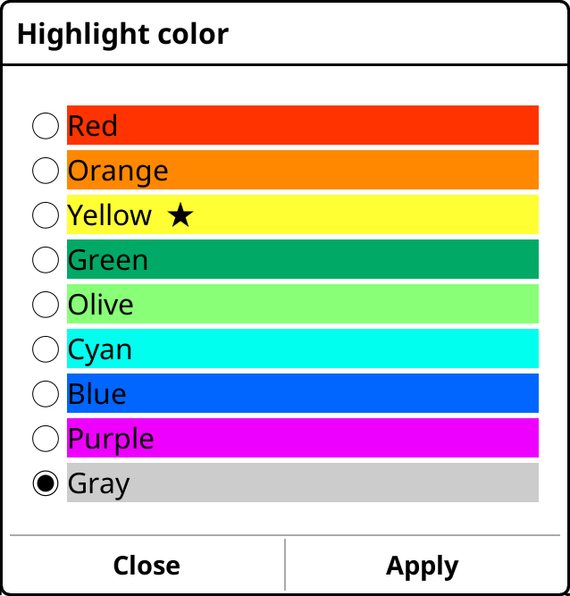
Някои съвети за цветни подчертавания:
- Можете да промените цвета на съществуващо подчертаване, като го докоснете и изберете Цвят от изскачащото меню.
- Можете да комбинирате цветовете с различни стилове на подчертаване като Подчертаване и Зачертаване, за да създадете мощна система за подчертаване. Например можете да използвате стил с червено зачертаване за премахвания или стил с оранжево подчертаване за важни точки и т.н.
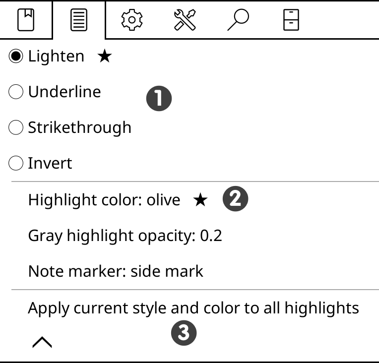
- В менюто за подчертавания можете да натиснете продължително върху тип подчертаване, за да го зададете по подразбиране (★)
- След като изберете цвят, можете да натиснете продължително върху името на цвета в това меню, за да зададете този цвят по подразбиране (★)
- Можете да натиснете опцията Прилагане на текущия стил и цвят към всички подчертавания, за да направите всички подчертавания в текущата книга еднакви. Бъдете внимателни, няма отмяна!
БЕЛЕЖКИ:
Можете също да добавяте бележки към вашите подчертавания. Просто докоснете подчертаване и изберете Бележка от изскачащото меню. Можете също да изберете Стил, който показва кои подчертавания съдържат бележка. Има три стила: Подчертан, Странична линия и Страничен маркер (което е иконата с молив, показана от дясната страна на снимката по-долу):

За да активирате тази функция и да изберете стил на Отбелязване на бележки, отидете на:
/ Стил на подчертаване / Отбелязване на бележкиKOReader има два режима на подчертаване за различни случаи на употреба:
Нормалният режим е подобен на избирането на текст с пръст на телефон/таблет и е по-подходящ, ако вашите подчертавания са по-кратки от една страница.
- Натиснете продължително върху началната дума
- Преместете пръста си до края на пасажа
- Отпуснете пръста
Когато достигнете границите на страницата, KOReader ще обърне страницата вместо вас, за да продължите да подчертавате (само в EPUB/HTML документи). Можете да деактивирате тази функция от:
/ Докосване и жестове / Задържане върху текста / Плъзване ако избраното достигне ъгълРежимът на избиране и подчертаване е по-подходящ за подчертаване на по-дълги пасажи, които пресичат границите на страниците. Може също да работи по-добре, ако имате проблеми с чувствителността на сензорния екран или проблеми с двигателния контрол на ръцете си. Защото в този режим на подчертаване не е нужно да плъзгате пръста си по екрана.
/ Докосване и жестове / Задържане върху текста / Речник при избиране на една думаКак да подчертавате:
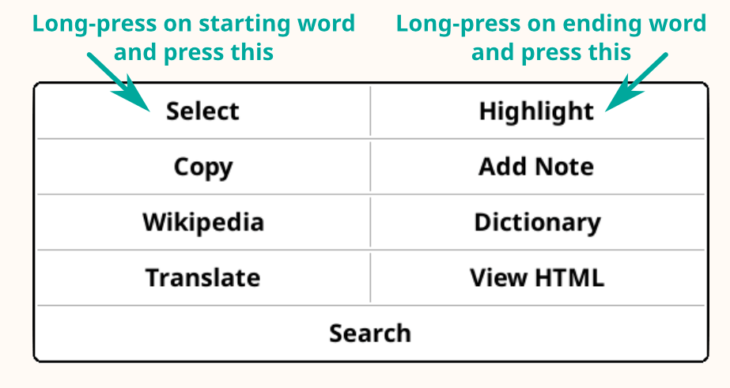
- Натиснете продължително (или плъзнете, ако справката в речник е активирана, както е описано по-горе) върху началната дума и ще се покаже изскачащо меню.
- Докоснете Избиране, сега сте в режим на подчертаване. Когато сте в този режим, ще видите индикатор в горния ляв ъгъл на екрана (който можете да докоснете, за да получите повече информация). Можете да отмените подчертаването, като докоснете отново началото на подчертаването. Можете да обръщате страниците с докосвания/плъзгания и свободно да навигирате в документа (Съдържание, Инструмент за бърз преглед и др.) в този режим.
- Натиснете продължително (или плъзнете, ако справката в речник е активирана, както е описано по-горе) върху крайната дума за вашето подчертаване, менюто ще се покаже отново.
- Докоснете Подчертаване този път, за да завършите подчертаването на пасажа.
Този диалогов прозорец обикновено се отваря в центъра на екрана. Ако искате този диалогов прозорец да се отваря по-близо до местоположението на вашето подчертаване, можете да промените опцията център тук на позиция на жеста (намира се на втората страница на това меню):
/ Докосване и жестове / Задържане върху текста / Място на диалога за подчертаване / Докосване и жестове / Задържане върху текста / Избиране и подчертаване / Стил на подчертаванеКогато подчертавате, KOReader се опитва да включи свързаните препинателни знаци около вашата селекция. Например, ако подчертаете от първата до последната дума на едно изречение, KOReader автоматично ще включи препинателните знаци в двата края на изречението към вашето подчертаване.
Но ако започнете да подчертавате от средата на изречението, точката в края няма да бъде включена, защото KOReader предполага, че искате да направите частично подчертаване. Така че, ако искате препинателните знаци да бъдат добавени към вашето подчертаване, уверете се, че сте избрали цялото изречение. Също така можете да добавите тези знаци по-късно чрез продължително натискане на бутоните за Редактиране на подчертаването.
Когато докоснете вече подчертан текст (без бележка), ще видите това изскачащо меню. Елементите Изтриване и Добавяне на бележка са ясни. Елементите от менюто на долния ред се използват за разширяване или свиване на подчертаването.
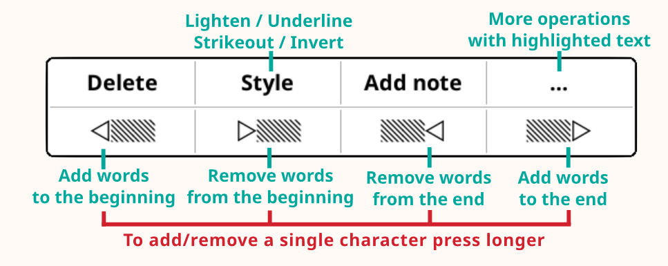
Когато докоснете вече подчертан текст с добавена бележка, ще видите това изскачащо меню. Докоснете Редактиране на подчертаването, за да отворите менюто по-горе, където можете да редактирате както подчертаването, така и съдържащата се бележка:
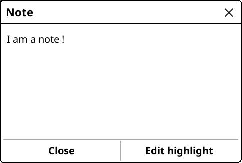
На страницата Отметки можете да филтрирате изгледа, за да виждате само един тип отметки, като натиснете иконата на менюто ( ). Можете също да филтрирате по стил на подчертаване:
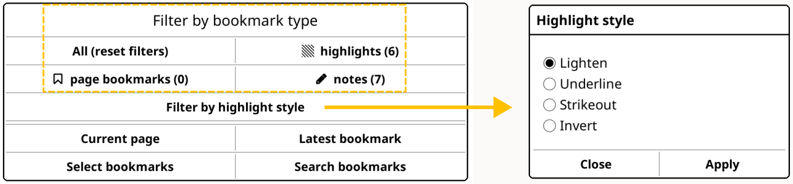
Освен добавянето на бележка, KOReader също ви позволява да редактирате самия подчертан текст, който се показва във вашия Списък с отметки. В някои ситуации това може да е по-полезно от добавянето на бележка към подчертаване. Например представете си, че преглеждате текст. Искате да подчертаете изречение, което съдържа много дати и една от датите е грешна. Когато искате да добавите бележка, за да посочите тази грешка, трябва да посочите във вашата бележка коя е грешна. Но ако редактирате текста на подчертаването, можете директно да напишете "(тази дата трябва да бъде проверерена)" до проблемната дата.
Обърнете внимание, че това редактиране не променя съдържанието на книгата или подчертания пасаж на страницата. Все още ще виждате същото подчертано изречение в четеца. Вашата редакция ще бъде видима в Списъка с отметки. И когато изнасяте подчертаванията си по-късно, редактираният текст ще бъде този, който се изнася.
За да редактирате текст на подчертаване, можете:
- Докоснете подчертаването
- Докоснете Детайли от изскачащото меню
- Докоснете Редактиране на текст от диалоговия прозорец с детайли
Също така можете да го направите от прозореца Отметки:
- Отидете в Списъка с отметки чрез менюто или жест
- Натиснете продължително върху подчертаването, което искате да редактирате
- Натиснете Редактиране на текст в менюто
- Променете текста в диалоговия прозорец и натиснете бутона Запазване
Ако искате да възстановите редактиран текст към оригиналното подчертаване, следвайте стъпките по-горе и на стъпка 3, вместо Промяна на текста, натиснете бутона Възстановяване на текст.
Обикновено, когато отворите Списъка с отметки, се показва само съдържанието на вашите подчертавания. Ако сте добавили бележка към подчертаване, ще видите само икона с молив в Списъка с отметки. Можете да натиснете продължително върху елемент в този списък, за да покажете (и редактирате) добавената бележка. Ако искате да виждате и текста на бележката във вашия Списък с отметки, можете да го зададете оттук:
/ Настройки / Отметки / Показване вМожете да изберете да се показва:
- Само подчертаният текст (поведение по подразбиране)
- Както подчертаният текст, така и бележката
- Бележка, ако има такава, в противен случай подчертаният текст
/ Настройки / Отметки / Максимум редове в отметкаСлед като приключите книга, можете да я преместите в определена папка за целите на архивиране или обработка. Активирайте плъгина Преместване в архива и задайте вашата целева директория в настройките на плъгина (Задай архивна директория). След това можете да преместите книга във вашата архивна папка, като използвате:
- Менюто на плъгина Преместване в архив
- С жест или
- Със запис в Бързо меню
KOReader предоставя различни начини за експортиране на вашите подчертавания и бележки от вашето устройство за четене:
Този многофункционален плъгин може да изнася подчертаванията ви в локални файлове или онлайн услуги.
Локално експортиране
Можете да изнасяте вашите подчертавания към устройството си в тези файлови формати:
- Текст (.txt)
- HTML (.html)
- Markdown (.md)
- Kindle Clippings (.txt)
- JSON (.json)
Можете да изберете предпочитаните формати за експортиране от:
/ Експортиране на подчертаното / Избор на формати и услугиМожете да видите местоположението за експортиране (а също и да го промените, ако искате):
/ Експортиране на подчертаното / Избор на папка за експортиранеОнлайн услуги
Можете също да изнасяте към тези услуги през мрежата:
- Joplin - приложение за водене на бележки
- Readwise - онлайн приложение за отметки/подчертавания
- Memos - хъб за бележки с отворен код, който се хоства самостоятелно
- Flomo - онлайн услуга за водене на бележки
- XMNote - органайзер за отметки за Android на китайски език
Можете да намерите подробни инструкции за настройка на тези услуги на нашата съответна wiki страница.
След като изберете форматите си, можете да изнесете бележките за текущата книга или за всички книги във вашата библиотека от менюто на същия плъгин.
Ако искате да изнесете само някои от книгите във вашата библиотека, можете да го направите от Управление на файлове:
- Изберете множество книги в Управление на файлове
- Докоснете бутона на менюто (показан като отметка) в горния десен ъгъл
- Изберете Експортиране на подчертаното от показаното меню
/ Експортиране на подчертаното / Избор на стилове за подчертаванеKoHighlights е външна програма, която можете да инсталирате на вашия компютър. Тя може да осъществи достъп до вашите бележки и подчертавания в книгите, когато включите четеца си към компютъра. Проверете страницата на проекта в GitHub за изтегляне и инструкции.
Calibre е външна програма, която можете да инсталирате на вашия компютър. Можете да внасяте подчертавания във вашата база данни на Calibre с неговия плъгин KOReader Sync. Можете да инсталирате споменатия плъгин в рамките на приложението Calibre. Проверете страницата на проекта за изтегляне и инструкции.
KOReader ви предоставя много начини да четете PDF/DJVU документ, който е оптимизиран за по-големи размери на страниците (обикновено A4 или Letter), на устройството ви с по-малък екран:
1. Можете да активирате Прекомпозиране
/ ПрекомпозиранеПрекомпозирането се опитва да извлече текстовата част от вашия документ (ако е налична) и да я форматира като една колона. Резултатите обикновено са задоволителни. Можете също да зададете това по подразбиране, като го докоснете и задържите.
2. Можете да активирате Мащабиране до съдържанието
 /
/ 
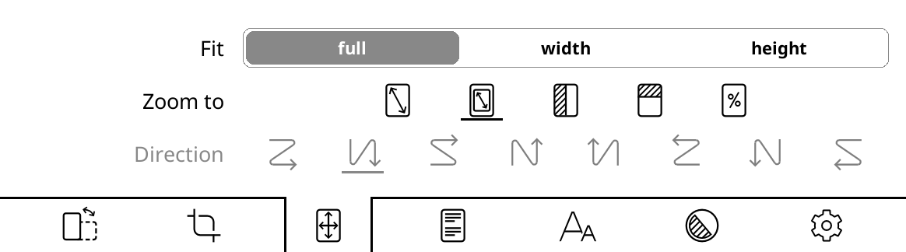
С тази опция KOReader се опитва да изреже полетата от вашия документ, така че текстът да изглежда по-голям на екрана ви. Можете да зададете побиране по ширина в същото меню, което ще се опита да побере само ширината на страницата вместо цялата страница, така че текстът ви ще изглежда по-голям.
3. Можете да опитате да използвате устройството си в Пейзажна ориентация
Това ще направи екрана ви по-широк, така че документът ви може да изглежда достатъчно голям, за да се чете удобно.

4. Можете да мащабирате до 100% размер и вместо това да превъртате екрана, за да четете различни части
Това е особено полезно при комикси. Първо активирайте режим с колони от този елемент на менюто:
/ 
След това изберете подходяща посока на потока за вашия документ от същото меню:

- Например, ако четете статия, която има две колони, ще превъртате надолу до края на страницата, четейки лявата колона, след което ще отидете в дясната горна част, за да продължите да четете дясната колона:

- Или ако четете комикс, ще искате да отидете “надясно / надолу наляво / надясно” в зигзагообразен модел:

- За японски комикс (ред на панелите отдясно наляво) това може да е обратното:

В този режим можете също да регулирате Хоризонтално/Вертикално припокриване и Брой колони от същото меню, за да поберете текста по-добре на екрана. Чувствайте се свободни да експериментирате с тези настройки.
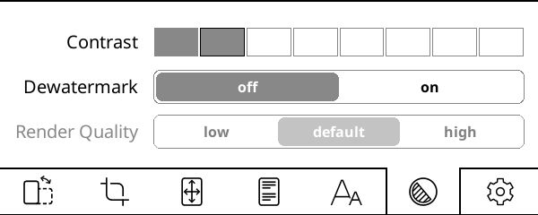
Настройката Контраст регулира нивата на черното във вашия документ. Имайте предвид, че същата стойност на контраста се прилага както за текста, така и за изображенията във вашия документ. Ако я зададете много висока, изображенията ви може да станат твърде тъмни.
Премахване на воден знак (Dewatermark) премахва водните знаци от изчертания документ. Може да се използва и за премахване на сиви фонове. Тази функция може да преобразува документ в скала на сивото или цветен документ в черно-бял, за да създаде повече контраст за по-лесно четене.
Качество на изчертаване (активно само в режим Прекомпозиране) задава качеството на обработката за извличане на текст и изображения и резултата. Високо е по-приятно, но може да бъде много по-бавно (няколко секунди за обръщане на страница) от по подразбиране в зависимост от вашия документ. Ако вашите PDF/DJVU файлове са бавни, това е първата настройка, която трябва да проверите.
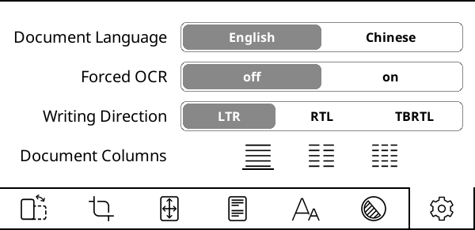
Език на документа задава езика, който ще се използва от OCR машината.
Принудителен OCR, както подсказва името, принуждава използването на OCR, дори ако документът има текстов слой.
Посока на писане (активно само в режим Прекомпозиране) задава посоката на оригиналния документ. Задайте това на RTL (Отдясно наляво) за езици като арабски и иврит.
Колони в документа (активно само в режим Прекомпозиране) задава броя на текстовите колони в оригиналния документ.
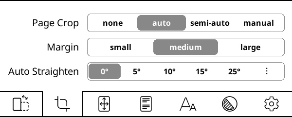
Функцията Автоматично изправяне може да изправи страниците на проблемен документ, например страници на PDF, които са сканирани под ъгъл. Тя е налична в PDF, DJVU, CBZ/CBT документи и файлове с изображения. За да я активирате, изберете максималния ъгъл на наклон, който KOReader ще се опита да коригира. Ако не се коригира, може да се наложи да изберете по-голям ъгъл. Обърнете внимание, че тази функция може да забави вашия четец в зависимост от няколко фактора.
За запазване на вашите подчертавания можете да използвате функцията Експортиране на подчертаното на KOReader, която е обяснена в предишен раздел.
Ако правите своите подчертавания върху PDF документ, KOReader може също да ги запази директно в PDF файла. Това може да бъде полезно в определени ситуации, защото с този метод подчертаванията ви стават част от PDF файла. Това означава, че можете да ги виждате в други приложения или платформи без да инсталирате KOReader. Например, ако изпращате файл с подчертавания на друг потребител, той не е нужно да инсталира KOReader, за да види подчертаванията ви. Можете просто да изпратите PDF файла със запазените в него подчертавания и той може да го отвори и види със съвместим четец на PDF файлове.
ВНИМАНИЕ Ако използвате плъгина Синхронизиране на напредъка, запазването на PDF подчертавания ще промени файла ви, така че синхронизацията ви ще бъде неуспешна. Ако планирате да използвате и двете функции, в настройките на плъгина Синхронизиране на напредъка променете Метод за сравняване на документи на Име на файл вместо съпоставянето по подразбиране Двоичен:
/ Синхронизиране на напредъка / Метод за сравняване на документиКои PDF четци могат да показват тези подчертавания?
PDF четците обикновено зависят от някои стандартни библиотеки за изчертаване на PDF файлове. Две от най-известните PDF библиотеки са библиотеките MuPDF и Poppler. KOReader използва библиотеката MuPDF, така че подчертаванията, записани в PDF файлове в KOReader, в момента не са видими в PDF четци, които използват библиотеката Poppler. По-долу можете да намерите списък за съвместимост. ✅ означава, че можете да виждате своите подчертавания от KOReader в това приложение, ❌ означава, че не можете да ги видите. А ⚠️ означава, че приложението се нуждае от някакъв плъгин, за да ги покаже. Списъкът е подреден по азбучен ред в рамките на категориите.
ВНИМАНИЕ Този списък не е пълен и може да не е актуален. Затова ви предлагаме сами да тествате съвместимостта. Просто направете подчертаване в KOReader, запишете го в PDF файла и опитайте да отворите файла на предназначения от вас четец, за да проверите дали подчертаването е видимо.
- ✅ Браузър Chrome (Всички платформи)
- ✅ Deepin Reader (Linux)
- ✅ Браузър Firefox (Всички платформи)
- ✅ Ghostscript (Всички платформи)
- ✅ MuPDF (Windows/Android)
- ⚠️ Zathura (ако плъгинът MuPDF е активиран)
- ❌ Adobe Acrobat Reader
- ❌ Evince (Linux)
- ❌ Foxit Reader
- ❌ LibreOffice Draw (като редактор)
- ❌ Moon Reader (Android)
- ❌ Okular (Linux)
- ❌ SumatraPDF (Windows)
- ❌ Xpdf (Linux)
- ❌ Xreader (Linux)
Тъй като правенето на подчертавания за по-късна употреба може да включва значителни усилия, ако планирате да използвате тази функция, трябва да разберете как работи, за да избегнете разочароващи ситуации.
БЪРЗО ОБОБЩЕНИЕ: Ако искате да можете да изтривате или изнасяте вашите PDF подчертавания по-късно, трябва да копирате папката .sdr, свързана с вашата книга, когато архивирате или копирате книгата си на други устройства. Без тази папка KOReader все още може да показва запазените подчертавания, но не може да знае къде са във файла, така че не може да ги модифицира. Моля, продължете да четете за повече информация относно това.
Как работят нормалните подчертавания в KOReader
Когато направите подчертаване в KOReader, независимо дали документът е EPUB или PDF, това подчертаване се записва във файл с настройки. Например, ако четете Alice in Wonderland.epub, ще имате папка с име Alice in Wonderland.sdr в същата папка като вашата книга. Вашите подчертавания ще се съхраняват във файл в тази папка .sdr. Което означава, че ако изтриете тази папка .sdr, която е свързана с вашата книга, ще загубите подчертаванията си.
Как работят PDF подчертаванията в KOReader
Функцията за PDF подчертавания работи малко по-различно от описанието по-горе. Както споменахме преди, когато запазите вашите PDF подчертавания, те ще бъдат директно записани в PDF файла, което означава, че стават част от самия файла. Ето защо можете да изпратите този PDF на друг потребител и той да види подчертаванията със съвместим четец на PDF файлове. Той няма да се нуждае от вашата папка .sdr, която съдържа запис на вашите подчертавания, защото сега подчертаванията са вградени директно в PDF файла.
Нека обясним проблема, който може да възникне, когато използвате тази функция, с един пример. Представете си, че четете PDF книга на вашия електронен четец с KOReader:
- Правите подчертавания и опцията Запазване на подчертаното в PDF е активирана, така че докато правите тези подчертавания, KOReader ги запазва във вашия PDF файл.
- Искате да продължите да четете книгата на телефона си с KOReader, така че копирате този PDF файл от вашия електронен четец на вашия телефон (но не сте копирали папката .sdr, а само PDF файла).
- Когато отворите книгата на телефона си с KOReader, ще видите, че вашите подчертавания все още са там.
Сега ситуацията на двете ви устройства изглежда идентична. KOReader както на вашия електронен четец, така и на телефона ви показва PDF файла с едни и същи подчертавания. Но само изглежда идентична, всъщност има голяма разлика.
KOReader на вашия електронен четец знае кои подчертавания в този PDF файл са направени от KOReader, защото има папката .sdr. Но KOReader на вашия телефон няма това знание. Има само PDF файла.
Разликата възниква, когато се опитате да изтриете PDF подчертаванията или да ги изнесете. Вашият електронен четец може както да изтрие тези PDF подчертавания, така и да ги изнесе. Но KOReader на телефона ви не може, защото, както казахме, той няма папката .sdr на вашата книга, така че подчертаванията в книгата изглеждат като част от оригиналната книга от негова гледна точка.
Накратко, ако искате да можете да изтривате или изнасяте вашите PDF подчертавания по-късно, трябва да копирате папката .sdr, свързана с вашата книга, когато архивирате или копирате книгата си на други устройства.
OCR (Оптично разпознаване на символи) е процесът на извличане на текст от изображения. В контекста на KOReader обикновено се използва за извличане на текст от сканирани страници на книги в PDF файлове. KOReader разчита на Tesseract Open Source OCR Engine за тази задача.
За да използвате тази функция, трябва да:
- Инсталирате езиковите данни на Tesseract във вашия KOReader
- Добавите новоинсталираните езици в конфигурационния файл koreader/defaults.lua (необходимо е само ако вашият език е различен от английски или китайски)
Комиксите обикновено се нуждаят от по-често опресняване на страниците, отколкото чисто текстовото съдържание. За нормален текст можете да зададете интервала за опресняване на страницата на високи стойности без проблем. Но изображенията могат да оставят повече остатъци и да причинят остатъчни изображения (ghosting), особено в зависимост от панела на вашия електронен четец.
KOReader ви позволява да зададете всеки жест за превключване към различни честоти на опресняване. Например можете да зададете плъзгане нагоре по левия ръб за опресняване на всяка страница при четене на комикси и да зададете плъзгане надолу по левия ръб за опресняване на всяка x-та страница за книги само с текст. Така че, когато отворите комикс, можете да превключите към по-често опресняване с просто докосване или плъзгане (или обратното).
Това действие се намира в:
/ Докосване и жестове / Управление на жестове / Секция Екран и осветление / Честота на пълно опресняванеТази функция улеснява четенето на комикси на по-малки екрани. Можете да я активирате, докато четете PDF, DJVU, CBZ или CBT документ чрез:
/ Панел за мащабиране (манга/комикс)Когато тази опция е активирана, KOReader се опитва да намери границите на правоъгълните панели на екрана. Ако натиснете продължително върху панел, KOReader го увеличава и показва само този панел.
Както се досещате, тази функция работи най-добре с комикси, които имат ясни граници на панелите. Също така в този режим няма обръщане на страница за преминаване към следващия панел поради този проблем с границите. Трябва да затворите мащабирания панел и да натиснете продължително върху следващия. За да направите това, просто плъзнете надолу в този мащабиран панел. Също така можете да използвате всеки жест с множество плъзгания (всяка комбинация от нагоре, надолу, наляво, надясно), за да излезете от този изглед.
Процедурата може да се види по-долу:
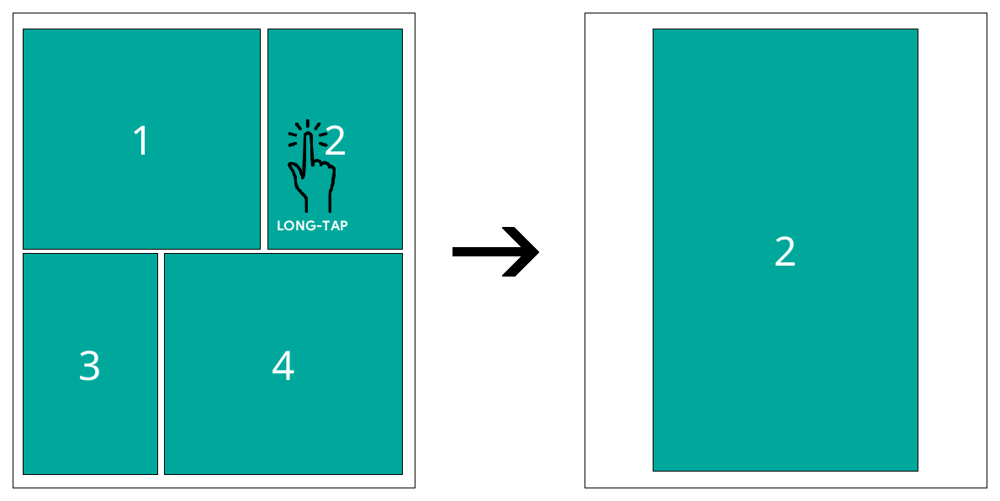
Ако искате да използвате тази функция с други типове файлове като EPUB, FB2, HTML или файлове с изображения, трябва да отворите файла с различен енджин: В Управление на файлове докоснете продължително върху името на файла, докоснете Отваряне с… и изберете MuPDF.
Когато достигнете последната страница на книга, KOReader ви показва диалогов прозорец. В този диалогов прозорец има действие Отваряне на следващия файл, което ще отвори следващия файл в същата директория като текущата книга. Така можете да поставите поредиците си в отделни директории и да ги четете една след друга, без да се връщате към Управление на файлове.
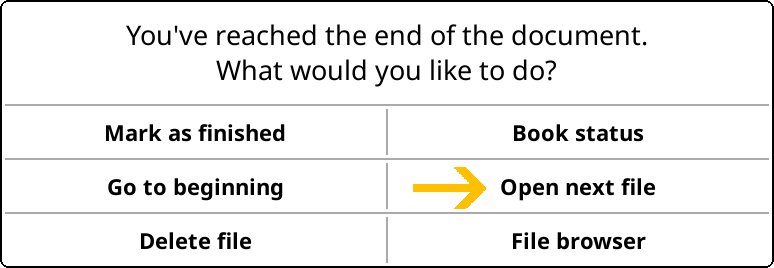
Когато отваряте следващия файл, KOReader пропуска файловете, които сте маркирали като прочетени. Тази функция е полезна например, когато имате папка с файлове с манга и вече сте прочели някои от тях. Можете да маркирате файл като прочетен от диалоговия прозорец в края на книгата, показан по-горе. Също така можете да го маркирате от Управление на файлове, като натиснете продължително върху файла. След като ги копирате на устройството си, можете:
- Отворете Управление на файлове в KOReader
- Натиснете продължително върху тези, които вече сте приключили, и докоснете Маркиране като прочетено
Сега можете да прочетете всички файлове, като просто докоснете Отваряне на следващия файл в края на книгата. KOReader ще пропусне тези, които вече сте прочели.
Ако обичате да четете манга книги на вашето E-ink устройство, има някои съвети, които могат да подобрят преживяването ви. Подготовката на ваши собствени манга файлове е най-доброто решение, ако не сте доволни от това как изглеждат комиксите на вашето устройство.
Типовете файлове като MOBI и EPUB не са подходящи за обработка на съдържание, състоящо се предимно от изображения (напр. манга/комикси). Поддръжката на MOBI в KOReader е минимална до несъществуваща, а приоритетите на EPUB за изчертаване на текст могат да причинят проблеми при показване на изображения на цяла страница. За допълнителни технически подробности, моля, посетете този проблем в GitHub.
Най-добрият вариант е създаването на CBZ файл, който работи по-добре в KOReader. Файл с разширение .cbz е zip файл (без компресия), който представлява колекция от изображения. Той съхранява множество изображения, най-често .png или .jpeg файлове, организирани в страници на комикса. KOReader може да отваря и CBT файлове, които са подобни на CBZ файловете, но използват формата на TAR архив.
Най-лесният начин да конвертирате манга в CBZ е да вземете мангата като изображения от различни уебсайтове и след това да ги конвертирате с помощта на Kindle Comic Converter (https://github.com/ciromattia/kcc). Има някои полезни настройки като автоматично завъртане на двустранни развороти в пейзажна ориентация и прилагане на дитеринг, така че преливанията, изчертани на E-ink, да бъдат плавно дитеровани без назъбени слоеве.
Най-добрите резултати могат да бъдат постигнати чрез преоразмеряване на вашите изображения точно до размера на екрана на вашия електронен четец. CBZ файл, специфичен за екрана, който е насочен към точния размер на екрана на устройството, предотвратява преоразмеряването по време на четене. KOReader намалява мащаба на вашите изображения до размера на вашия екран по време на четене, но това не се препоръчва, защото KOReader добавя стъпка за дитеринг преди мащабирането и това причинява загуба на качество.
Но ако искате да използвате ръчно направения от вас CBZ на повече от едно устройство или искате да запазите високата резолюция за в бъдеще, най-добрият ви вариант може да бъде да направите CBZ за устройството си с най-висока резолюция. Или да изберете произволна "висока" резолюция, вероятно такава, която съответства на източника. 300 PPI или по-добра (до 450 или дори 600), освен ако източникът не е с по-ниска, разбира се. Ако приемем размер на екрана от 8", 1500×2000 е добра целева резолюция. За по-големи изображения трябва да го изпробвате на вашето устройство и да видите дали може да се справи с него. Особено старите Kindles с малко памет могат да се затруднят с размери като 3000×4000 например. Ако автоматизирате процеса, може би си струва да обмислите създаването както на версия с по-ниско, така и с по-високо качество (напр. при 200/400 или 300/600 DPI).
/ Докосване и жестове / Прелистване на страници / Обръщане на докосванията и плъзганията за прелистване / бутоните за прелистванеСледното е примерна процедура за обработка на един манга файл:
- Изтеглете Kindle Comic Converter (KCC) от https://github.com/ciromattia/kcc
- Изтеглете вашата манга от избрания от вас източник (напр. HakuNeko)
- Разопаковайте манга файла. Сега трябва да имате директория, която съдържа само изображения (или поддиректории с изображения, без архиви)
- Обработете тази директория с KCC. Всяка директория ще произведе един CBZ файл, така че ако искате да направите няколко тома наведнъж, изберете няколко директории едновременно
Някои полезни настройки на KCC:
Разделяне на развороти: Тази функция открива двойни страници (развороти) и ви позволява да ги завъртите или да ги разрежете на две.
Мащабиране нагоре: Увеличава изображения, които са по-малки от вашата целева резолюция.
Ако искате да се насладите на вашата манга по-потапящ начин, уверете се, че сте избрали абсолютно същата резолюция като резолюцията на екрана на вашето устройство в KCC, когато създавате вашия CBZ файл. Също така можете да скриете долната лента за напредък, докато четете мангата си в KOReader. Така ще имате потапящ изглед на цял екран на вашата манга без препятствия.
!!! ЗА НАПРЕДНАЛИ
След като използвате KCC, за да създадете CBZ файл, можете да приложите допълнителен дитеринг към изображенията. По този начин преливанията, изчертани на E-ink, ще бъдат плавно дитеровани без назъбени слоеве. Тази стъпка ще създаде фино настроени томове манга, които изглеждат по-добре в KOReader.
Можете да използвате ImageMagick за обработка на вашите изображения. ImageMagick е мощен софтуерен пакет с отворен код за показване, създаване, конвертиране, модифициране и редактиране на растерни изображения. Можете да изтеглите ImageMagick и да го използвате от командния ред за обработка на много изображения наведнъж.
- Разопаковайте подготвения CBZ файл, който сте създали с KCC,
- Изтеглете следния файл dither_pack.zip (разположен в Yandex Disk), който съдържа два пакетни файла (.BAT) и GIF цветови шаблон.
- Извлечете тези три файла до вашите изображения, които ще бъдат обработвани
- Редактирайте файла _magick_manga_ditherN_resize.bat и променете резолюцията към резолюцията на вашето устройство (и на двете места в BAT файла).
ВНИМАНИЕ Следващата стъпка ще замени всички изображения в директорията с обработените. Затова се уверете, че имате тяхно копие в някоя друга директория, ако искате да запазите оригиналите.
- Стартирайте _magick_manga_ditherN_resize.bat, за да преоразмерите и приложите дитеринг към изображенията.
- Приемайки, че имате инсталиран 7-Zip, стартирайте _batch_archive.bat, за да пакетирате всички обработени изображения в CBZ архив.
!!! ЗА НАПРЕДНАЛИ
Можете да накарате KOReader да прелиства страници от Ляво на Дясно, така че плъзганията и зоните за докосване да бъдат разменени. За да активирате това, добавете следните редове:
["/storage/emulated/0/Books/manga"] = {
["inverse_reading_order"] = true,
["kopt_zoom_direction"] = 0,
},
към този файл:
/koreader/settings/directory_defaults.luaкъдето /storage/emulated/0/Books/manga е абсолютният път към директорията, съдържаща вашите манги. След тази промяна, когато отворите файл от споменатата директория, вашите плъзгания и зони за докосване ще бъдат разменени.
Ще видите интерфейса на управлението на файлове, когато стартирате KOReader за първи път. Това е един от двата основни интерфейса на KOReader. Тук ще извършвате всички операции с файлове и папки. Можете да получите достъп до него от екрана за четене чрез:
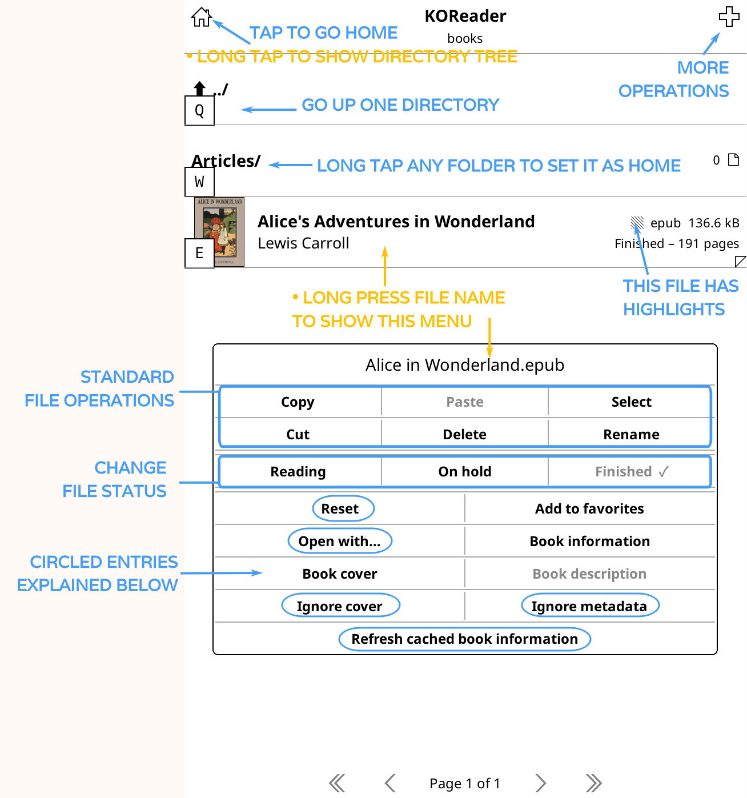
По подразбиране управлението на файлове показва вашата папка НАЧАЛО, която е основната папка на библиотеката ви. Можете да промените това чрез продължително натискане върху която и да е папка. Можете да промените много опции на управлението на файлове, като това как се показват или сортират книгите, чрез ГОРНОТО МЕНЮ, като плъзнете надолу от горната част на екрана.
Оградените в кръг елементи на изображението са обяснени по-долу:
НУЛИРАНЕ: Тази опция ви позволява да нулирате някои свойства на вашия документ, като напредък в четенето, отметки, потребителско изображение за корица и др., които можете да изберете в следващ диалогов прозорец.
ВНИМАНИЕ Бъдете много внимателни, когато използвате диалога за нулиране, и проверете два пъти кои елементи са маркирани, в противен случай можете случайно да нулирате всичко, свързано с вашата книга.
ОТВАРЯНЕ С…: KOReader има различни енджини за изчертаване на различни типове файлове. В някои случаи можете да отворите файл в различен енджин, за да получите някои други функции. Вижте разделите Преглед на архивни файлове и Преглед на файлове с изображения малко по-долу.
ИГНОРИРАНЕ НА КОРИЦАТА: Ако по някаква причина искате да деактивирате корицата за тази книга (може да има грешна корица или корицата да не е много четима на E-ink екрана), можете да изберете това.
ИГНОРИРАНЕ НА МЕТАДАННИ: Ако метаданните на вашата книга не са правилни, полето за име може да показва безполезна информация. Изберете тази опция, за да се покаже името на файла вместо метаданните.
ОБНОВЯВАНЕ НА ВРЕМЕННАТА ИНФОРМАЦИЯ ЗА КНИГИТЕ: KOReader кешира метаданните и корицата на книгата, когато я добавите към библиотеката си. Ако направите някои промени в книгата след копиране на устройството си, тази информация може да се нуждае от актуализация. Ако видите грешна корица или метаданни, можете да опресните информацията за книгата с този елемент от менюто.
Управлението на файлове ви позволява да извършвате някои операции (като копиране, преместване, изтриване, експортиране на подчертаното) върху много файлове едновременно. За тази процедура първо трябва да изберете файловете. В момента има три различни начина за избиране на файлове за групови операции в управлението на файлове:
- При първия метод натиснете продължително върху име на файл и изберете Избиране от изскачащия диалогов прозорец. Това ще активира Режима на избиране. Сега можете да докоснете други файлове, за да ги добавите към селекцията. Когато приключите с избирането на вашите файлове, докоснете иконата с отметка в горния десен ъгъл на екрана. Можете да изберете какво да правите с тези файлове от диалоговия прозорец. Или да излезете от режима на избиране от същия диалогов прозорец.
- При втория метод натиснете иконата + (плюс) в горния десен ъгъл и изберете Избиране на файлове от диалоговия прозорец. Това ще активира Режима на избиране и останалото е същото като при първия метод по-горе.
- При третия метод можете да изберете файловете си въз основа на Търсене на файл. Това е полезно, ако трябва да извършите операция върху много файлове, разпределени в различни папки. Например искате да преместите всички файлове във вашата колекция, чийто автор е Толкин, в нова папка. Стъпките за това действие ще бъдат:
- От Горното меню натиснете върху Раздела за търсене (с иконата на лупа) и изберете Търсене на файл.
- Отметнете опцията Включване на подпапки, ако искате да търсите и в папките. Можете да отметнете Търсене и в метаданните на книгата, ако искате KOReader да търси в метаданните на книгата. В противен случай KOReader ще търси въведената от вас дума само в имената на файловете.
- Можете да започнете търсенето от вашата Начална папка на библиотеката или от вашата Текуща папка, като натиснете съответния бутон.
- След като търсенето приключи, ще видите списък с файлове (ако терминът ви за търсене бъде намерен, разбира се). Сега можете да докоснете Иконата с меню тип хамбургер в горния ляв ъгъл на екрана, за да влезете в Режима на избиране.
- Докоснете всички файлове, върху които искате да извършите операции, и докоснете Иконата с отметка в горния ляв ъгъл на екрана ви. Ще видите диалогов прозорец, който съдържа Избиране в управление на файлове. Изберете тази опция.
- Сега ще се върнете в Управление на файлове и файловете, които сте избрали в Диалога за търсене, също ще бъдат избрани тук.
- Докоснете Иконата с отметка в горния десен ъгъл на екрана си. Сега можете да изберете какво да правите с тези файлове от диалоговия прозорец.
KOReader ви позволява да добавяте любимите си папки към бързо достъпно меню за преки пътища към папки. Например, ако имате папка Архив в библиотеката си, която се намира под Начало>Статии>Научни>Архивирани, можете да зададете пряк път към тази папка Архивирани и да получите бърз достъп до нея дори докато четете книга.
Добавяне на пряк път към папка:
Има два начина за добавяне на папка към вашия списък с Преки пътища към папки:
- Когато сте в Управлението на файлове, докоснете бутона на менюто + (плюс) в десния ъгъл, след това докоснете елемента Добавяне към преките пътища за папки и въведете описателно име за този пряк път. Това ще добави папката, в която се намирате в момента.
- Когато сте в Управлението на файлове, натиснете продължително върху име на папка, за да отворите контекстното меню. Докоснете елемента Добавяне към преките пътища за папки и въведете описателно име за този пряк път. Това ще добави папката, върху която сте натиснали.
Папките, които са в списъка ви с Преки пътища към папки, ще имат звезда (★) в Управлението на файлове.
Можете да премахнете папка от преките пътища по същия начин, като натиснете продължително върху нея и изберете Премахване от преките пътища за папки.
Преглед на вашите преки пътища към папки:
Можете да отворите вашите Преки пътища към папки от Управлението на файлове или Екрана за четене, докато четете книга.
- От Управлението на файлове: В горния десен ъгъл от менюто + (плюс) и след това избор на Преки пътища към папки или чрез задаване на жест.
- От екрана за четене: Като зададете жест към него.
Намира се в раздела Управление на файлове на Управление на жестове. Можете да научите как да задавате жестове в съответния раздел на това ръководство.
Ако имате книги във формат .txt (което е по-често срещано при езици с китайска и кирилска писменост), можете да опитате да активирате функцията Определяне на съдържанието на TXT файлове. В някои случаи това може да подобри изчертаването и да направи текста по-"книгоподобен". Когато е активирана, енджинът за изчертаване ще използва евристика (текст, обвит под определена максимална дължина на реда, единични или двойни празни редове, маркиращи абзаци, отстъп или центриран текст, считан за заглавие...), за да отгатне как да изчертае текста по-добре и ще се опита да създаде съдържание.
Можете да активирате тази функция тук (която се вижда само ако четете .txt файл):
/ Стил / Определяне на съдържанието на TXT файловеОбърнете внимание, че тази функция може да обърка ASCII арт рисунки и форматиране, базирано на символи за интервал. Ако вашата книга има такива функции, може би е по-добре да използвате режима по подразбиране, в който текстовият файл се изчертава както е в моноширинен шрифт.
KOReader може да чете файлове, съхранени/компресирани в ZIP файлове. Можете да отваряте файлове ZIP, CBZ и EPUB (тъй като те също са ZIP архиви) с програмата за преглед на архиви, за да разгледате съдържащите се в тях файлове:
- В Управление на файлове натиснете продължително името на файла
- Докоснете Отваряне с…
- Докоснете Преглед на архиви
ZIP файлът може да съдържа много видове документи като html, txt или изображения. KOReader може да отвори правилно вашия ZIP файл, само ако му дадете подсказка за типа на файла в ZIP архива. Ако дадете на файла си само разширение .zip, KOReader ще приеме, че този архив съдържа изображения и ще се опита да го отвори като CBZ файл.
СЛУЧАЙ ПО ПОДРАЗБИРАНЕ: иметонавашияфайл.zip - Приема се, че е zip файл с изображения (и се отваря от енджина на MuPDF)
Ако вашият zip файл съдържа един от тези типове (вместо само изображения), моля, наименувайте го съответно:
- FictionBook - иметонавашияфайл.fb2.zip
- HTML - иметонавашияфайл.htm.zip / иметонавашияфайл.html.zip
- Текстови лог файлове - иметонавашияфайл.log.zip
- Markdown - иметонавашияфайл.md.zip
- Rich Text Format - иметонавашияфайл.rtf.zip
- Обикновен текст - иметонавашияфайл.txt.zip
Ако документите не са наименувани по този начин, вероятно ще бъде използван грешният енджин за четене/формат и ще видите съобщението Няма четец за този файл или файлът е повреден.. Можете да преименувате този файл, както е обяснено по-горе, или да натиснете продължително върху името на файла и след това да изберете Отваряне с..., за да изберете правилния енджин.
Можете да отваряте файлове с изображения с програмата за преглед на изображения, вместо да ги отваряте като книга. Файловете, отворени по този начин, не се показват в хронологията ви и имат по-добра поддръжка за мащабиране и завъртане.
- В Управление на файлове натиснете продължително името на файла
- Докоснете Отваряне с…
- Докоснете Преглед на изображения
KOReader предоставя две опции за четене на Markdown документи.
- Можете да отворите документа директно като книга, като го докоснете. Този режим не предоставя форматиране. Така че вашият .md файл ще изглежда така, сякаш е отворен в текстов редактор.
- Можете да конвертирате вашия Markdown документ в HTML. Това действие ще генерира HTML файл от вашия Markdown документ с правилното форматиране и Съдържание, създадено от заглавията.
За да конвертирате .md файл, натиснете продължително върху него в Управление на файлове и докоснете Преобразуване от изскачащото меню. В същата директория ще бъде създаден нов файл със същото име, но с разширение HTML. Имайте предвид, че конвертирането може да отнеме известно време в зависимост от вашия Markdown файл и скоростта на устройството ви.
Можете също да зададете файлови асоциации за типове файлове, които KOReader не разпознава автоматично. За да асоциирате файл с един от провайдерите на KOReader, първо докоснете продължително върху файла си в Управление на файлове, след което изберете провайдерски енджин, който да обработва този файл. Можете да отметнете:
- Винаги да се използва този енджин за този файл, за да асоциирате този провайдер само с този конкретен файл
- Или отметнете Винаги да се използва този енджин за типа файл, за да асоциирате този провайдер с всички файлове, които имат същото разширение като този
- От същия диалогов прозорец можете да видите направените от вас асоциации, като докоснете Преглед на стандартното за вида файлове
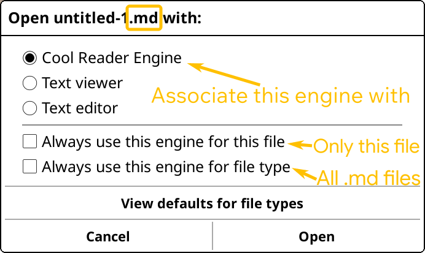
Функцията Списъци на KOReader може да ви помогне да подредите библиотеката си по-ефективно. Като много проста дефиниция, списъците са създадени от потребителя списъци с вашите книги. Например можете да създадете два списъка с имена Художествена литература и Нехудожествена литература, за да подредите съответно книгите си. Разбира се, можете да използвате и папки, за да направите това, но използването на списъци ви дава по-голяма гъвкавост.
Някои предимства на списъците в сравнение с организацията, базирана на папки:
- Добавянето на книга към списък не премества файла на книгата. Така че книгите ви могат да се намират в различни папки, но да се показват в един и същи списък.
- Една книга може да бъде в много списъци, което не е възможно с папките. Например можете да имате списък Научна фантастика и списък Военна фантастика. Една книга може да бъде добавена и към двата списъка едновременно.
- Можете да задействате профили със списъци. Това ще бъде обяснено по-долу, ако не сте запознати с функцията за профили на KOReader. (Разбира се, можете да задействате профили и с папки, но списъците не изискват да местите книгите си, за да използвате временни профили, например.)
Можете да създавате списъци, за да отразяват всякакъв вид категоризация. Някои примерни идеи:
- Жанрове: Художествена литература, нехудожествена литература, мемоари...
- Статус на книгата: Чета в момента, искам да прочета, следваща, недочетена...
- Поредици: Властелинът на пръстените, Хари Потър...
- Тип документ: Книги, научни статии, уеб статии...
Можете да създавате списъци от диалоговия прозорец Списъци, разположен тук:
/ СписъциМожете да получите достъп до този диалогов прозорец от изгледа за четене или от Управление на файлове. Когато отворите това меню, то ще ви покаже списък с вашите списъци. По подразбиране там ще видите Избрани като списък, който включва книгите, които вече сте добавили към вашия списък Избрани.
- Добавяне на нов списък: Използвайте менюто тип хамбургер , разположено в горния ляв ъгъл на този екран > Нов списък
- Премахване на списък: Натиснете продължително върху името на списъка > Премахване на списъка
- Преименуване на списък: Натиснете продължително върху името на списъка > Преименуване на списъка
- Промяна на реда на вашите списъци: Използвайте менюто тип хамбургер , разположено в горния ляв ъгъл на този екран > Подреждане на списък
Има три различни места в KOReader, където можете да добавите книги към списъците си:
1. От екрана Управление на файлове и Хронология
Можете да добавите книга към списъците си от екрана Управление на файлове или Хронология. От екрана Хронология можете да добавяте книги по една. Натиснете продължително върху книгата и изберете Списъци.... След това можете да изберете към кой(и) списък(ци) искате да добавите тази книга.
Ако добавяте няколко книги, можете да го направите от Управление на файлове. За множество книги това е процедурата:
- Натиснете продължително върху книга
- Изберете Избиране от изскачащото меню
- Изберете други книги
- Докоснете иконата с отметка (✔️) в горния десен ъгъл
- Докоснете Списъци
За добавяне на една книга, просто натиснете продължително върху нея в Управление на файлове и изберете Списъци от изскачащото меню.
2. От меню Списъци
Този метод ви позволява да добавяте единични и множество книги към вашите Списъци. Най-голямата разлика от метода с Управление на файлове е, че можете да добавяте цели папки и техните подпапки към списъците си наведнъж. Това е много полезно, ако книгите ви вече са подредени в папки. Например, ако всичките ви книги за научна фантастика са в една папка, можете да създадете списък с име Научна фантастика и да добавите тази папка наведнъж.
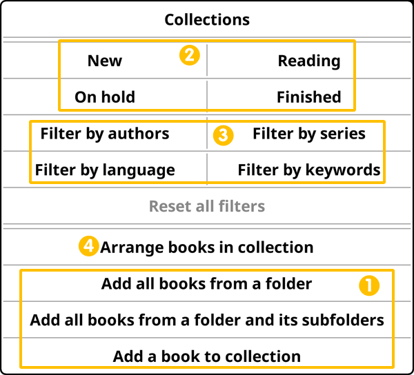
На изображението по-горе Поле 1 показва опциите за добавяне на книга. Можете да стигнете до това меню от менюто тип хамбургер на екрана със списъците:
/ Списъци / Името на вашия списък / - Добавяне на всички книги от папка: Както казва името ѝ, тази опция ви позволява да изберете папка, за да добавите всички книги в нея към този списък. Обърнете внимание, че тази опция не добавя книгите в подпапките на избраната папка. Например, ако изберете папката си Художествена литература и имате папки с имена Научна фантастика и Военна фантастика под нея, те няма да бъдат добавени с тази опция.
- Добавяне на всички книги от папка и нейните подпапки: Това е опцията, която ще добави всички подпапки на избраната от вас папка. Бъдете внимателни с тази опция, защото тя ще стигне до самото дъно, докато добавя книгите. Така че, ако имате много нива на вложени папки, може да има твърде много книги, отколкото сте предполагали.
- Добавяне на книгата в списък: Това е основната опция, която ще ви позволи да добавите една-единствена книга.
Можете да премахнете книга от списъците от екрана Управление на файлове, Хронология или екрана Списъци. В екраните Управление на файлове и Хронология натиснете продължително върху книгата и изберете Списъци.... Ще видите отметка до списъците, към които сте добавили тази книга. Премахнете отметката от тях, като ги докоснете, за да премахнете книгата от този списък. Също така от екрана Списъци можете да натиснете продължително върху книга и да изберете Премахване от списъка.
Списъците могат да бъдат много претъпкани, но KOReader ви позволява да намирате книгите си лесно, като предоставя много опции за филтриране. Ако погледнете изображението по-горе, можете да видите опциите за филтриране в Поле 2 и Поле 3. Поле 2 ви позволява да филтрирате по статус на книгата (нова, четена в момента, прочетена, задържана) и Поле 3 ви позволява да филтрирате по метаданни на книгата (автор, поредица, език, ключови думи). Можете също да комбинирате тези две групи филтри като в този пример: "Покажи ми новите книги в този списък, които са написани от Айзък Азимов (Филтриране по автори -> Айзък Азимов), които още не съм започнал (Филтриране по статус -> Нова)."
Можете да актуализирате метаданните на книгата, като натиснете продължително върху нея в Управление на файлове и изберете Информация за книгата от менюто. В изскачащия прозорец можете да натиснете продължително върху което и да е поле, за да промените метаданните като автор или ключови думи. Можете също да използвате Calibre за тази задача – външно приложение, което прави управлението на метаданните на вашите книги много по-лесно.
Има два вида търсене, които можете да извършите в списъци: Можете да търсите фраза в заглавията на книгите и метаданните или можете също да търсите вътре в текстовете на книгите. Можете да отворите диалоговия прозорец за търсене от:
/ Списъци / / Търсене в списъциАко искате да извършите търсене в текстовете на книгите, моля, имайте предвид следните точки:
- Този тип търсене е наличен само ако отворите списъците от управлението на файлове. Той не е наличен от екрана за четене.
- Това търсене може да бъде бавно (около 2 секунди на книга в списъка). Така че, ако имате претъпкан списък, може да отнеме много време.
Функцията за търсене зависи от това къде се намирате в прозореца на списъците. Ако сте на основното ниво, където виждате всичките си списъци, търсенето ще се извърши във всички списъци. Ако искате да търсите само в конкретен списък, трябва да докоснете и да влезете в списъка. Това е особено важно, ако търсите и в текстовете на книгите, тъй като това е бавна операция.
Когато извършите търсене, резултатите автоматично ще бъдат запазени като нов списък.
След като създадете своите списъци и добавите книги към тях, вероятно ще искате да ги поддържате синхронизирани с някои папки. Например, представете си, че сте създали списък Научна фантастика. И също така имате папка SF във вашата библиотека, където слагате книгите си за научна фантастика. Ако искате списъкът с научна фантастика да се актуализира сам, когато добавите нов файл в тази папка, можете да го направите с функцията свързани папки на списъците.
С тази функция можете да свържете една или повече папки към вашия списък. След това KOReader ще (пре)сканира папките, за да добави или премахне книги от вашите списъци при тези условия:
- При свързване на папка към списък
- При включване на подпапки на свързана папка
- При показване на списъка
- При стартиране на програмата
Как да свържете папка към вашия списък:
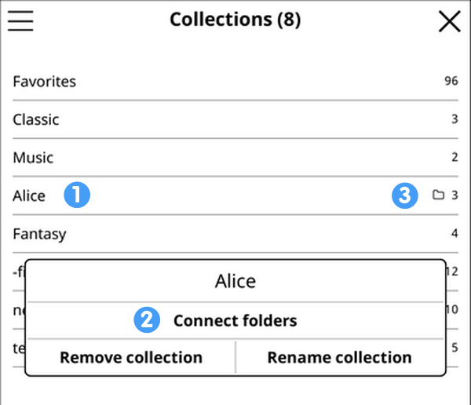
- Отидете на екрана Списъци, който се вижда на изображението по-горе.
- Натиснете продължително върху името на списъка, към който искате да свържете папки (1).
- Изберете Свързване на папки от изскачащото меню (2).
- Ще се отвори екранът Списък на свързаните папки.
- Добавете папка, като натиснете иконата ПЛЮС в горния ляв ъгъл на този екран, което ще отвори екрана Избор на папка.
- Повторете последната стъпка, ако искате да свържете повече папки.
Списъците със свързани папки ще имат икона на папка, както можете да видите от изображението по-горе (3).
Може да искате да включите и подпапки на папка за синхронизиране. В стъпка 4 по-горе, когато отворите екрана Списък на свързаните папки, можете да натиснете продължително върху папка, за да включите/изключите подпапки от изскачащото меню.
Как да прекъснете връзката на папка с вашия списък:
- Отидете на екрана Списъци, който се вижда на изображението по-горе.
- Натиснете продължително върху името на списъка, към който искате да свържете папки (1).
- Изберете Свързване на папки от изскачащото меню (2).
- Ще се отвори екранът Списък на свързаните папки.
- Натиснете продължително върху папката, която искате да разкачите, и изберете Прекъсване на връзката на папката от изскачащото меню.
Вашите списъци могат да се използват с функцията за профили на KOReader. Ако все още не знаете за профилите, ето описание от нашия раздел Профили:
Профилът по същество е набор от действия, които могат да бъдат задействани с един жест (като макрос).
Като пример си представете, че когато четете определен вид книги, вие винаги:
- Завъртате екрана в пейзажна ориентация
- Увеличавате размера на шрифта и контраста, и
- Включвате осветлението на екрана
С плъгина за профили можете да направите всичко това наведнъж с едно действие.
Можете да стартирате профил ръчно, но истинската сила на профилите може да бъде отприщена с функцията му за автоматично изпълнение. Използвайки тази функция, можете да задействате профил в зависимост от някои условия. Ето връзката към съответния раздел на ръководството: Автоматично изпълняване на профил. Засега тук ще обясним само едно условие за задействане: Списъци.
По принцип можете да създадете някои профили и да ги зададете да се изпълняват автоматично, ако отворената книга е в някакъв конкретен списък. Някои полезни примери:
- Можете да добавите цялата си манга към списък Манга и да направите профил, който да превключва посоката на прелистване на Отдясно наляво и да обръща докосванията и плъзганията за прелистване, когато отворите манга книга от този списък.
- Можете да добавите комиксите си към списък, който може да задейства профил за намаляване на интервала на опресняване на екрана до всяка страница, за да се избегне ефектът на остатъчното изображение (ghosting).
- Можете да добавите проблемните си PDF файлове към списък, така че когато ги отворите, Автоматичният OCR или Режимът на прекомпозиране да се активират с профил.
KOReader може да прекомпозира PDF документи (тази опция може да бъде намерена в долното меню, докато четете документ с фиксирано оформление като PDF), за да ги направи подходящи за малките екрани на електронните четци. Но за най-добри резултати може да искате да конвертирате документите си в по-гъвкавия формат EPUB.
Най-широко използваните приложения за конвертиране или оптимизиране на вашия документ за вашето мобилно устройство за четене са Calibre (фокусирано върху EPUB, Kindle) и K2pdfopt (фокусирано върху PDF).
Calibre може да конвертира документите ви между много формати. Има и вграден редактор, който ви позволява да редактирате електронни книги (и да поправяте проблеми) в най-популярните формати за електронни книги, EPUB и Kindle.
K2pdfopt оптимизира PDF/DJVU файлове за мобилни електронни четци и смартфони. Работи добре с многоколонни PDF/DJVU файлове и може да прекомпозира текст дори от сканирани PDF файлове. Може да се използва и като общ инструмент за манипулация на PDF файлове чрез копиране/изрязване/преоразмеряване/OCR.
OCRmyPDF е приложение за командния ред, което може да добави OCR текстов слой към сканирани PDF файлове (съдържащи само изображения без текст), позволявайки те да бъдат търсени или копирани и поставяни. Може да бъде особено полезно за четене на стари сканирани книги. Може също да оптимизира изображенията за по-малък размер на файла.
SingleFile е разширение за браузър за Mozilla Firefox, Google Chrome и Microsoft Edge. Това разширение позволява запазване на уеб страница като един-единствен .html файл с всички вградени ресурси (изображения, стилови таблици, скриптове).
!!! ЗА НАПРЕДНАЛИ
KOReader съхранява настройки и допълнителна информация, свързана с вашите книги, в същата директория като файла на книгата ви. Ние наричаме това метаданни (информация) и то включва:
- Визуални настройки за книгата
- Напредък в четенето на книгата
- Подчертавания, отметки и бележки
В скорошна промяна добавихме нови начини за съхраняване на тези метаданни, за да разрешим определени проблеми, свързани със синхронизирането между устройствата. В момента има три различни метода за съхраняване на метаданните и всеки метод има свои собствени предимства/недостатъци.
Можете да промените тази настройка от това меню:
/ Документ / Хранилище за описателните данни за книгитеВНИМАНИЕ Силно препоръчваме да прочетете раздела по-долу, за да разберете разликите и как работи всеки метод, преди да правите каквито и да е промени. В противен случай има риск да загубите настройките на книгата си, напредъка и анотациите.
/ Документ / Хранилище за описателните данни за книгите: папката на книгатаТова е методът по подразбиране, използван при нова инсталация на KOReader. При този метод, когато копирате Alice in Wonderland.epub на устройството си и го отворите за първи път, в същата директория ще бъде създадена папка с име Alice in Wonderland.sdr. Тази директория съдържа файловете за вашите настройки, анотации и напредък за тази книга.
Предимства
- Можете ръчно да архивирате и възстановявате настройките за всяка книга.
- Когато извършвате синхронизация на директории или архивиране със система като Syncthing или Dropbox, настройките ви ще бъдат синхронизирани заедно с книгите ви.
- Можете да преименувате родителските директории, в които се намира книгата ви, това няма да обърка KOReader.
Недостатъци
- Ако реорганизирате библиотеката си чрез преместване/преименуване на файловете с книги или придружаващата ги папка .sdr извън управлението на файлове на KOReader, ще загубите метаданните на тези книги без никакво предупреждение.
- Тези папки .sdr ще бъдат видими, когато преглеждате директориите на библиотеката си с друг файлов мениджър или от компютъра си, което може да претрупа изгледа ви.
/ Документ / Хранилище за описателните данни за книгите: .../koreader/docsettingsТози метод по същество е същият като този по подразбиране по-горе. Разликата е, че при този метод всички .sdr папки на вашите книги ще бъдат под една-единствена директория, която е под основната структура на директориите на KOReader, вместо във вашата директория на библиотеката, до файловете с книги.
Предимства
- Папките .sdr на книгите ще бъдат видими и ще се използват само от KOReader. Те няма да претрупват изгледа на директориите на вашата библиотека, когато я разглеждате с друг файлов мениджър или от компютъра си.
Недостатъци
- Ако реорганизирате библиотеката си чрез преместване/преименуване на директории на библиотеката, файлове с книги или придружаващата ги папка .sdr извън управлението на файлове на KOReader, ще загубите метаданните на тези книги без никакво предупреждение.
- Тъй като метаданните на вашите книги няма да бъдат в папките на библиотеката ви, всяка синхронизация или архивиране на вашата библиотека няма да ги включва.
/ Документ / Хранилище за описателните данни за книгите: .../koreader/hashdocsettingsТози метод е подобен на предишния, тъй като папките .sdr ще бъдат във вътрешна директория. Но този метод е разработен, за да отстрани недостатъците на предишния метод. Защото, обикновено, ако преименувате книга извън KOReader (с вградения файлов мениджър/четец на устройството или от свързан компютър), името на нейната .sdr папка вече няма да съвпада и метаданните ви за тази книга ще бъдат загубени. Ако използвате само Управлението на файлове на KOReader за файлови операции, това се обработва автоматично, така че няма последствия.
При този ХЕШИРАН метод папките .sdr не се идентифицират по пътя/името на файла на книгата. Вместо това ще се използва частичен MD5 хеш за свързване на книгите с техните настройки. Този хеш се използва като уникален ID за книгата и се изчислява въз основа на съдържанието на файла на книгата. Същият хеш се използва и за именуване на нейната .sdr папка.
Предимства
- Папките .sdr на книгите ще бъдат видими и ще се използват само от KOReader. Те няма да претрупват изгледа на директориите на вашата библиотека, когато я разглеждате с друг файлов мениджър или от компютъра си.
- Можете да преименувате, премествате и копирате книгите си с друг файлов мениджър или от компютъра си. KOReader все още ще разпознава книгите след тези операции.
- При този метод KOReader асоциира същата .sdr папка с всички копия на книгата, дори ако тези копия са на различни устройства. Например, ако използвате Syncthing, този метод ви позволява да синхронизирате папката си /hashdocsettings заедно с файловете на книгите си на много устройства, на които е инсталиран KOReader. Въпреки различните относителни пътища на тези книги на всяко устройство, все още можете да синхронизирате анотациите и напредъка си на всичките си устройства. Това не е възможно при другите методи.
Недостатъци
- Всякакви операции, които променят файла директно (като записване на подчертавания в PDF файлове или изтегляне от Calibre), ще променят файла, така че неговият MD5 ID ще се промени (за разлика от преименуването или преместването, които са безопасни при този метод). В този случай KOReader няма да може да разпознае книгата, така че тези книги ще загубят своите метаданни.
- Изчисляването на ID-тата на файловете може да забави навигацията в Управление на файлове при преглед на по-големи директории.
Има много видове жестове, които можете да използвате за управление на KOReader. Някои жестове имат ограничения относно това къде на екрана могат да се използват и кои посоки се поддържат. Тези ограничения са посочени по-долу.

|
ДОКОСВАНЕ / ДВОЙНО ДОКОСВАНЕ Единично или двойно докосване с ЕДИН пръст РАБОТИ: Навсякъде по екрана |
 |
ДОКОСВАНЕ И ЗАДЪРЖАНЕ Единично докосване и задържане с ЕДИН пръст РАБОТИ: Само в четирите ъгъла |
 |
ДОКОСВАНЕ С ДВА ПРЪСТА Единично докосване с ДВА пръста едновременно РАБОТИ: Само в четирите ъгъла |
 |
РАЗТВАРЯНЕ И СЪБИРАНЕ Същото като увеличаване и намаляване на телефон или таблет. РАБОТИ: Навсякъде по екрана ИНФОРМАЦИЯ Този жест може да работи по-малко надеждно в зависимост от вашето устройство. Ако е така, моля, изберете друг тип жест. |
 |
ПЛЪЗГАНЕ С ЕДИН ПРЪСТ Плъзгащо движение с ЕДИН пръст РАБОТИ: По ръбовете на екрана (ХОРИЗОНТАЛНО и ВЕРТИКАЛНО) Навсякъде с изключение на ръбовете (ДИАГОНАЛНО) |
 |
ПЛЪЗГАНЕ С ДВА ПРЪСТА Плъзгащо движение с ДВА пръста едновременно РАБОТИ: Навсякъде по екрана |
 |
МНОЖЕСТВО ПЛЪЗГАНИЯ Повече от едно плъзгане, направено едно след друго, без да вдигате пръста си. Например като изчертаване на буквата U (НАДОЛУ-НАДЯСНО-НАГОРЕ) РАБОТИ: Навсякъде по екрана |
Икони от Econceptive от Noun Project |
Тази таблица показва жестовете, които идват с KOReader. Можете да промените тези жестове според предпочитанията си чрез:
/ Управление на жестовеГорен ляв ъгъл > Превключване на прелистването на страници
Горен десен ъгъл > Превключване на отметка
Противоположни диагонални ъгли едновременно > Направа на снимка на екрана
Лява страна > Отиване на -10 страници
Дясна страна > Отиване на +10 страници
Кратко диагонално плъзгане > Пълно опресняване на екрана
Дълго диагонално плъзгане > Направа на снимка на екрана
- Връщане към предишно местоположение
- Отиване на последната отметка
- Бърз преглед на документа
- Отметки
- Съдържание
- Показване на диалога за подсветка
- Превключване на прекомпозирането
- Хронология
- Статус на книгата
- Отиване на страница
- Назад
- Предишна глава
- Следваща глава
- Отваряне на предишния документ
- Избрани
Това е списък на всяко действие, което можете да зададете към жест, използвайки менюто Управление на жестове. Можете да използвате функцията за търсене на вашия браузър (обикновено Ctrl+F), за да търсите действие тук. Тези действия могат да се използват и във ваше собствено Бързо меню. Моля, проверете съответния раздел в ръководството за повече информация.
- Управление на файлове
- Отваряне на предишния документ
- Хронология
- Търсене в хронологията
- Избрани
- Списъци
- Търсене в списъци
- Търсене в речник
- Търсене в Уикипедия
- Показване на меню
- Търсене в меню
- Отваряне на следващия файл в папката на последната книга
- Отваряне на предишния файл в папката на последната книга
- Файл на бележник
- Снимка на екрана
- Показване на ефемериди
- Търсене в метаданните на Calibre
- Разглеждане на всички етикети на Calibre
- Разглеждане на всички поредици на Calibre
- Разглеждане на всички автори на Calibre
- Разглеждане на всички заглавия на Calibre
- Безжично свързване с Calibre
- Прекъсване на безжичната връзка с Calibre
- Статистика на четенето: превключване
- Статистика на четенето: показване на напредъка
- Статистика на четенето: показване на обхвата на времето
- Статистика на четенето: показване на календарен изглед
- Статистика на четенето: показване на днешната времева линия
- Статистика на четенето: синхронизиране
- Текстов редактор: отваряне на последния файл
- Отваряне на речника за думи
- Извличане от Wallabag
- Качване на опашката към Wallabag
- Качване на статуси към Wallabag
- Напредък в четенето
- Превключване на SSH сървъра
- Календарен изглед на статистиката
- Днешна времева линия на статистиката
- Синхронизиране на статистиката за книгата
- Изход от спящия екран
- Рестартиране на KOReader
- Изход от KOReader
- Превключване на продължителното натискане в ъглите
- Активиране на сензорния екран
- Деактивиране на сензорния екран
- Превключване на сензорния екран
- Обръщане на бутоните за прелистване
- Завъртане
- Превключване на ориентацията
- Обръщане на завъртането
- Завъртане на 90 по часовниковата стрелка
- Завъртане на 90 обратно на часовниковата стрелка
- Превключване на цял екран
- Показване на информация за мрежата
- Статистика на батерията
- Системна статистика
- Емулатор на терминал
- Стартиране на USB хранилище
- Приспиване
- Рестартиране на устройството
- Изключване
- Превключване на повторението на клавиш
- Превключване на акселерометъра
- Включване на Wi-Fi
- Изключване на Wi-Fi
- Превключване на Wi-Fi
- Показване на диалога за подсветка
- Превключване на подсветката
- Задаване на яркост на подсветката
- Увеличаване на яркостта на подсветката
- Намаляване на яркостта на подсветката
- Задаване на топлина на подсветката
- Увеличаване на топлината на подсветката
- Намаляване на топлината на подсветката
- Превключване на нощен режим
- Задаване на нощен режим
- Пълно опресняване на екрана
- Честота на пълно опресняване (винаги)
- Честота на пълно опресняване (не в нощен режим)
- Честота на пълно опресняване (в нощен режим)
- Винаги мигане на границите на главите
- Превключване на мигането на границите на главите
- Никога да не се мига на 2-рата страница на главата
- Превключване на мигането на 2-рата страница на главата
- Винаги мигане на страници с изображения
- Превключване на мигането на страници с изображения
- Автоматична топлина изключена
- Автоматичната топлина използва позицията на слънцето
- Автоматичната топлина използва график
- Автоматичната топлина използва по-близката полунощ
- Автоматичната топлина използва по-близкото пладне
- Автоматичната топлина превърта през режимите
- Тип на шрифта
- Увеличаване на размера на шрифта
- Намаляване на размера на шрифта
- Размер на шрифта
- Интервал между думи
- Разтягане на думите
- Контраст
- Тегло на шрифта
- Хинтинг на шрифта
- Кърнинг на шрифта
- Две колони
- Ляво/Дясно поле
- Синхронизиране на Горно/Долно поле
- Горно поле
- Долно поле
- Режим на изглед (страница-непрекъснат)
- Режим на изчертаване
- Мащаб
- Междуредие
- Алтернативна лента на състоянието
- Вградени стилове
- Вградени шрифтове
- Мащабиране на изображения
- Обръщане на изображенията
- Задаване на режим на показване
- Сортиране по
- Обратно сортиране
- Смесени папки и файлове
- Показване на меню плюс
- Превключване на режим на избиране
- Опресняване на съдържанието
- Преки пътища към папки
- Търсене на файл
- Последни резултати от търсене на файл
- Папка нагоре
- Отиване на страница
- Назад
- Експортиране на всички бележки във всички книги в хронологията
- OPDS каталог
- Показване на долно меню
- Превключване на лентата на състоянието
- Превключване на лентата за напредък на главата
- Предишна глава
- Следваща глава
- Първа страница
- Последна страница
- Случайна страница
- Прелистване на страници
- Отиване на страница
- Бърз преглед на документа
- Предишна отметка
- Следваща отметка
- Първа отметка
- Последна отметка
- Най-нова отметка
- Назад
- Връщане към предишно местоположение
- Напред към следващо местоположение
- Следване на най-близката връзка
- Следване на най-близката вътрешна връзка
- Добавяне на текущото местоположение към хронологията
- Изчистване на хронологията на местоположенията
- Пълнотекстово търсене
- Последни резултати от пълнотекстово търсене
- Съдържание
- Карта на книгата
- Карта на книгата (общ преглед)
- Преглед на страници
- Отметки
- Търсене в отметките
- Превключване на отметка
- Статус на книгата
- Информация за книгата
- Описание на книгата
- Корица на книгата
- Превод на текущата страница
- Обръщане на докосванията и плъзганията за прелистване
- Превключване на посоката на прелистване
- Превключване на потребителско съдържание
- Превключване на потребителски скрити потоци
- Задаване на действие при подчертаване
- Превъртане на действията при подчертаване
- Превъртане на стила на подчертаване
- Запазване на информацията за книгата
- Експортиране на анотации
- Експортиране на всички бележки в текущата книга
- Експортиране на всички бележки във всички книги в хронологията
- Преместване на текущата книга в архив
- Статистика на четенето: текуща книга
- Изпращане на напредък от това устройство
- Изтегляне на напредък от други устройства
- Превключване на прелистването на страници
- Превключване на прелистването по отметки
- Превключване на прекомпозирането
- Режим на мащабиране
- Промяна на коефициента на мащабиране
- Превключване на мащабирането на панел
- Изрязване на страницата
- Поле
- Хоризонтално припокриване
- Вертикално припокриване
- Побиране
- Мащабиране до
- Брой колони/редове за разделяне на страницата
- Коефициент на мащабиране
- Посока
- Режим на изглед
- Празнина между страниците
- Междуредие
- Подравняване
- Размер на шрифта
- Промяна на размера на шрифта
- Празнина между думите
- Прекомпозиране
- Контраст
- Премахване на воден знак
- Качество на изчертаване
- Език на документа
- Принудителен OCR
- Посока на писане
- Колони в документа
- Автоматично изправяне
Ако имате устройство с клавиатура като Kindle 2 и Kindle 3, включително Bluetooth клавиатури и емулатори, можете да използвате клавишите на клавиатурата, бутоните на устройството и клавишни комбинации, за да управлявате KOReader. Kindle 4 също се поддържа, на който му липсва пълна клавиатура, но все пак има достатъчно бутони, за да бъде функционален в този контекст. На тези устройства KOReader ще активира допълнително меню с име Клавишни комбинации, до което можете да получите достъп тук:
/ Придвижване / Физически бутони / Клавишни комбинацииТова меню е много подобно на интерфейса на Управление на жестове. В това меню:
- Можете да видите клавишните комбинации, които са налични на вашето устройство
- Можете да видите предварително дефинираните действия за някои клавишни комбинации
- Можете да задавате действия на наличните клавишни комбинации
Всички действия в Управление на жестове са налични и за задаване на клавишни комбинации. Което означава, че можете да контролирате почти всички функции на KOReader с тези клавишни комбинации.
В таблицата по-долу можете да видите зададените клавиши и комбинации по подразбиране:
ИНФОРМАЦИЯ Универсалният клавиш за снимка на екрана е Alt + Shift + G. Той е наличен на всички екрани, режими и платформи. На Kindle 4 е Клавиатура + Меню.
ИНФОРМАЦИЯ Ако имате Kindle 4, клавишът SHIFT в таблицата по-долу е съпоставен с вашия бутон КЛАВИАТУРА. Така че комбинациите Shift + (НАГОРЕ/НАДОЛУ/НАЛЯВО/НАДЯСНО) са съпоставени с Бутон Клавиатура + (НАГОРЕ/НАДОЛУ/НАЛЯВО/НАДЯСНО) на вашия Kindle 4.
Режим Управление на файлове | |
| Отваряне на горно меню | F1 |
| Навигиране до началната страница | Home |
| Придвижване в списъка с файлове | Нагоре / Надолу |
| Отваряне на избраната книга | Enter |
| Изход от приложението | Esc |
Режим за четене | |
| Отваряне на горно меню | F1 |
| Отваряне на долно меню | Enter |
| Назад/изход от приложението | Esc |
| Отметки | Shift + Наляво |
| Превключване на отметка | Shift + Надясно |
| Търсене в речник | Ctrl + D (Alt + D на Kindle) |
| Търсене в Уикипедия | Ctrl + W |
| Пълнотекстово търсене | Ctrl + S |
| Справка чрез търсене на файл | Ctrl + F |
Връзки | |
| Избиране на следващата връзка на страницата | Tab |
| Избиране на предишната връзка на страницата | Shift+Tab |
| Отваряне на избраната връзка на страницата | Enter |
Преглед на изображения (продължително натискане върху изображение) | |
| Увеличаване | Page Down |
| Намаляване | Page Up |
Подчертаване | |
| Влизане в режим на подчертаване | H |
| Стартиране/спиране на подчертаване | Enter |
| Преместване на индикатора за подчертаване | Наляво/Надясно Нагоре/Надолу |
| По-бързо преместване на индикатора | Shift + Наляво/Надясно/Нагоре/Надолу |
| Изход от режим на подчертаване | Esc |
Навигиране в книгата | |
| Прелистване на страници | Наляво-Надясно / Нагоре-Надолу Page Up-Page Down |
| Съдържание | Shift + Нагоре |
| Карта на книгата | Shift + Надолу |
| Отиване в началото | 1 |
| Отиване на 11% от книгата | 2 |
| Отиване на 22% от книгата | 3 |
| Отиване на 33% от книгата | 4 |
| Отиване на 44% от книгата | 5 |
| Отиване на 55% от книгата | 6 |
| Отиване на 66% от книгата | 7 |
| Отиване на 77% от книгата | 8 |
| Отиване на 88% от книгата | 9 |
| Отиване в края | 0 |
В диалога за Бърз преглед на документа | |
| Отиване в началото | Q |
| Отиване на 11% от книгата | W |
| Отиване на 22% от книгата | E |
| Отиване на 33% от книгата | R |
| Отиване на 44% от книгата | T |
| Отиване на 55% от книгата | Y |
| Отиване на 66% от книгата | U |
| Отиване на 77% от книгата | I |
| Отиване на 88% от книгата | O |
| Отиване в края | P |
Мащабиране на страница Само за PDF, DJVU и изображения | |
| Мащабиране за побиране на страницата | A |
| Мащабиране за побиране на ширината на страницата | S |
| Мащабиране за побиране на височината на страницата | D |
| Мащабиране за побиране на съдържанието | Shift + A |
| Мащабиране за побиране на ширината на съдържанието | Shift + S |
| Мащабиране за побиране на височината на съдържанието | Shift + D |
Бързото меню е скорошна функция на KOReader, която ви позволява да имате бързо достъпно персонализирано меню, както в примерното изображение по-долу. Можете да зададете това меню към жест и да имате достъп до него с едно плъзгане. Дори можете да имате меню, по-дълго от екрана ви, тъй като то може да се превърта.
По принцип всяко действие, на което можете да зададете жест, може да бъде добавено към Бързото меню. Неговите предимства са:
- Не е нужно да помните много жестове за всяко действие.
- Някои редки действия може да не си заслужават жест, но може да е твърде голямо усилие да ги търсите в системата от менюта. Вместо това можете да добавите такива рядко използвани действия към това меню.
- Ако инсталирате KOReader за роднина или приятел, можете да добавите любимите им действия към това меню, така че те дори да нямат нужда да влизат в системата от менюта, докато използват KOReader.
Примерно Бързо меню:
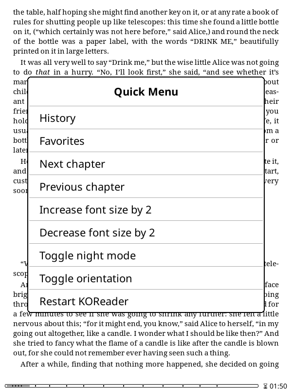
Има два метода за създаване на Бързо меню: Лесен и Разширен. Ако имате нужда само от едно меню, Лесният метод би трябвало да ви е достатъчен. Ако искате да показвате различни менюта с различни жестове, трябва да използвате Разширения метод. Друго предимство на Разширения метод е по-лесното преназначаване на жестове. Ако искате да промените жеста за вашето меню, можете лесно да го преместите на друг жест с менюто на Разширения метод. Ако искате да използвате друг жест, докато използвате Лесния метод, трябва да пресъздадете менюто си под новия жест.
- Отидете в менюто Управление на жестове чрез:
ГОРНО МЕНЮ / / Докосване и жестове / Управление на жестове
- Изберете жест за отваряне на вашето меню и го докоснете.
- Изберете действията, които искате да видите в менюто си, от менюто за конфигуриране на жестове. Разбира се, можете да изберете много действия наведнъж.
- След като изберете всичките си действия, ще кажете на KOReader да третира този жест като меню. Постигате това, като активирате елемента Показване като Бързо меню на втората страница, както можете да видите на снимката по-долу.
- Можете да сортирате елементите от менюто си с опцията Сортиране точно под нея.
Сега можете да стартирате менюто си с жеста, който сте избрали. Ако искате да промените елементите от менюто, можете да отворите страницата на жеста и да добавите/премахнете елементи.
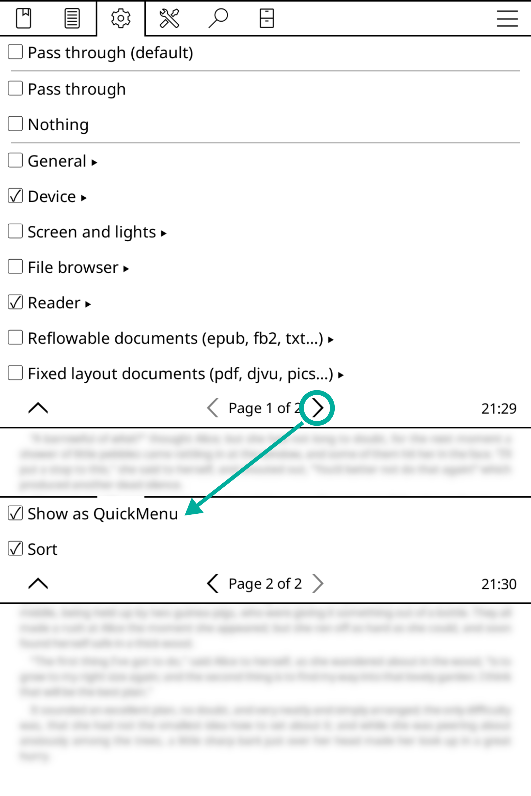
Това Бързо меню всъщност е Профил, който се появява на вашия екран като меню. Така че първо трябва да научите за Профилите. Ако вече знаете как да ги използвате, можете да продължите да четете, в противен случай прескочете към заглавието Профили (следващия раздел), създайте Профил с някои елементи и се върнете тук.
Преди да продължим, предполагаме, че вече сте създали Профил, както е инструктирано в предишния параграф. Сега ще превърнем нашия Профил в Бързо меню.
1. Отидете на новосъздадения си Профил и активирайте Показване в списъка с действия (показано на изображението по-долу). Това ще направи вашия Профил видим в Управление на жестове. Също така активирайте Показване като Бързо меню (също на изображението по-долу), така че вашият профил да се показва като меню, вместо да се изпълнява безшумно.
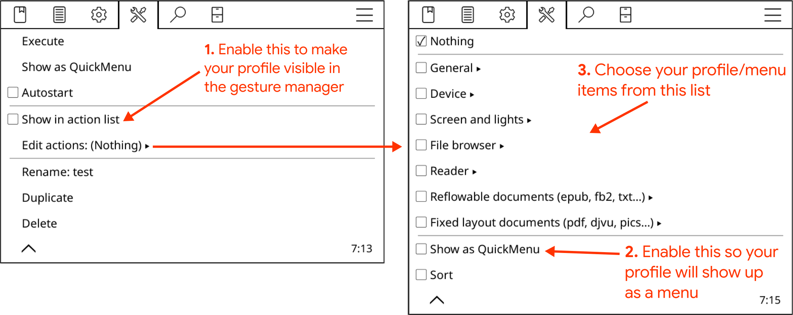
2. Сега се нуждаем от начин за достъп до нашето меню. Отидете в Управление на жестове и изберете жест от списъка, който да зададете на нашето меню. Да речем, че искаме да докоснем ъгъла на екрана, за да се покаже менюто. Сега докоснете Докосване на ъгъл, след това изберете Долу вляво. Сега докоснете Основни и отидете на втората страница. Ще намерите вашия профил като Профил x, където x е името, което сте дали на този Профил. Докоснете квадратчето му за отметка, за да зададете вашия профил към този жест.
След всички стъпки сега трябва да виждате менюто си, когато докоснете долния ляв ъгъл. Можете да редактирате менюто си, като отидете на неговата страница Профил, където можете да добавяте или премахвате елементи. Също така там има елемент Сортиране, така че можете да промените реда на елементите в менюто си.
Както казахме, Бързото меню всъщност е Профил. Което означава, че можете да имате повече от едно меню. Можете да създадете друг Профил и да следвате същите стъпки, за да създадете друго меню, ако искате.
Обикновено след избиране на елемент от вашето Бързо меню, менюто изчезва от екрана. Понякога може да искате да запазите менюто отворено след избор на елемент. Това ви позволява да коригирате настройки като тези примери:
- Постепенни промени, като увеличаване/намаляване на яркостта, по-голям/по-малък размер на шрифта, предишни/следващи страници или глави и др.
- Група опции, които активирате последователно (но не едновременно), като включване на Wi-Fi и след това стартиране на SSH сървъра
Можете да активирате тази опция от следното меню, ако имате Бързо меню, базирано на Управление на жестове (Лесен метод):
/ Докосване и жестове / Управление на жестове / „Вашият жест за Бързо меню“ / Оставяне на бързото меню отвореноИли от това меню, ако имате Бързо меню, базирано на Профили – (Разширен метод):
/ Профили / „Вашият профил за Бързо меню“ / Редактиране на действия / Оставяне на бързото меню отвореноОбикновено Бързото меню се отваря центрирано в средата на екрана. Ако използвате електронния си четец с една ръка, можете да активирате настройка, която ще отваря менюто ви на позицията на жеста. По този начин менюто ще бъде по-близо до пръста ви и по-лесно за достъп. За да използвате тази функция, активирайте тази опция:
/ Докосване и жестове / Управление на жестове / „Вашият жест за Бързо меню“ / Закотвяне на Бързо меню към позицията на жестаПрофилът по същество е колекция от действия, които могат да бъдат задействани с един жест (като макрос).
Като пример си представете, че когато четете определен вид книги, вие винаги:
- Завъртате екрана в пейзажна ориентация
- Увеличавате размера на шрифта и контраста, и
- Включвате осветлението на екрана
С плъгина за профили можете да направите всичко това наведнъж с едно действие.
За да създадете профил, първо се уверете, че плъгинът Профили е активиран. Ако не го виждате под:
/ Профилитогава трябва да го включите от:
/ Повече инструменти / Управление на плъгиниВ менюто Профили докоснете Нов и дайте описателно име на вашия профил. Сега трябва да видите новия си профил в менюто. Докоснете го и ще видите екрана от лявата страна. Можете също да Изтриете, Преименувате или Дублирате профил от това меню.
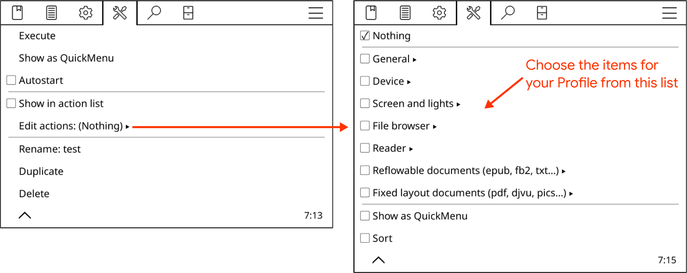
Когато докоснете елемента от менюто Редактиране на действия, ще видите менюто вдясно. Това е същото меню като менюто за избор на жестове и има действия в много категории. Което означава, че можете да извършвате всяко действие с Жест, използвайки Профил.
Сега можете да изберете няколко елемента от всички тези категории. Избраните тук действия ще бъдат изпълнени, когато активирате този профил.
Има много начини за активиране на профил:
- Можете да активирате профил с продължително натискане върху името му от същото меню Профили
- Можете да активирате профил, използвайки жест. За целта трябва да активирате Показване в списъка с действия от менюто на профила. Сега можете да го изберете чрез:
ГОРНО МЕНЮ / / Докосване и жестове / Управление на жестове / „ПРОИЗВОЛЕН ЖЕСТ“ / Основни / Профил „Името на вашия профил“
- Можете също да активирате профил автоматично в зависимост от някои условия. Вижте следващото заглавие, за да научите как да използвате тази мощна функция.
Можете да стартирате профил ръчно, както е обяснено по-горе, но истинската сила на профилите може да бъде отприщена с функцията им за автоматично изпълнение. Използвайки тази функция, можете да задействате профил в зависимост от някои условия и подусловия:
| Задействане (Тригер) | Подусловия |
| При стартиране на KOReader Изпълнение на този профил всеки път, когато KOReader се стартира. Обърнете внимание, че това е възможно само когато KOReader стартира с Управление на файлове или Последния файл. | - |
| При събуждане Изпълнение на този профил всеки път, когато устройството се събуди | - |
| При завъртане Изпълнение на този профил, когато екранът се завърти в избраната(ите) ротация(и). Примери: Промяна към оформление с две колони, когато устройството се завърти в пейзажен режим. Активиране на нощен режим, когато устройството се завърти с главата надолу. |
|
| При показване на папка Изпълнение на този профил, когато влезете в тази папка в управлението на файлове. Можете да използвате този тригер, за да промените режима на показване на управлението на файлове. Например, когато влезете в определена папка, можете да промените режима на показване от изглед мозайка на детайлен изглед. |
|
| При отваряне на книга
Този тригер се изпълнява, когато отворите книга (по избор), комбинирано със специфични подусловия. Първите 4 подусловия са съвпадение ИЛИ, така че всяко едно от тях е достатъчно, за да задейства изпълнението на профила. |
|
| При затваряне на книга
Тази опция е същата като по-горе, но се задейства, когато затворите книга. Можете да използвате това например за активиране/деактивиране на статистиката за четене, когато отваряте определени документи, за да ги изключите от статистиката си. |
|
Примери за профили:
Ето някои примери за профили от нашите разработчици, за да ви дадат идеи за използването на тази мощна функция на KOReader. Примерите включват също условия за автоматично изпълнение и функции за списъци:
- Активиране на режим с две колони, когато завъртите устройството си в пейзажна ориентация.
- Активиране на нощен режим, когато завъртите устройството си с главата надолу.
- Добавете цялата си манга към списък. След това създайте профил, който превключва посоката на прелистване на страници на Отдясно наляво и обръща докосванията и плъзганията за прелистване, когато отворите манга книга от този списък.
- Добавете комиксите си към списък, което може да задейства профил за намаляване на интервала за опресняване на екрана до всяка страница, за да се избегне остатъчното изображение (ghosting).
- Задействане на профил за коригиране на шрифта, размера на шрифта и задаване на режим с две колони при отваряне на файл за първи път от папката Периодични издания.
- Добавете проблемните си PDF файлове към списък, така че когато ги отворите, Автоматичният OCR или Режимът на прекомпозиране да се активират с профил.
- Превключване на режима на показване (корици, детайлен списък и т.н.) на управлението на файлове, когато влезете в определени папки.
- Изключване на статистиката за четене при отваряне на книга от списък със Справочници. Включване на статистиката отново при затваряне на книгата.
- Ако направите промените в стиловете достъпни в управлението на жестовете, можете да създадете профил, за да ги активирате или деактивирате въз основа на определени условия. Например можете да задействате профил "деактивиране на стиловете на издателя И прилагане на моите потребителски промени в стиловете" въз основа на местоположението/списъка на книгата или по ключова дума в метаданните на книгата. Вижте раздела Промени в стиловете на ръководството за повече информация.
!!! ЗА НАПРЕДНАЛИ
В KOReader имаме набор от действия/настройки и този набор може да бъде създаден по два начина:
- Като профил (което е обяснено като Разширен метод и се съхранява в settings/profiles.lua)
- Като списък от действия, зададени към жест (което е обяснено като Лесен метод и се съхранява в settings/gestures.lua)
Този набор може също да бъде изпълнен по два различни начина:
- Прилагане на всяко действие в (сортиран) ред при задействане (като Профил)
- Показване като Бързо меню
Добавянето/премахването на действия от даден набор и активирането/сортирането на Бързо меню се извършват чрез същото меню с действия. Единствената разлика е, че менюто с действия в Управлението на жестовете има два допълнителни елемента (Предаване нататък), ето защо елементите Показване като Бързо меню и Сортиране са на втората страница.
ИНФОРМАЦИЯ Можете да архивирате и прехвърляте профилите си на друго устройство. Моля, вижте раздела Архивиране на настройките на KOReader.
Плъгините са малки програми за KOReader, които са подобни на добавките за браузъри, които разширяват възможностите на основната програма. KOReader има 3 категории плъгини:
Вътрешните плъгини са част от основната програма.
- Те са директно достъпни от менюто с плъгини на KOReader.
- Те не се нуждаят от инсталация. Можете да ги активирате от менюто.
- Те са проверени от нашите разработчици, така че се считат за безопасни.
- Те се актуализират автоматично, когато актуализирате KOReader.
Можете да ги активирате/деактивирате чрез:
/ Повече инструменти / Управление на плъгини!!! ЗА НАПРЕДНАЛИ
Тази група съдържа неофициални плъгини, които не са част от основната логика на KOReader.
- Трябва да бъдат инсталирани ръчно и след това активирани от менюто с плъгини.
- Те трябва да се актуализират ръчно.
- Те са проверени от нашите разработчици по времето, когато са били добавени към нашето хранилище, така че се считат за безопасни.
Можете да получите достъп до тях от тази страница. Обикновено се инсталират чрез изтегляне на директорията на плъгина от страницата по-горе и копирането ѝ в папката koreader/plugins на вашето устройство. Но, моля, проверете страницата на плъгина за други възможни инструкции.
!!! ЗА НАПРЕДНАЛИ
Това са плъгини, които са разработени независимо от екипа на KOReader.
- Трябва да бъдат инсталирани ръчно и след това активирани от менюто с плъгини.
- Те трябва да се актуализират ръчно.
- Те НЕ са проверени от нашите разработчици, така че имайте предвид, че може да има рискове при използването им.
Някои забележителни примери за тези външни плъгини с връзки към техните GitHub страници:
- Плъгин AskGPT: Можете да задавате въпроси на ChatGPT относно части от вашата книга. Можете също да използвате този плъгин за опростяване, обясняване, обсъждане или превод на текст на други езици.
- Асистент: Плъгин AI Помощник: Разклонение на горния плъгин с по-разширени функции като множество AI провайдери и вградени/потребителски подкани (промптове).
- Плъгин Anki: Плъгин за KOReader, позволяващ генериране на карти за Anki (софтуер с отворен код за флашкарти) за думи, потърсени във вътрешния речник.
- Плъгин Zotero: Тази добавка ви позволява да разглеждате вашите списъци от Zotero (софтуер за управление на препратки с отворен код) от KOReader.
- Плъгин Syncthing: Тази добавка ви позволява да стартирате програмата за peer-to-peer синхронизация на файлове Syncthing на KOReader (тествана само на устройства Kobo, но може да работи и на други устройства според автора). Това прави възможно автоматичното синхронизиране на файлове между вашия електронен четец и компютър/телефон.
Също така можете да щракнете върху тази връзка, за да отворите страница за търсене в Github, за да откриете още проекти за плъгини на KOReader.
Автоматична подсветка - Автоматично превключва подсветката според нивото на околната светлина (Налично само за Kindle Voyage и Oasis)
Автоматичен нощен режим - Позволява ви да регулирате топлината на подсветката в устройства с естествена (жълта/оранжева) светлина и да задавате Нощен режим автоматично според график
Автоматично пестене на енергия - Поставя устройството в режим на готовност, приспиване или изключване след определени периоди на неактивност
Изчакване за дълбок сън - Приспива устройството след избран период на неактивност (налично на всички E-ink устройства, с изключение на базираните на Android OS)
Автоматично прелистване - Автоматично прелиства страницата след зададен период от време
Фоново изпълнение - Услуга за други плъгини: Позволява на задачи да се изпълняват редовно във фонов режим.
Статистика на батерията - Събира и показва статистика за използването на батерията на вашето устройство
Преки пътища за книги - Позволява задаването на жест за бързо отваряне на книга
Calibre - Можете да изпращате документи от вашата библиотека в Calibre директно към вашите KOReader устройства чрез WiFi връзка. Проверете нашата wiki страница за инструкции.
Преглед на корици - Позволява режими за показване на корици за управлението на файлове и хронологията
Изображение за корицата - Запазва изображението на корицата на текущата книга като файл (налично на устройства с Android/PocketBook/reMarkable)
Експортиране на подчертаното - Експортиране на подчертавания и бележки към локални файлове или към Joplin (приложение за водене на бележки)
Тренировка с флашкарти - Показване на флашкарти с помощта на интервално повторение (SM2) на подчертавания от вашата библиотека
Жестове - Осигурява поддръжка на жестове за KOReader
HTTP инспектор - Позволява ви да контролирате устройството си от друго устройство чрез wifi - Вижте по-долу за повече информация
Поддръжка на японски език - Поддръжка на японски език за KOReader, която разширява вградения речник и системата за избиране
Поддържане на активност - Поддържа устройството будно, за да предотврати автоматично прекъсване на WiFi връзката
Преместване в архив - Премества текущия документ в архивна папка
Изтегляне на новини - Извлича RSS и Atom новини и ги запазва като HTML файлове. Проверете нашата wiki страница за инструкции.
OPDS - Позволява ви да изтегляте книги от онлайн каталози
Разширяване на възприятието - Позволява използването на периферното зрение за по-бързо четене. Вижте това видео в YouTube, за да видите как работи: Как да утроите скоростта си на четене за 20 минути (Тим Ферис)
Профили - Позволява комбинирането на множество настройки за създаване на превключваеми профили
Синхронизиране на напредъка - Синхронизирайте докъде сте стигнали с четенето между различни устройства с KOReader. Проверете нашата wiki страница за инструкции.
QR от клипборда - Генерира QR код от съдържанието на междинната памет
Таймер за четене - Таймер за обратно отброяване за показване на съобщение след определено от потребителя време
Статистика на четенето - Изчислява статистиката на сесиите за четене и скоростта на четене за използване в приблизителните оценки на оставащото време за глава/книга
SSH - Позволява достъп до вашето устройство чрез протокола SSH. Можете да получите достъп чрез FTP приложения или дори чрез файловия си мениджър, ако го поддържа. Проверете нашата wiki страница за инструкции.
Системна статистика - Можете да видите информация за вашия CPU/RAM/БАТЕРИЯ чрез този плъгин под:
/ Помощ / Системна статистикаЕмулатор на терминал - Стартира обвивка (команден ред) на вашето устройство, която може да изпълнява пълнофункционални терминални приложения
Текстов редактор - Основен текстов редактор за създаване и редактиране на файлове с обикновен текст
Синхронизиране на времето - Синхронизира времето на устройството с NTP сървъри
Фина настройка на документа - Позволява фина настройка на документ, преди да бъде зареден, въз основа на външни фактори
Wallabag - Изтегля най-новите статии от Wallabag сървър като отделни EPUB файлове. Проверете нашата wiki страница за повече информация.
!!! ЗА НАПРЕДНАЛИ
Този плъгин ви позволява да контролирате устройството си от друго устройство чрез wifi. Работи чрез стартиране на прост HTTP сървър на вашето устройство, който обслужва страница, съдържаща контроли за KOReader. Можете да получите достъп до тази страница през вашата мрежа и да контролирате вашето устройство за четене. Но имайте предвид следните точки, когато използвате този плъгин:
- Това е експериментален плъгин, така че използвайте го на свой собствен риск
- Този плъгин е активиран по подразбиране, но сървърът НЕ се стартира по подразбиране. Можете да го стартирате ръчно или да го зададете на автоматично стартиране.
- Трябва да стартирате този плъгин само в доверени мрежи, тъй като той е силно несигурен (без HTTPS, без ограничение на достъпа, без удостоверяване)
Можете да прочетете примерна употреба на този плъгин във форума на MobileRead
!!! ЗА НАПРЕДНАЛИ
Потребителските кръпки са малки файлове, написани на езика Lua. Те могат да променят функционалността на KOReader, без да правят постоянни промени по вашата инсталация. Те могат да бъдат написани от разработчици, други потребители или можете да напишете такава сами (ако имате необходимите обширни познания за вътрешностите на KOReader).
Можете да намерите актуален списък на Потребителските кръпки в нашата wiki страница и в списъка с проблеми (issues) в GitHub, отбелязани с етикет Налична потребителска кръпка. Можете да ги видите, като последвате тази връзка.
- Създайте директория с име patches под директорията koreader на вашето устройство (на Android тази папка се намира на SD картата)
- Изтеглете и поставете файла с кръпката с разширение .lua в тази директория patches
- Рестартиране на KOReader
Когато създадете директория за кръпки, както е инструктирано, нов плъгин с име Управление на кръпки става достъпен в менюто с плъгини след рестартиране на KOReader. С този плъгин можете да видите списъка и статуса на вашите потребителски кръпки и да ги активирате/деактивирате. Можете да докоснете елемента от менюто Относно управлението на кръпки, за да видите повече информация.
Редът на изпълнение на дадена кръпка се определя от първата цифра в името на файла. Например: 2-TOC-title-patch.lua. Ако има няколко кръпки, започващи с една и съща цифра, редът на изпълнение е естественият ред (1<10<11<12<13<…<109<…<10010). Ако просто изтегляте вече направена кръпка, не е необходимо да променяте името на файла.
Имена, започващи с:
- 0 - Изпълнява се много рано и само веднъж след актуализация
- 1 - Изпълнява се много рано при всяко стартиране на KOReader (но след 0, ако е приложимо)
- 2 - Изпълнява се след като UIManager е готов при всяко стартиране на KOReader
- 3-7 - Резервирано
- 8 - Изпълнява се преди изход и преди настройките да бъдат запазени
- 9 - Изпълнява се точно преди изход
Ако имате проблем с потребителска кръпка, можете да се върнете към предишната си конфигурация, като премахнете файла на кръпката.
Ако трябва да превключвате между два документа (когато ги сравнявате например), има по-бърз начин от това да минавате през Управление на файлове. KOReader може да отвори последния документ с жест ( множество плъзгания). Ако дефинирате действието на жеста като Отваряне на предишния документ, можете да превключвате между два документа бързо, подобно на функцията Alt+Tab на настолните компютри. Можете да намерите тази функция под:
/ Докосване и жестове / Управление на жестове / „ПРОИЗВОЛЕН ЖЕСТ“ / Основни / Отваряне на предишния документСъщо така можете да използвате диалоговия прозорец Хронология, за да превключвате бързо между документите. Екранът на хронологията може да се отвори с жеста за множество плъзгания . Разбира се, можете да дефинирате и всеки друг жест за това.
Можете да промените корицата на книгата си от това меню:
/ Информация за книгата / / Задаване на изображение за корицатаНякои книги не идват с правилни корици. Или пък корицата им може да се намира на втората страница и поради това да не се показва правилно. Възможно е също тя да не е подходяща за Е-ink екран (да е твърде светла или тъмна), или просто да предпочитате да зададете друго изображение от книгата като корица.
В подобни ситуации можете бързо да направите снимка на екрана и да я зададете като корица на текущата книга. Жестът за снимка на екрана по подразбиране е дълго диагонално плъзгане. Снимка на екрана се прави и при едновременно докосване на два противоположни диагонални ъгъла . Можете да използвате този втори начин, когато разглеждате изображение. След като направите снимка на екрана, можете да изберете Задаване като корица на книга от диалоговия прозорец.
Можете да премахнете тази потребителска корица на книга тук:
/ Информация за книгатаНа страницата с информация за книгата натиснете продължително върху елемента Изображение за корицата и след това изберете Възстановяване.
Можете също да нулирате корицата на книгата чрез диалога за Нулиране, до който можете да получите достъп, като натиснете продължително името на файла в Управление на файлове.
Ако вашият документ има връзки и вие случайно ги докосвате, докато обръщате страницата или използвате други жестове, можете да изключите Следване на връзки чрез докосване от този елемент на менюто:
/ Докосване и жестове / Връзки / Докосване за последване на препраткиСлед като деактивирате тази настройка, за да последвате връзка, трябва да я докоснете продължително и да изберете Следване на връзка от изскачащото меню. Ако имате обратния проблем и искате да улесните докосването на връзки, можете да активирате Разрешаване на по-голяма област за докосване около връзките от същото меню.
В статистиката на четенето можете да промените началото на деня, използвано за изчисленията. Това е полезно, ако четете след полунощ например и искате сесията ви за четене да се брои за днес, вместо за следващия ден. Това се отнася само за Дневната времева линия и по избор за Календарния изглед; не се отнася за никой от другите статистически доклади. Можете да зададете това време в:
/ Статистика на четенето / Настройки / Дневният график започва в...KOReader може да се актуализира сам чрез Wi-Fi. Можете да стартирате проверката чрез този елемент от менюто:
/ Актуализация / Проверка за актуализацияНямаме директна опция за това в KOReader. Но има заобиколно решение за постигане на подобен вид функционалност за заключване на екрана. Можете да настроите KOReader да задържа екранния предпазител на екрана, докато не въведете избран жест. За да постигнете това:
- Изберете произволен жест (включително сложните с персонализирани множество плъзгания) и го направете свой жест за „отключване“, като отидете на:
ГОРНО МЕНЮ / / Докосване и жестове / Управление на жестове / „избраният от вас жест“ / Устройство / Изход от екранния предпазител
- И след това активирайте тази опция:
ГОРНО МЕНЮ / / Екран / Екранен предпазител / Настройки / Задържане на екранния предпазител на екрана след събуждане / До жест „Изход от екранния предпазител“
KOReader може да затъмни подсветката ви, за да пести батерия, ако устройството не се използва известно време. Можете да включите и настроите тази функция чрез:
/ Екран / Автоматично затъмняванеАко искате да знаете колко реда или думи се показват на текущата страница, можете да го видите в:
/ Информация за книгатаЛитиево-йонните батерии се износват по-бързо, когато се достигат крайните нива на заряда им. За да сведете тази деградация до минимум и да удължите живота на батерията си, можете да ограничите минималното ниво на разреждане до 20% и максималното ниво на зареждане до 80% (както е при електрическите автомобили и някои по-нови телефони). Което означава, че започвате да зареждате устройството си, когато батерията падне до 20%, и го изключвате, когато достигне 80% (или 25%-75%, ако сте изключително предпазливи).
KOReader може да ви предупреди, като покаже сигнал, когато нивото на заряд достигне зададените от вас граници:
/ Предупреждения за състояние на устройството / Заряд на батериятаМожете да видите подробна статистика за използването на батерията чрез този елемент от менюто:
/ Повече инструменти / Статистика на батериятаМожете да видите вашата системна информация като ПРОЦЕСОР/ДИСКОВО ПРОСТРАНСТВО/РАМ (CPU/DISK SPACE/RAM) чрез този елемент от менюто:
/ Помощ / Системна статистикаПри някои от по-старите модели Kindle потребители съобщават за сривове поради ограничената памет. Използваната от KOReader памет може да нарасне значително, ако отворите много файлове в рамките на една сесия. PDF документите вдигат тази стойност особено много. Можете да добавите индикатор за паметта към вашата ЛЕНТА НА СЪСТОЯНИЕТО и да рестартирате KOReader, ако тази стойност стане висока, за да избегнете сривове или рестартирания на устройството.
/ Лента на състоянието /Използвана памет от KOReaderСъщо така можете да конфигурирате KOReader да се рестартира автоматично, ако използването на паметта достигне прагова стойност чрез:
/ Устройство / Предупреждения за състояние на устройствотоАко не можете да намерите решение на вашия проблем в това ръководство, можете да отворите сигнал за него на страницата на проекта в GitHub или да направите публикация в раздела за KOReader на форума на Mobileread. Моля, вижте последния раздел на това ръководство за подробности.
KOReader има две различни версии:
- СТАБИЛНО ИЗДАНИЕ Тази версия е основната, която можете да намерите на страницата Издания (Releases) на GitHub проекта. Тя се наименува по следния начин: "KOReader 2024.11", което означава, че тази конкретна версия е издадена през Ноември 2024 г.. Това обикновено е месечно издание, но понякога може да отнеме повече време.
- РАЗВОЙНО ИЗДАНИЕ Тези версии са ежедневно компилираните версии на KOReader, към които непрекъснато се добавят оптимизации и корекции. Ежедневните издания са предназначени за тясна група тестери и разработчици, така че може да са по-малко стабилни.
Обикновено, ако сте стандартен потребител, стабилно издание (Stable) е версията, която трябва да използвате. Но в някои специфични случаи може да се наложи да използвате развойно издание (Nightly) версия:
- Устройството ви е много ново (например наскоро пуснат модел Kobo) и поддръжката му от KOReader е току-що добавена в скорошна ежедневна версия.
- Има програмна грешка или проблем, специфичен за вашето устройство, който вече е поправен, но все още не е пуснат в издание. И вие не искате да чакате стабилната версия, за да получите тази поправка.
- След като актуализирате KOReader, забелязвате, че функция, която сте използвали, е премахната. Вие не искате да губите тази функция, така че можете да инсталирате ежедневна версия, която все още има тази функция. Разбира се, можете също да се върнете към предишното стабилно издание, но развойното ще бъде по-ново, така че може да има повече функции и корекции.
Този раздел беше просто общо въведение в темата. За подробна информация и търсене на помощ относно ежедневните (nightly) версии, можете да посетите страницата за дискусии: ЧЗВ: Как да проследите най-новите ежедневни компилации
СЪВЕТ Ако използвате KOReader на устройство с Android, можете да използвате функцията Работен профил на операционната система Android, за да тествате развойните версии, без да засягате основната си инсталация на KOReader. Приложения с отворен код като Shelter и Island могат да ви помогнат с това.
В редките случаи, когато искате да архивирате и възстановите вашия KOReader с всичките ви настройки, можете да архивирате тези папки и файлове в инсталационната директория на KOReader. След това можете да ги презапишете след чиста инсталация, за да възстановите настройките си:
- настройки
- styletweaks
- data/cr3.ini
- defaults.persistent.lua
- history.lua
- settings.reader.lua
- settings/profiles.lua
- Файловете в директориите data/dict/ и /data/tessdata/ (ако съществуват)
Това може да е причинено от функцията Запазване на подчертаното в PDF на KOReader, ако сте я активирали. Запазването на PDF подчертавания ще промени файла ви, така че синхронизацията ви ще бъде неуспешна. Ако планирате да използвате и двете функции, в настройките на плъгина Синхронизиране на напредъка променете Метод на сравняване на документи на Име на файл вместо сравняването по подразбиране Двоичен:
/ Синхронизиране на напредъка в четенето / Метод за сравняване на документиKOReader е оптимизиран да работи бързо дори на ограничения хардуер на електронните четци. Обикновено книги с хиляди страници могат да бъдат отворени за секунди и обръщането на страниците е мигновено. Тук ще поговорим за причините, ако книгата ви се усеща много бавна при отваряне, прелистване на страници или коригиране на външния ѝ вид.
Ако проблемната книга е PDF:
- Самият PDF файл може да е твърде голям за паметта на устройството ви.
- PDF файлът може да съдържа много големи файлове с изображения. Дори в документи с нормален текстов слой (който можете да избирате и подчертавате) може да има вграден друг слой с изображения (обикновено сканирано копие на страницата). Това забавя отварянето и прелистването, защото тези големи изображения трябва да бъдат преоразмерени, за да се поберат на екрана ви, и този процес може да натовари процесора.
- PDF файлът може да има много индивидуални елементи, които се нуждаят от прецизно позициониране, като страница на списание с много изображения и текстови полета. В този случай KOReader трябва да изчисли и изчертае всички тези елементи, което може да отнеме време.
- Функцията Автоматично изправяне (която ви позволява да коригирате наклона на страницата) също може да забави вашия четец.
- Ако зададете вашето КАЧЕСТВО НА ИЗЧЕРТАВАНЕ на ВИСОКО , докато ПРЕКОМПОЗИРАНЕТО е ВКЛЮЧЕНО, текстът ще бъде по-приятен, но може да бъде много по-бавно (до няколко секунди за прелистване на страница) отколкото ПО ПОДРАЗБИРАНЕ, в зависимост от вашия документ.
ДОЛНО МЕНЮ / / Качество на изчертаване
Ако проблемната книга е EPUB:
- EPUB файловете основно са съставени от текст и изображения с някои правила, за да определят как тези елементи се форматират на екрана. При идеални условия това е доста прост процес, така че EPUB файловете обикновено са бързи в KOReader. Но някои EPUB книги добавят голям брой правила за форматиране, така че KOReader трябва да направи много изчисления, само за да покаже дори едно изречение. Това ще забави отварянето на книгата, прелистването на страниците и промяната на свойствата на външния вид като плътност на шрифта или междуредие.
ИНФОРМАЦИЯ KOReader не поддържа EPUB с фиксирано оформление. Те ще се отворят, но ще се изчертаят като прекомпозируеми EPUB и вероятно няма да изглеждат добре или четими.
- EPUB файловете са ZIP архиви, които съдържат HTML файлове. Някои книги могат да бъдат един единствен HTML файл, докато други могат да бъдат съставени от множество HTML файлове, като например всяка глава от книгата е отделен HTML файл. Ако книгата ви е само един HTML файл, частичното изчертаване не може да работи. Така че промените във външния вид ще бъдат по-бавни от книгите, разделени на глави, защото за всяка промяна KOReader все пак трябва да изчисли цялата книга вместо само текущата глава.
- Друг рядък случай на бавност е, когато съдържанието е обвито в HTML маркер за таблица (table tag). KOReader трябва да изчертае всяка клетка при всяко прелистване, така че ако една клетка (съдържаща много абзаци) обхваща 50 страници, това ще направи прелистването доста бавно. Вижте по-долу за решението.
Ако всичко е бавно:
Причините, споменати по-горе, обикновено са валидни, ако само някои от вашите книги са бавни. Ако всичките ви книги са бавни, проблемът ви може да е свързан с устройството:
- Много бавен процесор или малко RAM.
- Вашата флаш памет (където се намират книгите ви) може да деградира, което обикновено се дължи на възрастта на устройството.
- Свършва ви мястото за съхранение.
- Ако използвате устройство, базирано на Android, вашата операционна система Android може да пречи на работата на KOReader или някои фонови процеси може да използват системните ви ресурси.
РЕШЕНИЯ:
За съжаление за лоши PDF файлове няма много решения. Обикновено най-доброто решение при проблемни PDF и EPUB файлове е да се опитате да намерите тяхна по-добра версия. Или ако е наличен друг тип файл за изтегляне, като EPUB вместо PDF (или обратното), можете да опитате този формат.
Следните решения са за EPUB файлове и може да изискват разширени познания:
- Можете да зададете Вградени стилове на ИЗКЛЮЧЕНО в долното меню, за да видите дали игнорирането на всички стилови таблици на документа го прави по-бърз (разбира се, вероятно ще загубите всяко хубаво форматиране, но ще знаете каква е причината).
- Ако имате познания по HTML и CSS, можете да инспектирате HTML и CSS файловете директно от KOReader и сами да прецените качеството им или ненужната им сложност. За да направите това, можете да натиснете продължително върху някой текст и да изберете Преглед на HTML кода в изскачащото меню.
- Ако имате проблема „съдържание, обвито в таблица“, както беше споменато по-горе в раздела за проблеми, можете да добавите тези специфични за книгата промени на стил table, tr, td { display:block; } в:
ГОРНО МЕНЮ / / Промени в стиловете / Специфични за книгата промени
- Редакторът за електронни книги на Calibre може да проверява EPUB файлове за проблеми и има инструменти за поправяне на някои от тях.
Можете да изтеглите Calibre от тук.
Можете да видите инструкциите за Инструмента за проверка на книга на Calibre тук.
- Приложението EPUBCheck може да провери валидността на EPUB файловете и да открие много видове грешки. Можете да прочетете примерен проблем, при който грешката е открита с EPUBCheck тук.
Можете да изтеглите версията за командния ред от тук.
Или изтеглете версия с графичен потребителски интерфейс от тук.
Отваряне на сигнал за проблем (issue):
Ако отваряте сигнал за този проблем, за нас е важно да инспектираме проблемния файл. Можете да споделите файла директно чрез плъзгане и пускане (drag and drop) във вашето съобщение в GitHub, след като го компресирате като ZIP файл. Ако вашата книга е EPUB и не искате да споделяте файла поради проблеми с авторските права или поверителността, има плъгин за Calibre, наречен ScrambleEbook, до чието изтегляне и инструкции можете да получите достъп от тази страница във форума на Mobileread.
Този плъгин ще прочете файл с електронна книга без DRM (EPUB/KEPUB/AZW3) и ще създаде копие на книгата, чиито текст е заменен със случайни символи. Можете да споделите тази кодирана версия с нас във вашия сигнал за проблем. Текстът на книгата няма да бъде четим и няма да има нарушение на авторските права, но все пак ще можем да използваме този файл за диагностични цели.
Можете да видите тази процедура в реален случай, включващ много проблемен EPUB файл тук.
Тези малки числа се наричат Референтни номера на страници. Накратко, те са реалните номера на страниците от печатната версия на вашата книга. За повече информация, моля, щракнете тук Екран за четене, за да отидете в съответния раздел.
Вероятно сте докоснали зоната за докосване на ЛЕНТАТА НА СЪСТОЯНИЕТО в долната част на екрана. Можете да я върнете, като докоснете същата зона.
Това може да се случи в случаи като треперещи ръце или проблеми със сензорния екран на устройството. Ако имате този проблем, можете да опитате да увеличите Интервала за докосване. Като увеличите този интервал, казвате на KOReader да игнорира бързи докосвания на същото местоположение.
/ Докосване и жестове / Интервали на жестовете / Интервал на докосванеАко двете ви последователни докосвания са разделени на някакво разстояние, това няма да се приложи. Така че все още можете бързо да преглеждате страници, като докосвате бързо алтернативно с два пръста.
В устройства с Android KOReader не може да записва във външното хранилище поради ограничения на системата Android. Ако искате да промените местоположението за запазване на снимка на екрана, внимавайте да изберете вътрешното хранилище на устройството си.
Дори ако KOReader е настроен на пълно опресняване след всяка страница, все още може да виждате известно остатъчно изображение/следи след прелистване на страници. Това е ограничение на технологията на E-ink екрана и може да се наблюдава при устройства от най-ново поколение, особено докато четете документи със смесено съдържание (текст+изображения). Като заобиколно решение можете да опресните още веднъж ръчно след прелистване на страницата, за да се отървете от тези артефакти, ако ви притесняват (жест кратко диагонално плъзгане по подразбиране).
Калъфите за приспиване обикновено използват магнит, вграден в калъфа, който активира събития за събуждане и приспиване чрез задействане на сензор във вашето устройство. Този сензор понякога може да бъде споменат като сензор на Хол. В някои случаи, като неправилно подравнени или слаби магнити, това задействане може да бъде проблематично. Ако имате проблеми със събуждането на устройството ви поради калъфа ви, можете да деактивирате тази функция чрез това меню:
/ Устройство / Игнориране на събитията от калъфаАко получите нецентрирани заглавия или разделители или неочакван отстъп на текста, опитайте да превключите стила за вашия документ от epub.css към html5.css. Този вид проблеми се случват, защото някои издатели предполагат, че техните книги ще се четат само на четци, базирани на енджин на уеб браузър, така че те не си правят труда да „нулират“ стиловете.
/ Стил- По подразбиране HTML/EPUB (epub.css) е нашата книжно-ориентирана стилова таблица, с text-align: justify, text-indent on P. Тя е по-добра за нестилизирани книги и може да направи стилизираните книги по-четими.
- Можете да опитате да превключите към HTML5 (html5.css), ако книгата ви има проблеми с отстъпа, както е споменато по-горе. Този стил предоставя базова стилова таблица, както правят уеб браузърите при изчертаване: text-align: left, no text-indent on P, spacing between P. Но не изглежда добре, когато издателите не са направили никакво стилизиране.
KOReader поддържа кеш на вашите корици на книги, за да може да ги показва по-бързо. При нормални условия този кеш не става твърде голям. Ако премахнете много книги или преименувате директории, може да искате да изчистите базата данни с кеша на кориците на книги, за да освободите малко пространство. Можете да го направите от това меню:
/ Настройки / Настройки на режима мозайка и подробен списък / Управление на временната информация за книгиКогато четете PDF/DJVU документ, KOReader запазва кеш на последната страница, която сте прочели. Така че, когато отворите отново книгата, това ще бъде по-бързо. Но този кеш може да нарасне много, ако използвате KOReader дълго време и четете много PDF/DJVU документи. Тези кеш файлове се съхраняват във вашата инсталационна директория на KOReader в папка cache. За да изчистите този кеш и да освободите мястото, можете да отидете на:
/ Повече инструменти / Опции за разработчици / Изчистване на временното хранилищеKOReader използва GitHub като база за своя проект. Можете да докладвате за проблеми или предложения на нашата страница в GitHub. Имате нужда само от профил в GitHub, който е безплатен. Щракнете върху тази връзка, за да отворите нашата страница за Проблеми (Issues) в GitHub.
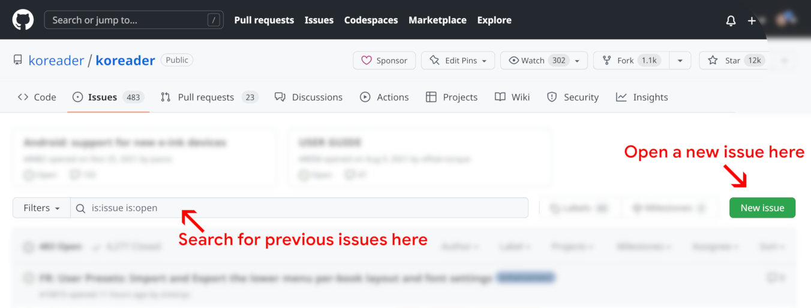
На страницата Проблеми (Issues) щракнете върху бутона Нов проблем (New Issue). Но преди да направите това, предлагаме да използвате лентата за търсене, за да видите дали вече няма съществуващ проблем по същата тема. Можете също да проверите други отворени проблеми, за да имате представа за процеса.
Когато щракнете върху бутона Нов проблем, ще ви бъдат представени две опции:
Щракнете върху подходящата и следвайте инструкциите на страницата, за да докладвате вашия проблем или предложение.
Ако съобщавате за програмна грешка, подробните регистрационни файлове за отстраняване на грешки (verbose debug logs) са много полезни за определяне на проблема. Можете да ги активирате чрез:
/ Помощ / Съобщаване на дефект / Подробен дневник за грешкиМожете също да намерите номера на версията на вашия KOReader и типа на устройството ви от същия диалогов прозорец за докладване.
Ако имате предложение или въпрос, свързан с това Потребителско ръководство, можете да пишете в дискусията в GitHub
Да намерите други потребители на KOReader във форумите на MobileRead |
Да се свържете с нас в чата в Gitter |
Да подкрепите проекта чрез Liberapay |